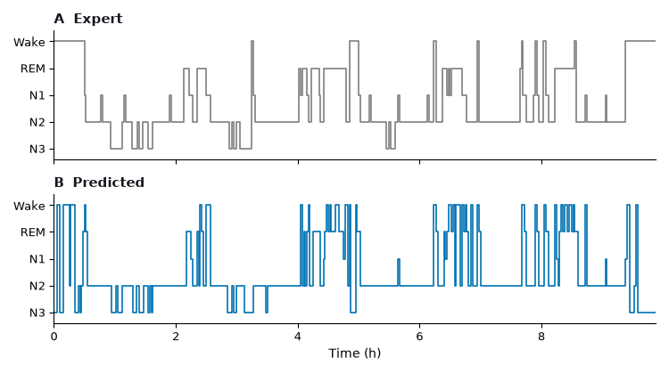

Note
Go to the end to download the full example code.
Sleep staging on the Sleep Physionet dataset using Chambon2018 network#
This tutorial shows how to train and test a sleep staging neural network with Braindecode. We adapt the time distributed approach of [1] to learn on sequences of EEG windows using the openly accessible Sleep Physionet dataset [2] [3].
# Authors: Hubert Banville <hubert.jbanville@gmail.com>
#
# License: BSD (3-clause)
Loading and preprocessing the dataset#
Loading#
First, we load the data using the
braindecode.datasets.sleep_physionet.SleepPhysionet class. We load
two recordings from two different individuals: we will use the first one to
train our network and the second one to evaluate performance (as in the MNE
sleep staging example).
from numbers import Integral
from braindecode.datasets import SleepPhysionet
subject_ids = [0, 1]
dataset = SleepPhysionet(subject_ids=subject_ids, recording_ids=[2], crop_wake_mins=30)
0%| | 0.00/51.6M [00:00<?, ?B/s]
0%| | 66.6k/51.6M [00:00<01:39, 517kB/s]
0%| | 119k/51.6M [00:00<02:10, 395kB/s]
0%| | 160k/51.6M [00:00<02:32, 337kB/s]
0%|▏ | 206k/51.6M [00:00<02:22, 362kB/s]
0%|▏ | 255k/51.6M [00:00<02:16, 377kB/s]
1%|▏ | 304k/51.6M [00:00<02:10, 393kB/s]
1%|▎ | 361k/51.6M [00:00<01:58, 433kB/s]
1%|▎ | 407k/51.6M [00:01<02:14, 380kB/s]
1%|▎ | 468k/51.6M [00:01<02:10, 392kB/s]
1%|▍ | 525k/51.6M [00:01<02:00, 425kB/s]
1%|▍ | 569k/51.6M [00:01<02:05, 406kB/s]
1%|▍ | 615k/51.6M [00:01<02:03, 412kB/s]
1%|▌ | 689k/51.6M [00:01<01:50, 460kB/s]
1%|▌ | 736k/51.6M [00:01<02:05, 407kB/s]
2%|▌ | 779k/51.6M [00:01<02:06, 401kB/s]
2%|▋ | 828k/51.6M [00:02<02:00, 421kB/s]
2%|▋ | 886k/51.6M [00:02<01:54, 445kB/s]
2%|▋ | 951k/51.6M [00:02<01:50, 459kB/s]
2%|▊ | 998k/51.6M [00:02<01:50, 460kB/s]
2%|▊ | 1.05M/51.6M [00:02<02:01, 417kB/s]
2%|▊ | 1.12M/51.6M [00:02<01:46, 474kB/s]
2%|▊ | 1.18M/51.6M [00:02<01:41, 498kB/s]
2%|▉ | 1.25M/51.6M [00:02<01:40, 499kB/s]
3%|▉ | 1.30M/51.6M [00:03<01:45, 477kB/s]
3%|▉ | 1.35M/51.6M [00:03<01:50, 453kB/s]
3%|█ | 1.42M/51.6M [00:03<01:48, 464kB/s]
3%|█ | 1.48M/51.6M [00:03<01:42, 491kB/s]
3%|█ | 1.53M/51.6M [00:03<01:41, 492kB/s]
3%|█▏ | 1.58M/51.6M [00:03<01:52, 446kB/s]
3%|█▏ | 1.64M/51.6M [00:03<01:42, 490kB/s]
3%|█▏ | 1.69M/51.6M [00:03<01:43, 482kB/s]
3%|█▎ | 1.74M/51.6M [00:03<01:45, 472kB/s]
3%|█▎ | 1.79M/51.6M [00:04<01:45, 470kB/s]
4%|█▎ | 1.84M/51.6M [00:04<01:47, 462kB/s]
4%|█▍ | 1.88M/51.6M [00:04<01:47, 463kB/s]
4%|█▍ | 1.93M/51.6M [00:04<01:51, 446kB/s]
4%|█▍ | 1.98M/51.6M [00:04<01:53, 438kB/s]
4%|█▍ | 2.02M/51.6M [00:04<02:02, 406kB/s]
4%|█▌ | 2.07M/51.6M [00:04<01:58, 417kB/s]
4%|█▌ | 2.13M/51.6M [00:04<01:48, 458kB/s]
4%|█▌ | 2.20M/51.6M [00:05<01:55, 426kB/s]
4%|█▋ | 2.26M/51.6M [00:05<01:42, 480kB/s]
4%|█▋ | 2.31M/51.6M [00:05<01:43, 477kB/s]
5%|█▋ | 2.36M/51.6M [00:05<01:43, 477kB/s]
5%|█▊ | 2.41M/51.6M [00:05<01:43, 477kB/s]
5%|█▊ | 2.46M/51.6M [00:05<01:42, 480kB/s]
5%|█▊ | 2.51M/51.6M [00:05<01:43, 473kB/s]
5%|█▉ | 2.56M/51.6M [00:05<01:47, 458kB/s]
5%|█▉ | 2.60M/51.6M [00:05<01:48, 451kB/s]
5%|█▉ | 2.65M/51.6M [00:05<01:50, 444kB/s]
5%|█▉ | 2.71M/51.6M [00:06<01:47, 453kB/s]
5%|██ | 2.78M/51.6M [00:06<01:44, 469kB/s]
5%|██ | 2.83M/51.6M [00:06<01:45, 461kB/s]
6%|██ | 2.88M/51.6M [00:06<01:43, 472kB/s]
6%|██▏ | 2.93M/51.6M [00:06<01:43, 472kB/s]
6%|██▏ | 2.98M/51.6M [00:06<01:45, 460kB/s]
6%|██▏ | 3.03M/51.6M [00:06<01:48, 449kB/s]
6%|██▎ | 3.08M/51.6M [00:06<01:43, 467kB/s]
6%|██▎ | 3.15M/51.6M [00:07<01:43, 470kB/s]
6%|██▎ | 3.21M/51.6M [00:07<01:44, 463kB/s]
6%|██▍ | 3.26M/51.6M [00:07<01:57, 410kB/s]
6%|██▍ | 3.32M/51.6M [00:07<01:55, 419kB/s]
7%|██▍ | 3.37M/51.6M [00:07<01:54, 422kB/s]
7%|██▌ | 3.43M/51.6M [00:07<01:49, 439kB/s]
7%|██▌ | 3.50M/51.6M [00:07<01:47, 448kB/s]
7%|██▌ | 3.55M/51.6M [00:07<01:45, 454kB/s]
7%|██▋ | 3.61M/51.6M [00:08<01:43, 462kB/s]
7%|██▋ | 3.66M/51.6M [00:08<01:43, 464kB/s]
7%|██▋ | 3.73M/51.6M [00:08<01:37, 490kB/s]
7%|██▊ | 3.78M/51.6M [00:08<01:46, 451kB/s]
7%|██▊ | 3.84M/51.6M [00:08<01:35, 500kB/s]
8%|██▉ | 3.91M/51.6M [00:08<01:35, 499kB/s]
8%|██▉ | 3.97M/51.6M [00:08<01:32, 518kB/s]
8%|██▉ | 4.02M/51.6M [00:08<01:34, 504kB/s]
8%|██▉ | 4.07M/51.6M [00:09<01:41, 466kB/s]
8%|███ | 4.14M/51.6M [00:09<01:41, 469kB/s]
8%|███ | 4.20M/51.6M [00:09<01:35, 497kB/s]
8%|███▏ | 4.25M/51.6M [00:09<01:35, 498kB/s]
8%|███▏ | 4.30M/51.6M [00:09<01:38, 481kB/s]
8%|███▏ | 4.36M/51.6M [00:09<01:35, 494kB/s]
9%|███▏ | 4.41M/51.6M [00:09<01:38, 482kB/s]
9%|███▎ | 4.46M/51.6M [00:09<01:38, 478kB/s]
9%|███▎ | 4.51M/51.6M [00:09<01:42, 461kB/s]
9%|███▎ | 4.58M/51.6M [00:10<01:36, 487kB/s]
9%|███▍ | 4.63M/51.6M [00:10<01:40, 467kB/s]
9%|███▍ | 4.70M/51.6M [00:10<01:33, 501kB/s]
9%|███▌ | 4.76M/51.6M [00:10<01:29, 522kB/s]
9%|███▌ | 4.82M/51.6M [00:10<01:40, 467kB/s]
9%|███▌ | 4.89M/51.6M [00:10<01:34, 494kB/s]
10%|███▋ | 4.95M/51.6M [00:10<01:34, 492kB/s]
10%|███▋ | 5.00M/51.6M [00:10<01:41, 458kB/s]
10%|███▋ | 5.05M/51.6M [00:11<01:41, 461kB/s]
10%|███▋ | 5.09M/51.6M [00:11<01:44, 445kB/s]
10%|███▊ | 5.15M/51.6M [00:11<01:45, 442kB/s]
10%|███▊ | 5.22M/51.6M [00:11<01:40, 460kB/s]
10%|███▉ | 5.28M/51.6M [00:11<01:38, 472kB/s]
10%|███▉ | 5.33M/51.6M [00:11<01:39, 465kB/s]
10%|███▉ | 5.40M/51.6M [00:11<01:35, 484kB/s]
11%|████ | 5.45M/51.6M [00:11<01:36, 480kB/s]
11%|████ | 5.51M/51.6M [00:12<01:34, 489kB/s]
11%|████ | 5.57M/51.6M [00:12<01:33, 495kB/s]
11%|████▏ | 5.62M/51.6M [00:12<01:33, 493kB/s]
11%|████▏ | 5.67M/51.6M [00:12<01:34, 484kB/s]
11%|████▏ | 5.72M/51.6M [00:12<01:35, 480kB/s]
11%|████▏ | 5.77M/51.6M [00:12<01:36, 476kB/s]
11%|████▎ | 5.82M/51.6M [00:12<01:35, 477kB/s]
11%|████▎ | 5.87M/51.6M [00:12<01:36, 472kB/s]
11%|████▎ | 5.91M/51.6M [00:12<01:37, 469kB/s]
12%|████▍ | 5.96M/51.6M [00:12<01:37, 469kB/s]
12%|████▍ | 6.01M/51.6M [00:13<01:43, 443kB/s]
12%|████▍ | 6.07M/51.6M [00:13<01:39, 460kB/s]
12%|████▌ | 6.12M/51.6M [00:13<01:38, 463kB/s]
12%|████▌ | 6.17M/51.6M [00:13<01:39, 458kB/s]
12%|████▌ | 6.23M/51.6M [00:13<01:33, 486kB/s]
12%|████▋ | 6.29M/51.6M [00:13<01:34, 479kB/s]
12%|████▋ | 6.36M/51.6M [00:13<01:33, 483kB/s]
12%|████▋ | 6.42M/51.6M [00:13<01:40, 449kB/s]
13%|████▊ | 6.50M/51.6M [00:14<01:33, 484kB/s]
13%|████▊ | 6.55M/51.6M [00:14<01:33, 482kB/s]
13%|████▊ | 6.60M/51.6M [00:14<01:33, 479kB/s]
13%|████▉ | 6.65M/51.6M [00:14<01:29, 501kB/s]
13%|████▉ | 6.70M/51.6M [00:14<01:30, 498kB/s]
13%|████▉ | 6.75M/51.6M [00:14<01:31, 491kB/s]
13%|█████ | 6.80M/51.6M [00:14<01:31, 490kB/s]
13%|█████ | 6.85M/51.6M [00:14<01:31, 489kB/s]
13%|█████ | 6.92M/51.6M [00:14<01:30, 493kB/s]
14%|█████▏ | 6.98M/51.6M [00:15<01:30, 494kB/s]
14%|█████▏ | 7.05M/51.6M [00:15<01:30, 495kB/s]
14%|█████▏ | 7.10M/51.6M [00:15<01:32, 480kB/s]
14%|█████▎ | 7.14M/51.6M [00:15<01:36, 461kB/s]
14%|█████▎ | 7.20M/51.6M [00:15<01:38, 450kB/s]
14%|█████▎ | 7.25M/51.6M [00:15<01:36, 458kB/s]
14%|█████▍ | 7.31M/51.6M [00:15<01:32, 478kB/s]
14%|█████▍ | 7.36M/51.6M [00:15<01:38, 449kB/s]
14%|█████▍ | 7.40M/51.6M [00:16<01:40, 441kB/s]
14%|█████▍ | 7.45M/51.6M [00:16<01:43, 427kB/s]
15%|█████▌ | 7.51M/51.6M [00:16<01:38, 448kB/s]
15%|█████▌ | 7.58M/51.6M [00:16<01:34, 467kB/s]
15%|█████▌ | 7.64M/51.6M [00:16<01:29, 493kB/s]
15%|█████▋ | 7.69M/51.6M [00:16<01:34, 466kB/s]
15%|█████▋ | 7.74M/51.6M [00:16<01:31, 478kB/s]
15%|█████▋ | 7.79M/51.6M [00:16<01:36, 454kB/s]
15%|█████▊ | 7.86M/51.6M [00:16<01:29, 489kB/s]
15%|█████▊ | 7.92M/51.6M [00:17<01:28, 492kB/s]
15%|█████▊ | 7.97M/51.6M [00:17<01:28, 494kB/s]
16%|█████▉ | 8.03M/51.6M [00:17<01:26, 506kB/s]
16%|█████▉ | 8.09M/51.6M [00:17<01:30, 481kB/s]
16%|█████▉ | 8.14M/51.6M [00:17<01:31, 475kB/s]
16%|██████ | 8.20M/51.6M [00:17<01:30, 482kB/s]
16%|██████ | 8.27M/51.6M [00:17<01:29, 485kB/s]
16%|██████▏ | 8.32M/51.6M [00:17<01:25, 505kB/s]
16%|██████▏ | 8.38M/51.6M [00:18<01:28, 488kB/s]
16%|██████▏ | 8.42M/51.6M [00:18<01:29, 481kB/s]
16%|██████▏ | 8.47M/51.6M [00:18<01:37, 442kB/s]
17%|██████▎ | 8.53M/51.6M [00:18<01:35, 451kB/s]
17%|██████▎ | 8.59M/51.6M [00:18<01:29, 480kB/s]
17%|██████▎ | 8.64M/51.6M [00:18<01:29, 483kB/s]
17%|██████▍ | 8.68M/51.6M [00:18<01:34, 457kB/s]
17%|██████▍ | 8.74M/51.6M [00:18<01:33, 461kB/s]
17%|██████▍ | 8.79M/51.6M [00:18<01:32, 463kB/s]
17%|██████▌ | 8.84M/51.6M [00:19<01:32, 463kB/s]
17%|██████▌ | 8.89M/51.6M [00:19<01:32, 462kB/s]
17%|██████▌ | 8.94M/51.6M [00:19<01:32, 461kB/s]
17%|██████▌ | 8.99M/51.6M [00:19<01:34, 452kB/s]
18%|██████▋ | 9.04M/51.6M [00:19<01:29, 477kB/s]
18%|██████▋ | 9.09M/51.6M [00:19<01:30, 471kB/s]
18%|██████▋ | 9.14M/51.6M [00:19<01:44, 406kB/s]
18%|██████▊ | 9.20M/51.6M [00:19<01:39, 427kB/s]
18%|██████▊ | 9.25M/51.6M [00:19<01:37, 434kB/s]
18%|██████▊ | 9.31M/51.6M [00:20<01:37, 434kB/s]
18%|██████▉ | 9.37M/51.6M [00:20<01:27, 483kB/s]
18%|██████▉ | 9.43M/51.6M [00:20<01:29, 470kB/s]
18%|██████▉ | 9.48M/51.6M [00:20<01:40, 421kB/s]
18%|███████ | 9.52M/51.6M [00:20<01:57, 358kB/s]
19%|███████ | 9.56M/51.6M [00:20<01:57, 359kB/s]
19%|███████ | 9.61M/51.6M [00:20<01:48, 389kB/s]
19%|███████ | 9.65M/51.6M [00:20<01:48, 386kB/s]
19%|███████▏ | 9.71M/51.6M [00:21<01:37, 431kB/s]
19%|███████▏ | 9.76M/51.6M [00:21<01:34, 443kB/s]
19%|███████▏ | 9.81M/51.6M [00:21<01:40, 416kB/s]
19%|███████▎ | 9.87M/51.6M [00:21<01:27, 478kB/s]
19%|███████▎ | 9.93M/51.6M [00:21<01:33, 447kB/s]
19%|███████▎ | 9.98M/51.6M [00:21<01:38, 423kB/s]
19%|███████▍ | 10.0M/51.6M [00:21<01:43, 401kB/s]
19%|███████▍ | 10.1M/51.6M [00:21<01:44, 396kB/s]
20%|███████▍ | 10.1M/51.6M [00:22<01:57, 352kB/s]
20%|███████▍ | 10.1M/51.6M [00:22<02:00, 343kB/s]
20%|███████▍ | 10.2M/51.6M [00:22<01:59, 346kB/s]
20%|███████▌ | 10.2M/51.6M [00:22<02:02, 338kB/s]
20%|███████▌ | 10.3M/51.6M [00:22<01:56, 356kB/s]
20%|███████▌ | 10.3M/51.6M [00:22<01:47, 383kB/s]
20%|███████▋ | 10.4M/51.6M [00:22<01:57, 350kB/s]
20%|███████▋ | 10.4M/51.6M [00:22<01:58, 347kB/s]
20%|███████▋ | 10.4M/51.6M [00:23<02:02, 337kB/s]
20%|███████▋ | 10.5M/51.6M [00:23<02:05, 328kB/s]
20%|███████▋ | 10.5M/51.6M [00:23<02:20, 292kB/s]
20%|███████▊ | 10.5M/51.6M [00:23<02:27, 278kB/s]
21%|███████▊ | 10.6M/51.6M [00:23<02:15, 303kB/s]
21%|███████▊ | 10.7M/51.6M [00:23<01:51, 366kB/s]
21%|███████▉ | 10.7M/51.6M [00:23<01:37, 421kB/s]
21%|███████▉ | 10.8M/51.6M [00:24<01:51, 368kB/s]
21%|███████▉ | 10.8M/51.6M [00:24<01:39, 409kB/s]
21%|███████▉ | 10.9M/51.6M [00:24<01:47, 378kB/s]
21%|████████ | 10.9M/51.6M [00:24<01:45, 386kB/s]
21%|████████ | 11.0M/51.6M [00:24<01:41, 401kB/s]
21%|████████ | 11.0M/51.6M [00:24<01:34, 428kB/s]
22%|████████▏ | 11.1M/51.6M [00:24<01:29, 452kB/s]
22%|████████▏ | 11.2M/51.6M [00:24<01:32, 439kB/s]
22%|████████▎ | 11.2M/51.6M [00:25<01:26, 466kB/s]
22%|████████▎ | 11.3M/51.6M [00:25<01:21, 493kB/s]
22%|████████▎ | 11.3M/51.6M [00:25<01:27, 463kB/s]
22%|████████▍ | 11.4M/51.6M [00:25<01:26, 466kB/s]
22%|████████▍ | 11.4M/51.6M [00:25<01:24, 477kB/s]
22%|████████▍ | 11.5M/51.6M [00:25<01:28, 454kB/s]
22%|████████▍ | 11.5M/51.6M [00:25<01:32, 434kB/s]
22%|████████▌ | 11.6M/51.6M [00:25<01:29, 447kB/s]
23%|████████▌ | 11.7M/51.6M [00:26<01:25, 465kB/s]
23%|████████▋ | 11.7M/51.6M [00:26<01:25, 467kB/s]
23%|████████▋ | 11.8M/51.6M [00:26<01:21, 491kB/s]
23%|████████▋ | 11.8M/51.6M [00:26<01:21, 487kB/s]
23%|████████▊ | 11.9M/51.6M [00:26<01:23, 479kB/s]
23%|████████▊ | 11.9M/51.6M [00:26<01:27, 455kB/s]
23%|████████▊ | 12.0M/51.6M [00:26<01:36, 411kB/s]
23%|████████▉ | 12.1M/51.6M [00:26<01:28, 448kB/s]
23%|████████▉ | 12.1M/51.6M [00:26<01:32, 425kB/s]
24%|████████▉ | 12.2M/51.6M [00:27<01:42, 386kB/s]
24%|████████▉ | 12.2M/51.6M [00:27<01:42, 385kB/s]
24%|█████████ | 12.2M/51.6M [00:27<01:41, 387kB/s]
24%|█████████ | 12.3M/51.6M [00:27<01:59, 330kB/s]
24%|█████████ | 12.3M/51.6M [00:27<01:56, 336kB/s]
24%|█████████ | 12.4M/51.6M [00:27<01:51, 354kB/s]
24%|█████████▏ | 12.4M/51.6M [00:27<01:36, 406kB/s]
24%|█████████▏ | 12.5M/51.6M [00:27<01:35, 408kB/s]
24%|█████████▏ | 12.5M/51.6M [00:28<01:33, 417kB/s]
24%|█████████▎ | 12.6M/51.6M [00:28<01:27, 448kB/s]
24%|█████████▎ | 12.6M/51.6M [00:28<01:30, 429kB/s]
25%|█████████▎ | 12.7M/51.6M [00:28<01:26, 451kB/s]
25%|█████████▍ | 12.7M/51.6M [00:28<01:22, 472kB/s]
25%|█████████▍ | 12.8M/51.6M [00:28<01:24, 458kB/s]
25%|█████████▍ | 12.9M/51.6M [00:28<01:26, 451kB/s]
25%|█████████▍ | 12.9M/51.6M [00:29<01:46, 365kB/s]
25%|█████████▌ | 13.0M/51.6M [00:29<01:37, 397kB/s]
25%|█████████▌ | 13.0M/51.6M [00:29<01:42, 377kB/s]
25%|█████████▋ | 13.1M/51.6M [00:29<01:33, 411kB/s]
25%|█████████▋ | 13.1M/51.6M [00:29<01:44, 370kB/s]
26%|█████████▋ | 13.2M/51.6M [00:29<01:46, 360kB/s]
26%|█████████▋ | 13.2M/51.6M [00:29<01:41, 378kB/s]
26%|█████████▊ | 13.3M/51.6M [00:29<01:30, 425kB/s]
26%|█████████▊ | 13.3M/51.6M [00:30<01:25, 450kB/s]
26%|█████████▊ | 13.4M/51.6M [00:30<01:35, 400kB/s]
26%|█████████▉ | 13.5M/51.6M [00:30<01:18, 488kB/s]
26%|█████████▉ | 13.5M/51.6M [00:30<01:15, 507kB/s]
26%|██████████ | 13.6M/51.6M [00:30<01:15, 503kB/s]
26%|██████████ | 13.6M/51.6M [00:30<01:20, 473kB/s]
27%|██████████ | 13.7M/51.6M [00:30<01:16, 498kB/s]
27%|██████████▏ | 13.8M/51.6M [00:30<01:14, 507kB/s]
27%|██████████▏ | 13.8M/51.6M [00:31<01:14, 504kB/s]
27%|██████████▏ | 13.9M/51.6M [00:31<01:12, 518kB/s]
27%|██████████▎ | 14.0M/51.6M [00:31<01:12, 522kB/s]
27%|██████████▎ | 14.0M/51.6M [00:31<01:12, 519kB/s]
27%|██████████▎ | 14.1M/51.6M [00:31<01:13, 508kB/s]
27%|██████████▍ | 14.1M/51.6M [00:31<01:14, 506kB/s]
27%|██████████▍ | 14.2M/51.6M [00:31<01:14, 499kB/s]
28%|██████████▍ | 14.2M/51.6M [00:31<01:17, 485kB/s]
28%|██████████▌ | 14.3M/51.6M [00:31<01:20, 461kB/s]
28%|██████████▌ | 14.4M/51.6M [00:32<01:17, 481kB/s]
28%|██████████▌ | 14.4M/51.6M [00:32<01:18, 474kB/s]
28%|██████████▋ | 14.5M/51.6M [00:32<01:18, 474kB/s]
28%|██████████▋ | 14.6M/51.6M [00:32<01:14, 496kB/s]
28%|██████████▊ | 14.6M/51.6M [00:32<01:14, 496kB/s]
28%|██████████▊ | 14.7M/51.6M [00:32<01:11, 519kB/s]
29%|██████████▊ | 14.7M/51.6M [00:32<01:13, 505kB/s]
29%|██████████▉ | 14.8M/51.6M [00:33<01:29, 413kB/s]
29%|██████████▉ | 14.8M/51.6M [00:33<01:28, 416kB/s]
29%|██████████▉ | 14.9M/51.6M [00:33<01:31, 403kB/s]
29%|███████████ | 14.9M/51.6M [00:33<01:25, 427kB/s]
29%|███████████ | 15.0M/51.6M [00:33<01:19, 462kB/s]
29%|███████████ | 15.0M/51.6M [00:33<01:22, 445kB/s]
29%|███████████▏ | 15.1M/51.6M [00:33<01:15, 481kB/s]
29%|███████████▏ | 15.2M/51.6M [00:33<01:21, 450kB/s]
30%|███████████▏ | 15.2M/51.6M [00:33<01:09, 524kB/s]
30%|███████████▎ | 15.3M/51.6M [00:34<01:13, 494kB/s]
30%|███████████▎ | 15.3M/51.6M [00:34<01:15, 481kB/s]
30%|███████████▎ | 15.4M/51.6M [00:34<01:22, 439kB/s]
30%|███████████▎ | 15.4M/51.6M [00:34<01:27, 414kB/s]
30%|███████████▍ | 15.5M/51.6M [00:34<01:33, 385kB/s]
30%|███████████▍ | 15.5M/51.6M [00:34<01:35, 376kB/s]
30%|███████████▍ | 15.6M/51.6M [00:34<01:38, 366kB/s]
30%|███████████▌ | 15.6M/51.6M [00:34<01:33, 387kB/s]
30%|███████████▌ | 15.7M/51.6M [00:35<01:40, 356kB/s]
30%|███████████▌ | 15.7M/51.6M [00:35<01:40, 357kB/s]
31%|███████████▌ | 15.8M/51.6M [00:35<01:35, 377kB/s]
31%|███████████▋ | 15.8M/51.6M [00:35<01:36, 370kB/s]
31%|███████████▋ | 15.9M/51.6M [00:35<01:42, 348kB/s]
31%|███████████▋ | 15.9M/51.6M [00:35<01:37, 367kB/s]
31%|███████████▋ | 15.9M/51.6M [00:35<01:38, 361kB/s]
31%|███████████▊ | 16.0M/51.6M [00:35<01:39, 360kB/s]
31%|███████████▊ | 16.0M/51.6M [00:36<01:32, 384kB/s]
31%|███████████▊ | 16.1M/51.6M [00:36<01:24, 420kB/s]
31%|███████████▉ | 16.2M/51.6M [00:36<01:16, 465kB/s]
31%|███████████▉ | 16.2M/51.6M [00:36<01:33, 377kB/s]
32%|███████████▉ | 16.3M/51.6M [00:36<01:14, 474kB/s]
32%|████████████ | 16.4M/51.6M [00:36<01:12, 490kB/s]
32%|████████████ | 16.4M/51.6M [00:36<01:07, 522kB/s]
32%|████████████▏ | 16.5M/51.6M [00:37<01:13, 481kB/s]
32%|████████████▏ | 16.5M/51.6M [00:37<01:07, 523kB/s]
32%|████████████▏ | 16.6M/51.6M [00:37<01:09, 501kB/s]
32%|████████████▎ | 16.7M/51.6M [00:37<01:21, 431kB/s]
32%|████████████▎ | 16.7M/51.6M [00:37<01:28, 393kB/s]
32%|████████████▎ | 16.8M/51.6M [00:37<01:24, 410kB/s]
33%|████████████▎ | 16.8M/51.6M [00:37<01:21, 429kB/s]
33%|████████████▍ | 16.9M/51.6M [00:37<01:21, 425kB/s]
33%|████████████▍ | 16.9M/51.6M [00:38<01:25, 408kB/s]
33%|████████████▍ | 16.9M/51.6M [00:38<01:32, 374kB/s]
33%|████████████▍ | 17.0M/51.6M [00:38<01:34, 367kB/s]
33%|████████████▌ | 17.0M/51.6M [00:38<01:35, 362kB/s]
33%|████████████▌ | 17.1M/51.6M [00:38<01:29, 386kB/s]
33%|████████████▌ | 17.1M/51.6M [00:38<01:34, 365kB/s]
33%|████████████▋ | 17.2M/51.6M [00:38<01:34, 364kB/s]
33%|████████████▋ | 17.2M/51.6M [00:38<01:39, 346kB/s]
33%|████████████▋ | 17.2M/51.6M [00:38<01:36, 355kB/s]
34%|████████████▋ | 17.3M/51.6M [00:39<01:25, 402kB/s]
34%|████████████▊ | 17.3M/51.6M [00:39<01:26, 396kB/s]
34%|████████████▊ | 17.4M/51.6M [00:39<01:24, 405kB/s]
34%|████████████▊ | 17.5M/51.6M [00:39<01:17, 439kB/s]
34%|████████████▉ | 17.5M/51.6M [00:39<01:17, 442kB/s]
34%|████████████▉ | 17.6M/51.6M [00:39<01:29, 382kB/s]
34%|████████████▉ | 17.6M/51.6M [00:39<01:21, 420kB/s]
34%|████████████▉ | 17.7M/51.6M [00:39<01:21, 418kB/s]
34%|█████████████ | 17.7M/51.6M [00:40<01:23, 407kB/s]
34%|█████████████ | 17.8M/51.6M [00:40<01:20, 422kB/s]
34%|█████████████ | 17.8M/51.6M [00:40<01:30, 375kB/s]
35%|█████████████▏ | 17.9M/51.6M [00:40<01:27, 386kB/s]
35%|█████████████▏ | 17.9M/51.6M [00:40<01:23, 403kB/s]
35%|█████████████▏ | 18.0M/51.6M [00:40<01:29, 377kB/s]
35%|█████████████▏ | 18.0M/51.6M [00:40<01:30, 371kB/s]
35%|█████████████▎ | 18.0M/51.6M [00:40<01:31, 368kB/s]
35%|█████████████▎ | 18.1M/51.6M [00:41<01:29, 376kB/s]
35%|█████████████▎ | 18.1M/51.6M [00:41<01:31, 365kB/s]
35%|█████████████▍ | 18.2M/51.6M [00:41<01:41, 328kB/s]
35%|█████████████▍ | 18.2M/51.6M [00:41<01:31, 363kB/s]
35%|█████████████▍ | 18.3M/51.6M [00:41<01:34, 352kB/s]
35%|█████████████▍ | 18.3M/51.6M [00:41<01:29, 372kB/s]
36%|█████████████▌ | 18.4M/51.6M [00:41<01:30, 368kB/s]
36%|█████████████▌ | 18.4M/51.6M [00:41<01:26, 385kB/s]
36%|█████████████▌ | 18.5M/51.6M [00:42<01:22, 400kB/s]
36%|█████████████▌ | 18.5M/51.6M [00:42<01:26, 383kB/s]
36%|█████████████▋ | 18.6M/51.6M [00:42<01:21, 408kB/s]
36%|█████████████▋ | 18.6M/51.6M [00:42<01:18, 422kB/s]
36%|█████████████▋ | 18.6M/51.6M [00:42<01:36, 341kB/s]
36%|█████████████▊ | 18.7M/51.6M [00:42<01:57, 280kB/s]
36%|█████████████▊ | 18.7M/51.6M [00:42<01:47, 305kB/s]
36%|█████████████▊ | 18.8M/51.6M [00:43<01:37, 337kB/s]
37%|█████████████▊ | 18.8M/51.6M [00:43<01:25, 381kB/s]
37%|█████████████▉ | 18.9M/51.6M [00:43<01:24, 387kB/s]
37%|█████████████▉ | 18.9M/51.6M [00:43<01:29, 367kB/s]
37%|█████████████▉ | 19.0M/51.6M [00:43<01:21, 398kB/s]
37%|██████████████ | 19.0M/51.6M [00:43<01:18, 415kB/s]
37%|██████████████ | 19.1M/51.6M [00:43<01:20, 405kB/s]
37%|██████████████ | 19.1M/51.6M [00:43<01:21, 397kB/s]
37%|██████████████▏ | 19.2M/51.6M [00:44<01:15, 428kB/s]
37%|██████████████▏ | 19.2M/51.6M [00:44<01:13, 439kB/s]
37%|██████████████▏ | 19.3M/51.6M [00:44<01:10, 457kB/s]
37%|██████████████▏ | 19.4M/51.6M [00:44<01:11, 451kB/s]
38%|██████████████▎ | 19.4M/51.6M [00:44<01:05, 494kB/s]
38%|██████████████▎ | 19.5M/51.6M [00:44<01:05, 491kB/s]
38%|██████████████▍ | 19.5M/51.6M [00:44<01:07, 473kB/s]
38%|██████████████▍ | 19.6M/51.6M [00:44<01:10, 452kB/s]
38%|██████████████▍ | 19.6M/51.6M [00:44<01:15, 424kB/s]
38%|██████████████▍ | 19.7M/51.6M [00:45<01:17, 411kB/s]
38%|██████████████▌ | 19.7M/51.6M [00:45<01:17, 413kB/s]
38%|██████████████▌ | 19.8M/51.6M [00:45<01:20, 394kB/s]
38%|██████████████▌ | 19.8M/51.6M [00:45<01:18, 404kB/s]
38%|██████████████▌ | 19.9M/51.6M [00:45<01:12, 437kB/s]
39%|██████████████▋ | 19.9M/51.6M [00:45<01:09, 458kB/s]
39%|██████████████▋ | 20.0M/51.6M [00:45<01:16, 416kB/s]
39%|██████████████▋ | 20.0M/51.6M [00:45<01:13, 430kB/s]
39%|██████████████▊ | 20.1M/51.6M [00:46<01:11, 441kB/s]
39%|██████████████▊ | 20.1M/51.6M [00:46<01:06, 476kB/s]
39%|██████████████▊ | 20.2M/51.6M [00:46<01:12, 432kB/s]
39%|██████████████▉ | 20.3M/51.6M [00:46<01:05, 478kB/s]
39%|██████████████▉ | 20.3M/51.6M [00:46<01:07, 460kB/s]
40%|███████████████ | 20.4M/51.6M [00:46<01:04, 483kB/s]
40%|███████████████ | 20.4M/51.6M [00:46<01:07, 464kB/s]
40%|███████████████ | 20.5M/51.6M [00:46<01:05, 478kB/s]
40%|███████████████▏ | 20.6M/51.6M [00:47<01:06, 466kB/s]
40%|███████████████▏ | 20.6M/51.6M [00:47<01:07, 460kB/s]
40%|███████████████▏ | 20.7M/51.6M [00:47<01:07, 458kB/s]
40%|███████████████▎ | 20.7M/51.6M [00:47<01:06, 462kB/s]
40%|███████████████▎ | 20.8M/51.6M [00:47<01:03, 487kB/s]
40%|███████████████▎ | 20.8M/51.6M [00:47<01:04, 479kB/s]
40%|███████████████▎ | 20.9M/51.6M [00:47<01:05, 471kB/s]
41%|███████████████▍ | 20.9M/51.6M [00:47<01:04, 473kB/s]
41%|███████████████▍ | 21.0M/51.6M [00:47<01:05, 469kB/s]
41%|███████████████▍ | 21.0M/51.6M [00:48<00:59, 510kB/s]
41%|███████████████▌ | 21.1M/51.6M [00:48<01:09, 438kB/s]
41%|███████████████▌ | 21.1M/51.6M [00:48<01:09, 437kB/s]
41%|███████████████▌ | 21.2M/51.6M [00:48<01:09, 435kB/s]
41%|███████████████▋ | 21.2M/51.6M [00:48<01:29, 339kB/s]
41%|███████████████▋ | 21.3M/51.6M [00:48<01:19, 381kB/s]
41%|███████████████▋ | 21.3M/51.6M [00:48<01:20, 376kB/s]
41%|███████████████▊ | 21.4M/51.6M [00:49<01:13, 410kB/s]
42%|███████████████▊ | 21.4M/51.6M [00:49<01:16, 394kB/s]
42%|███████████████▊ | 21.5M/51.6M [00:49<01:16, 392kB/s]
42%|███████████████▊ | 21.5M/51.6M [00:49<01:12, 415kB/s]
42%|███████████████▉ | 21.6M/51.6M [00:49<01:14, 405kB/s]
42%|███████████████▉ | 21.6M/51.6M [00:49<01:17, 387kB/s]
42%|███████████████▉ | 21.7M/51.6M [00:49<01:18, 381kB/s]
42%|███████████████▉ | 21.7M/51.6M [00:49<01:14, 398kB/s]
42%|████████████████ | 21.8M/51.6M [00:49<01:09, 429kB/s]
42%|████████████████ | 21.8M/51.6M [00:50<01:11, 414kB/s]
42%|████████████████ | 21.9M/51.6M [00:50<01:17, 384kB/s]
42%|████████████████▏ | 21.9M/51.6M [00:50<01:16, 386kB/s]
43%|████████████████▏ | 22.0M/51.6M [00:50<01:12, 408kB/s]
43%|████████████████▏ | 22.0M/51.6M [00:50<01:18, 379kB/s]
43%|████████████████▎ | 22.1M/51.6M [00:50<01:20, 369kB/s]
43%|████████████████▎ | 22.1M/51.6M [00:50<01:15, 393kB/s]
43%|████████████████▎ | 22.2M/51.6M [00:50<01:08, 430kB/s]
43%|████████████████▎ | 22.2M/51.6M [00:51<01:14, 396kB/s]
43%|████████████████▍ | 22.3M/51.6M [00:51<01:13, 397kB/s]
43%|████████████████▍ | 22.3M/51.6M [00:51<01:10, 417kB/s]
43%|████████████████▍ | 22.4M/51.6M [00:51<01:13, 400kB/s]
43%|████████████████▌ | 22.4M/51.6M [00:51<01:05, 443kB/s]
44%|████████████████▌ | 22.5M/51.6M [00:51<01:05, 443kB/s]
44%|████████████████▌ | 22.6M/51.6M [00:51<01:01, 474kB/s]
44%|████████████████▋ | 22.6M/51.6M [00:52<01:08, 424kB/s]
44%|████████████████▋ | 22.7M/51.6M [00:52<00:58, 499kB/s]
44%|████████████████▊ | 22.8M/51.6M [00:52<00:57, 504kB/s]
44%|████████████████▊ | 22.8M/51.6M [00:52<00:58, 488kB/s]
44%|████████████████▊ | 22.9M/51.6M [00:52<00:58, 489kB/s]
44%|████████████████▊ | 22.9M/51.6M [00:52<01:01, 466kB/s]
44%|████████████████▉ | 23.0M/51.6M [00:52<01:01, 464kB/s]
45%|████████████████▉ | 23.0M/51.6M [00:52<01:05, 436kB/s]
45%|████████████████▉ | 23.1M/51.6M [00:52<01:04, 441kB/s]
45%|█████████████████ | 23.1M/51.6M [00:53<01:08, 416kB/s]
45%|█████████████████ | 23.2M/51.6M [00:53<01:08, 413kB/s]
45%|█████████████████ | 23.2M/51.6M [00:53<01:05, 432kB/s]
45%|█████████████████▏ | 23.3M/51.6M [00:53<01:00, 467kB/s]
45%|█████████████████▏ | 23.3M/51.6M [00:53<00:59, 478kB/s]
45%|█████████████████▏ | 23.4M/51.6M [00:53<00:57, 493kB/s]
45%|█████████████████▎ | 23.4M/51.6M [00:53<00:57, 490kB/s]
46%|█████████████████▎ | 23.5M/51.6M [00:53<00:58, 485kB/s]
46%|█████████████████▎ | 23.5M/51.6M [00:53<00:59, 473kB/s]
46%|█████████████████▎ | 23.6M/51.6M [00:54<00:59, 472kB/s]
46%|█████████████████▍ | 23.6M/51.6M [00:54<01:00, 464kB/s]
46%|█████████████████▍ | 23.7M/51.6M [00:54<01:01, 457kB/s]
46%|█████████████████▍ | 23.7M/51.6M [00:54<01:02, 448kB/s]
46%|█████████████████▌ | 23.8M/51.6M [00:54<00:59, 466kB/s]
46%|█████████████████▌ | 23.8M/51.6M [00:54<01:01, 454kB/s]
46%|█████████████████▌ | 23.9M/51.6M [00:54<01:02, 443kB/s]
46%|█████████████████▌ | 23.9M/51.6M [00:54<01:02, 441kB/s]
46%|█████████████████▋ | 24.0M/51.6M [00:54<01:06, 417kB/s]
47%|█████████████████▋ | 24.0M/51.6M [00:55<01:53, 244kB/s]
47%|█████████████████▋ | 24.1M/51.6M [00:55<01:49, 252kB/s]
47%|█████████████████▋ | 24.1M/51.6M [00:55<01:45, 260kB/s]
47%|█████████████████▊ | 24.1M/51.6M [00:55<01:42, 269kB/s]
47%|█████████████████▊ | 24.2M/51.6M [00:55<01:26, 319kB/s]
47%|█████████████████▊ | 24.2M/51.6M [00:55<01:19, 343kB/s]
47%|█████████████████▊ | 24.3M/51.6M [00:56<01:20, 340kB/s]
47%|█████████████████▉ | 24.3M/51.6M [00:56<01:22, 329kB/s]
47%|█████████████████▉ | 24.3M/51.6M [00:56<01:15, 362kB/s]
47%|█████████████████▉ | 24.4M/51.6M [00:56<01:17, 352kB/s]
47%|█████████████████▉ | 24.4M/51.6M [00:56<01:12, 376kB/s]
47%|██████████████████ | 24.5M/51.6M [00:56<01:08, 395kB/s]
48%|██████████████████ | 24.5M/51.6M [00:56<01:14, 361kB/s]
48%|██████████████████ | 24.6M/51.6M [00:56<01:12, 373kB/s]
48%|██████████████████▏ | 24.6M/51.6M [00:57<01:13, 365kB/s]
48%|██████████████████▏ | 24.7M/51.6M [00:57<01:14, 361kB/s]
48%|██████████████████▏ | 24.7M/51.6M [00:57<01:16, 353kB/s]
48%|██████████████████▏ | 24.8M/51.6M [00:57<01:06, 403kB/s]
48%|██████████████████▎ | 24.8M/51.6M [00:57<01:19, 337kB/s]
48%|██████████████████▎ | 24.9M/51.6M [00:57<01:04, 417kB/s]
48%|██████████████████▍ | 25.0M/51.6M [00:57<01:04, 415kB/s]
48%|██████████████████▍ | 25.0M/51.6M [00:57<01:03, 419kB/s]
49%|██████████████████▍ | 25.1M/51.6M [00:58<01:01, 429kB/s]
49%|██████████████████▌ | 25.1M/51.6M [00:58<00:59, 447kB/s]
49%|██████████████████▌ | 25.2M/51.6M [00:58<01:01, 429kB/s]
49%|██████████████████▌ | 25.2M/51.6M [00:58<01:04, 412kB/s]
49%|██████████████████▌ | 25.3M/51.6M [00:58<00:58, 453kB/s]
49%|██████████████████▋ | 25.3M/51.6M [00:58<01:03, 413kB/s]
49%|██████████████████▋ | 25.4M/51.6M [00:58<01:01, 426kB/s]
49%|██████████████████▋ | 25.4M/51.6M [00:58<01:01, 426kB/s]
49%|██████████████████▊ | 25.5M/51.6M [00:59<00:57, 458kB/s]
50%|██████████████████▊ | 25.6M/51.6M [00:59<00:56, 462kB/s]
50%|██████████████████▊ | 25.6M/51.6M [00:59<00:56, 464kB/s]
50%|██████████████████▉ | 25.7M/51.6M [00:59<00:56, 461kB/s]
50%|██████████████████▉ | 25.7M/51.6M [00:59<00:56, 460kB/s]
50%|██████████████████▉ | 25.8M/51.6M [00:59<00:54, 471kB/s]
50%|███████████████████ | 25.8M/51.6M [00:59<01:05, 392kB/s]
50%|███████████████████ | 25.9M/51.6M [00:59<00:50, 510kB/s]
50%|███████████████████ | 26.0M/51.6M [01:00<00:56, 458kB/s]
50%|███████████████████▏ | 26.0M/51.6M [01:00<00:51, 495kB/s]
51%|███████████████████▏ | 26.1M/51.6M [01:00<00:51, 497kB/s]
51%|███████████████████▏ | 26.1M/51.6M [01:00<00:54, 471kB/s]
51%|███████████████████▎ | 26.2M/51.6M [01:00<00:55, 461kB/s]
51%|███████████████████▎ | 26.2M/51.6M [01:00<01:30, 280kB/s]
51%|███████████████████▎ | 26.3M/51.6M [01:01<01:24, 299kB/s]
51%|███████████████████▍ | 26.3M/51.6M [01:01<01:17, 328kB/s]
51%|███████████████████▍ | 26.4M/51.6M [01:01<01:15, 334kB/s]
51%|███████████████████▍ | 26.4M/51.6M [01:01<01:13, 342kB/s]
51%|███████████████████▍ | 26.5M/51.6M [01:01<01:08, 366kB/s]
51%|███████████████████▌ | 26.5M/51.6M [01:01<01:16, 329kB/s]
51%|███████████████████▌ | 26.6M/51.6M [01:01<01:12, 346kB/s]
52%|███████████████████▌ | 26.6M/51.6M [01:01<01:11, 351kB/s]
52%|███████████████████▋ | 26.7M/51.6M [01:02<01:04, 389kB/s]
52%|███████████████████▋ | 26.7M/51.6M [01:02<01:09, 358kB/s]
52%|███████████████████▋ | 26.8M/51.6M [01:02<01:09, 358kB/s]
52%|███████████████████▋ | 26.8M/51.6M [01:02<01:08, 361kB/s]
52%|███████████████████▊ | 26.9M/51.6M [01:02<01:00, 410kB/s]
52%|███████████████████▊ | 26.9M/51.6M [01:02<01:00, 405kB/s]
52%|███████████████████▊ | 27.0M/51.6M [01:02<00:55, 441kB/s]
52%|███████████████████▉ | 27.0M/51.6M [01:02<00:52, 471kB/s]
52%|███████████████████▉ | 27.1M/51.6M [01:03<00:52, 464kB/s]
53%|███████████████████▉ | 27.1M/51.6M [01:03<00:57, 425kB/s]
53%|████████████████████ | 27.2M/51.6M [01:03<01:03, 384kB/s]
53%|████████████████████ | 27.2M/51.6M [01:03<01:00, 402kB/s]
53%|████████████████████ | 27.3M/51.6M [01:03<01:04, 376kB/s]
53%|████████████████████ | 27.3M/51.6M [01:03<01:01, 392kB/s]
53%|████████████████████▏ | 27.4M/51.6M [01:03<01:00, 400kB/s]
53%|████████████████████▏ | 27.4M/51.6M [01:03<01:03, 381kB/s]
53%|████████████████████▏ | 27.5M/51.6M [01:04<01:02, 387kB/s]
53%|████████████████████▎ | 27.5M/51.6M [01:04<01:00, 400kB/s]
53%|████████████████████▎ | 27.6M/51.6M [01:04<01:04, 371kB/s]
54%|████████████████████▎ | 27.6M/51.6M [01:04<00:54, 440kB/s]
54%|████████████████████▍ | 27.7M/51.6M [01:04<00:51, 463kB/s]
54%|████████████████████▍ | 27.7M/51.6M [01:04<00:52, 455kB/s]
54%|████████████████████▍ | 27.8M/51.6M [01:04<00:52, 452kB/s]
54%|████████████████████▍ | 27.8M/51.6M [01:04<00:56, 419kB/s]
54%|████████████████████▌ | 27.9M/51.6M [01:05<00:50, 466kB/s]
54%|████████████████████▌ | 28.0M/51.6M [01:05<00:50, 468kB/s]
54%|████████████████████▋ | 28.0M/51.6M [01:05<00:47, 501kB/s]
54%|████████████████████▋ | 28.1M/51.6M [01:05<00:47, 494kB/s]
54%|████████████████████▋ | 28.1M/51.6M [01:05<00:51, 454kB/s]
55%|████████████████████▋ | 28.2M/51.6M [01:05<00:54, 434kB/s]
55%|████████████████████▊ | 28.2M/51.6M [01:05<00:53, 441kB/s]
55%|████████████████████▊ | 28.3M/51.6M [01:05<00:51, 450kB/s]
55%|████████████████████▊ | 28.3M/51.6M [01:05<00:49, 475kB/s]
55%|████████████████████▉ | 28.4M/51.6M [01:06<00:49, 466kB/s]
55%|████████████████████▉ | 28.4M/51.6M [01:06<00:50, 459kB/s]
55%|████████████████████▉ | 28.5M/51.6M [01:06<00:48, 481kB/s]
55%|█████████████████████ | 28.6M/51.6M [01:06<00:52, 443kB/s]
55%|█████████████████████ | 28.6M/51.6M [01:06<00:53, 428kB/s]
55%|█████████████████████ | 28.6M/51.6M [01:06<01:01, 373kB/s]
56%|█████████████████████ | 28.7M/51.6M [01:06<01:16, 301kB/s]
56%|█████████████████████▏ | 28.7M/51.6M [01:07<01:20, 285kB/s]
56%|█████████████████████▏ | 28.7M/51.6M [01:07<01:21, 281kB/s]
56%|█████████████████████▏ | 28.8M/51.6M [01:07<01:20, 285kB/s]
56%|█████████████████████▏ | 28.8M/51.6M [01:07<01:26, 262kB/s]
56%|█████████████████████▏ | 28.8M/51.6M [01:07<01:37, 234kB/s]
56%|█████████████████████▎ | 28.9M/51.6M [01:07<01:40, 227kB/s]
56%|█████████████████████▎ | 28.9M/51.6M [01:07<01:44, 216kB/s]
56%|█████████████████████▎ | 28.9M/51.6M [01:08<01:43, 218kB/s]
56%|█████████████████████▎ | 29.0M/51.6M [01:08<01:36, 235kB/s]
56%|█████████████████████▎ | 29.0M/51.6M [01:08<01:40, 225kB/s]
56%|█████████████████████▎ | 29.0M/51.6M [01:08<01:31, 248kB/s]
56%|█████████████████████▍ | 29.1M/51.6M [01:08<01:49, 206kB/s]
56%|█████████████████████▍ | 29.1M/51.6M [01:08<01:38, 229kB/s]
56%|█████████████████████▍ | 29.1M/51.6M [01:08<01:47, 210kB/s]
56%|█████████████████████▍ | 29.1M/51.6M [01:08<01:49, 205kB/s]
57%|█████████████████████▍ | 29.2M/51.6M [01:09<01:57, 191kB/s]
57%|█████████████████████▍ | 29.2M/51.6M [01:09<02:02, 183kB/s]
57%|█████████████████████▌ | 29.2M/51.6M [01:09<02:11, 170kB/s]
57%|█████████████████████▌ | 29.2M/51.6M [01:09<02:00, 185kB/s]
57%|█████████████████████▌ | 29.3M/51.6M [01:09<01:53, 197kB/s]
57%|█████████████████████▌ | 29.3M/51.6M [01:09<02:02, 183kB/s]
57%|█████████████████████▌ | 29.4M/51.6M [01:10<01:31, 244kB/s]
57%|█████████████████████▋ | 29.4M/51.6M [01:10<01:47, 207kB/s]
57%|█████████████████████▋ | 29.4M/51.6M [01:10<01:32, 239kB/s]
57%|█████████████████████▋ | 29.5M/51.6M [01:10<01:32, 241kB/s]
57%|█████████████████████▋ | 29.5M/51.6M [01:10<01:40, 219kB/s]
57%|█████████████████████▋ | 29.5M/51.6M [01:10<01:39, 223kB/s]
57%|█████████████████████▊ | 29.6M/51.6M [01:10<01:35, 230kB/s]
57%|█████████████████████▊ | 29.6M/51.6M [01:11<01:36, 229kB/s]
57%|█████████████████████▊ | 29.6M/51.6M [01:11<01:32, 237kB/s]
57%|█████████████████████▊ | 29.7M/51.6M [01:11<01:39, 220kB/s]
58%|█████████████████████▊ | 29.7M/51.6M [01:11<01:43, 211kB/s]
58%|█████████████████████▉ | 29.7M/51.6M [01:11<01:36, 226kB/s]
58%|█████████████████████▉ | 29.8M/51.6M [01:11<01:28, 246kB/s]
58%|█████████████████████▉ | 29.8M/51.6M [01:11<01:33, 233kB/s]
58%|█████████████████████▉ | 29.8M/51.6M [01:12<01:36, 226kB/s]
58%|█████████████████████▉ | 29.9M/51.6M [01:12<01:25, 253kB/s]
58%|█████████████████████▉ | 29.9M/51.6M [01:12<01:25, 256kB/s]
58%|██████████████████████ | 29.9M/51.6M [01:12<01:19, 272kB/s]
58%|██████████████████████ | 30.0M/51.6M [01:12<01:21, 266kB/s]
58%|██████████████████████ | 30.0M/51.6M [01:12<01:21, 266kB/s]
58%|██████████████████████ | 30.0M/51.6M [01:12<01:19, 270kB/s]
58%|██████████████████████▏ | 30.1M/51.6M [01:12<01:37, 221kB/s]
58%|██████████████████████▏ | 30.1M/51.6M [01:13<01:16, 283kB/s]
58%|██████████████████████▏ | 30.1M/51.6M [01:13<01:20, 268kB/s]
58%|██████████████████████▏ | 30.2M/51.6M [01:13<01:16, 280kB/s]
59%|██████████████████████▏ | 30.2M/51.6M [01:13<01:27, 245kB/s]
59%|██████████████████████▎ | 30.2M/51.6M [01:13<01:21, 264kB/s]
59%|██████████████████████▎ | 30.3M/51.6M [01:13<01:30, 237kB/s]
59%|██████████████████████▎ | 30.3M/51.6M [01:13<01:27, 244kB/s]
59%|██████████████████████▎ | 30.3M/51.6M [01:14<01:26, 246kB/s]
59%|██████████████████████▎ | 30.4M/51.6M [01:14<01:15, 280kB/s]
59%|██████████████████████▍ | 30.4M/51.6M [01:14<01:18, 270kB/s]
59%|██████████████████████▍ | 30.5M/51.6M [01:14<01:21, 259kB/s]
59%|██████████████████████▍ | 30.5M/51.6M [01:14<01:19, 267kB/s]
59%|██████████████████████▍ | 30.5M/51.6M [01:14<01:16, 275kB/s]
59%|██████████████████████▍ | 30.5M/51.6M [01:14<01:22, 257kB/s]
59%|██████████████████████▌ | 30.6M/51.6M [01:14<01:21, 259kB/s]
59%|██████████████████████▌ | 30.6M/51.6M [01:15<01:27, 240kB/s]
59%|██████████████████████▌ | 30.6M/51.6M [01:15<01:22, 254kB/s]
59%|██████████████████████▌ | 30.7M/51.6M [01:15<01:20, 262kB/s]
59%|██████████████████████▌ | 30.7M/51.6M [01:15<01:28, 237kB/s]
60%|██████████████████████▋ | 30.7M/51.6M [01:15<01:18, 267kB/s]
60%|██████████████████████▋ | 30.8M/51.6M [01:15<01:21, 256kB/s]
60%|██████████████████████▋ | 30.8M/51.6M [01:15<01:22, 251kB/s]
60%|██████████████████████▋ | 30.8M/51.6M [01:15<01:22, 252kB/s]
60%|██████████████████████▋ | 30.9M/51.6M [01:16<01:20, 258kB/s]
60%|██████████████████████▊ | 30.9M/51.6M [01:16<01:15, 275kB/s]
60%|██████████████████████▊ | 31.0M/51.6M [01:16<01:03, 326kB/s]
60%|██████████████████████▊ | 31.0M/51.6M [01:16<01:15, 274kB/s]
60%|██████████████████████▊ | 31.0M/51.6M [01:16<01:19, 258kB/s]
60%|██████████████████████▊ | 31.1M/51.6M [01:16<01:39, 207kB/s]
60%|██████████████████████▉ | 31.1M/51.6M [01:17<01:28, 231kB/s]
60%|██████████████████████▉ | 31.1M/51.6M [01:17<01:34, 217kB/s]
60%|██████████████████████▉ | 31.2M/51.6M [01:17<01:27, 235kB/s]
60%|██████████████████████▉ | 31.2M/51.6M [01:17<01:18, 261kB/s]
60%|██████████████████████▉ | 31.2M/51.6M [01:17<01:26, 236kB/s]
61%|███████████████████████ | 31.3M/51.6M [01:17<01:19, 255kB/s]
61%|███████████████████████ | 31.3M/51.6M [01:17<01:23, 244kB/s]
61%|███████████████████████ | 31.3M/51.6M [01:17<01:18, 258kB/s]
61%|███████████████████████ | 31.4M/51.6M [01:18<01:27, 232kB/s]
61%|███████████████████████ | 31.4M/51.6M [01:18<01:20, 252kB/s]
61%|███████████████████████▏ | 31.4M/51.6M [01:18<01:24, 239kB/s]
61%|███████████████████████▏ | 31.5M/51.6M [01:18<01:14, 271kB/s]
61%|███████████████████████▏ | 31.5M/51.6M [01:18<01:20, 249kB/s]
61%|███████████████████████▏ | 31.5M/51.6M [01:18<01:13, 274kB/s]
61%|███████████████████████▏ | 31.6M/51.6M [01:18<01:16, 262kB/s]
61%|███████████████████████▎ | 31.6M/51.6M [01:18<01:12, 278kB/s]
61%|███████████████████████▎ | 31.6M/51.6M [01:19<01:18, 254kB/s]
61%|███████████████████████▎ | 31.7M/51.6M [01:19<01:20, 249kB/s]
61%|███████████████████████▎ | 31.7M/51.6M [01:19<01:30, 221kB/s]
61%|███████████████████████▎ | 31.7M/51.6M [01:19<01:24, 237kB/s]
61%|███████████████████████▎ | 31.7M/51.6M [01:19<01:32, 216kB/s]
62%|███████████████████████▍ | 31.8M/51.6M [01:19<01:19, 249kB/s]
62%|███████████████████████▍ | 31.8M/51.6M [01:19<01:19, 250kB/s]
62%|███████████████████████▍ | 31.9M/51.6M [01:20<01:12, 274kB/s]
62%|███████████████████████▍ | 31.9M/51.6M [01:20<00:57, 344kB/s]
62%|███████████████████████▌ | 32.0M/51.6M [01:20<00:56, 351kB/s]
62%|███████████████████████▌ | 32.0M/51.6M [01:20<00:58, 336kB/s]
62%|███████████████████████▌ | 32.0M/51.6M [01:20<00:50, 387kB/s]
62%|███████████████████████▌ | 32.1M/51.6M [01:20<00:55, 352kB/s]
62%|███████████████████████▋ | 32.1M/51.6M [01:20<00:58, 335kB/s]
62%|███████████████████████▋ | 32.2M/51.6M [01:20<00:55, 352kB/s]
62%|███████████████████████▋ | 32.2M/51.6M [01:21<00:57, 338kB/s]
63%|███████████████████████▊ | 32.3M/51.6M [01:21<00:52, 367kB/s]
63%|███████████████████████▊ | 32.3M/51.6M [01:21<00:49, 393kB/s]
63%|███████████████████████▊ | 32.4M/51.6M [01:21<00:44, 435kB/s]
63%|███████████████████████▉ | 32.4M/51.6M [01:21<00:44, 431kB/s]
63%|███████████████████████▉ | 32.5M/51.6M [01:21<00:47, 404kB/s]
63%|███████████████████████▉ | 32.6M/51.6M [01:21<00:43, 436kB/s]
63%|████████████████████████ | 32.6M/51.6M [01:21<00:49, 388kB/s]
63%|████████████████████████ | 32.7M/51.6M [01:22<00:51, 366kB/s]
63%|████████████████████████ | 32.7M/51.6M [01:22<00:50, 376kB/s]
63%|████████████████████████ | 32.8M/51.6M [01:22<00:47, 397kB/s]
64%|████████████████████████▏ | 32.8M/51.6M [01:22<00:48, 388kB/s]
64%|████████████████████████▏ | 32.8M/51.6M [01:22<00:48, 386kB/s]
64%|████████████████████████▏ | 32.9M/51.6M [01:22<00:48, 383kB/s]
64%|████████████████████████▏ | 32.9M/51.6M [01:22<00:52, 356kB/s]
64%|████████████████████████▎ | 33.0M/51.6M [01:22<00:51, 359kB/s]
64%|████████████████████████▎ | 33.0M/51.6M [01:23<00:47, 393kB/s]
64%|████████████████████████▎ | 33.1M/51.6M [01:23<00:44, 416kB/s]
64%|████████████████████████▍ | 33.1M/51.6M [01:23<00:47, 386kB/s]
64%|████████████████████████▍ | 33.2M/51.6M [01:23<00:44, 415kB/s]
64%|████████████████████████▍ | 33.2M/51.6M [01:23<00:48, 380kB/s]
64%|████████████████████████▌ | 33.3M/51.6M [01:23<00:49, 370kB/s]
65%|████████████████████████▌ | 33.3M/51.6M [01:23<00:46, 392kB/s]
65%|████████████████████████▌ | 33.4M/51.6M [01:23<00:41, 435kB/s]
65%|████████████████████████▋ | 33.5M/51.6M [01:24<00:43, 414kB/s]
65%|████████████████████████▋ | 33.5M/51.6M [01:24<00:44, 408kB/s]
65%|████████████████████████▋ | 33.5M/51.6M [01:24<00:44, 408kB/s]
65%|████████████████████████▋ | 33.6M/51.6M [01:24<00:44, 402kB/s]
65%|████████████████████████▊ | 33.6M/51.6M [01:24<00:53, 336kB/s]
65%|████████████████████████▊ | 33.7M/51.6M [01:24<00:50, 356kB/s]
65%|████████████████████████▊ | 33.7M/51.6M [01:24<00:49, 361kB/s]
65%|████████████████████████▊ | 33.8M/51.6M [01:24<00:44, 404kB/s]
66%|████████████████████████▉ | 33.9M/51.6M [01:25<00:41, 433kB/s]
66%|████████████████████████▉ | 33.9M/51.6M [01:25<00:39, 448kB/s]
66%|█████████████████████████ | 34.0M/51.6M [01:25<00:42, 411kB/s]
66%|█████████████████████████ | 34.0M/51.6M [01:25<00:42, 412kB/s]
66%|█████████████████████████ | 34.1M/51.6M [01:25<00:41, 419kB/s]
66%|█████████████████████████ | 34.1M/51.6M [01:25<00:42, 416kB/s]
66%|█████████████████████████▏ | 34.2M/51.6M [01:25<00:38, 454kB/s]
66%|█████████████████████████▏ | 34.2M/51.6M [01:25<00:39, 436kB/s]
66%|█████████████████████████▏ | 34.3M/51.6M [01:26<00:41, 417kB/s]
66%|█████████████████████████▎ | 34.3M/51.6M [01:26<00:45, 379kB/s]
67%|█████████████████████████▎ | 34.3M/51.6M [01:26<00:48, 359kB/s]
67%|█████████████████████████▎ | 34.4M/51.6M [01:26<00:50, 341kB/s]
67%|█████████████████████████▎ | 34.4M/51.6M [01:26<00:50, 339kB/s]
67%|█████████████████████████▍ | 34.5M/51.6M [01:26<00:49, 350kB/s]
67%|█████████████████████████▍ | 34.5M/51.6M [01:26<00:48, 351kB/s]
67%|█████████████████████████▍ | 34.5M/51.6M [01:26<00:48, 349kB/s]
67%|█████████████████████████▍ | 34.6M/51.6M [01:27<00:50, 339kB/s]
67%|█████████████████████████▍ | 34.6M/51.6M [01:27<00:46, 368kB/s]
67%|█████████████████████████▌ | 34.7M/51.6M [01:27<00:46, 367kB/s]
67%|█████████████████████████▌ | 34.7M/51.6M [01:27<00:40, 416kB/s]
67%|█████████████████████████▌ | 34.8M/51.6M [01:27<00:52, 321kB/s]
67%|█████████████████████████▋ | 34.8M/51.6M [01:27<00:50, 334kB/s]
68%|█████████████████████████▋ | 34.9M/51.6M [01:27<00:47, 351kB/s]
68%|█████████████████████████▋ | 34.9M/51.6M [01:27<00:50, 332kB/s]
68%|█████████████████████████▋ | 35.0M/51.6M [01:28<00:43, 379kB/s]
68%|█████████████████████████▊ | 35.0M/51.6M [01:28<00:44, 372kB/s]
68%|█████████████████████████▊ | 35.1M/51.6M [01:28<00:42, 388kB/s]
68%|█████████████████████████▊ | 35.1M/51.6M [01:28<00:43, 382kB/s]
68%|█████████████████████████▊ | 35.1M/51.6M [01:28<00:47, 347kB/s]
68%|█████████████████████████▉ | 35.2M/51.6M [01:28<00:55, 295kB/s]
68%|█████████████████████████▉ | 35.2M/51.6M [01:28<00:55, 298kB/s]
68%|█████████████████████████▉ | 35.3M/51.6M [01:28<00:48, 339kB/s]
68%|█████████████████████████▉ | 35.3M/51.6M [01:29<00:48, 335kB/s]
68%|██████████████████████████ | 35.3M/51.6M [01:29<00:51, 317kB/s]
69%|██████████████████████████ | 35.4M/51.6M [01:29<00:44, 361kB/s]
69%|██████████████████████████ | 35.5M/51.6M [01:29<00:40, 395kB/s]
69%|██████████████████████████▏ | 35.5M/51.6M [01:29<00:41, 388kB/s]
69%|██████████████████████████▏ | 35.5M/51.6M [01:29<00:39, 411kB/s]
69%|██████████████████████████▏ | 35.6M/51.6M [01:29<00:46, 345kB/s]
69%|██████████████████████████▏ | 35.6M/51.6M [01:29<00:42, 374kB/s]
69%|██████████████████████████▎ | 35.7M/51.6M [01:30<00:42, 371kB/s]
69%|██████████████████████████▎ | 35.8M/51.6M [01:30<00:39, 399kB/s]
69%|██████████████████████████▎ | 35.8M/51.6M [01:30<00:42, 374kB/s]
69%|██████████████████████████▍ | 35.8M/51.6M [01:30<00:42, 368kB/s]
69%|██████████████████████████▍ | 35.9M/51.6M [01:30<00:42, 367kB/s]
70%|██████████████████████████▍ | 35.9M/51.6M [01:30<00:48, 325kB/s]
70%|██████████████████████████▍ | 36.0M/51.6M [01:30<00:46, 337kB/s]
70%|██████████████████████████▍ | 36.0M/51.6M [01:30<00:47, 330kB/s]
70%|██████████████████████████▌ | 36.0M/51.6M [01:31<00:47, 330kB/s]
70%|██████████████████████████▌ | 36.1M/51.6M [01:31<00:45, 338kB/s]
70%|██████████████████████████▌ | 36.1M/51.6M [01:31<00:46, 336kB/s]
70%|██████████████████████████▌ | 36.1M/51.6M [01:31<00:50, 306kB/s]
70%|██████████████████████████▋ | 36.2M/51.6M [01:31<00:51, 300kB/s]
70%|██████████████████████████▋ | 36.2M/51.6M [01:31<00:52, 296kB/s]
70%|██████████████████████████▋ | 36.3M/51.6M [01:31<00:48, 316kB/s]
70%|██████████████████████████▋ | 36.3M/51.6M [01:31<00:43, 355kB/s]
70%|██████████████████████████▊ | 36.3M/51.6M [01:32<00:44, 345kB/s]
70%|██████████████████████████▊ | 36.4M/51.6M [01:32<00:44, 342kB/s]
71%|██████████████████████████▊ | 36.4M/51.6M [01:32<00:43, 352kB/s]
71%|██████████████████████████▊ | 36.5M/51.6M [01:32<00:42, 355kB/s]
71%|██████████████████████████▉ | 36.5M/51.6M [01:32<00:37, 403kB/s]
71%|██████████████████████████▉ | 36.6M/51.6M [01:32<00:40, 376kB/s]
71%|██████████████████████████▉ | 36.6M/51.6M [01:32<00:42, 351kB/s]
71%|██████████████████████████▉ | 36.7M/51.6M [01:32<00:38, 389kB/s]
71%|███████████████████████████ | 36.7M/51.6M [01:33<00:34, 426kB/s]
71%|███████████████████████████ | 36.8M/51.6M [01:33<00:32, 456kB/s]
71%|███████████████████████████ | 36.8M/51.6M [01:33<00:36, 410kB/s]
71%|███████████████████████████▏ | 36.9M/51.6M [01:33<00:33, 442kB/s]
72%|███████████████████████████▏ | 37.0M/51.6M [01:33<00:32, 448kB/s]
72%|███████████████████████████▏ | 37.0M/51.6M [01:33<00:32, 454kB/s]
72%|███████████████████████████▎ | 37.1M/51.6M [01:33<00:30, 473kB/s]
72%|███████████████████████████▎ | 37.1M/51.6M [01:33<00:30, 470kB/s]
72%|███████████████████████████▎ | 37.2M/51.6M [01:33<00:31, 452kB/s]
72%|███████████████████████████▍ | 37.2M/51.6M [01:34<00:31, 455kB/s]
72%|███████████████████████████▍ | 37.3M/51.6M [01:34<00:32, 440kB/s]
72%|███████████████████████████▍ | 37.3M/51.6M [01:34<00:33, 433kB/s]
72%|███████████████████████████▌ | 37.4M/51.6M [01:34<00:37, 380kB/s]
73%|███████████████████████████▌ | 37.4M/51.6M [01:34<00:32, 443kB/s]
73%|███████████████████████████▌ | 37.5M/51.6M [01:34<00:30, 468kB/s]
73%|███████████████████████████▋ | 37.5M/51.6M [01:34<00:30, 468kB/s]
73%|███████████████████████████▋ | 37.6M/51.6M [01:34<00:30, 457kB/s]
73%|███████████████████████████▋ | 37.6M/51.6M [01:35<00:30, 453kB/s]
73%|███████████████████████████▋ | 37.7M/51.6M [01:35<00:30, 463kB/s]
73%|███████████████████████████▊ | 37.7M/51.6M [01:35<00:30, 459kB/s]
73%|███████████████████████████▊ | 37.8M/51.6M [01:35<00:30, 459kB/s]
73%|███████████████████████████▊ | 37.8M/51.6M [01:35<00:29, 460kB/s]
73%|███████████████████████████▉ | 37.9M/51.6M [01:35<00:29, 466kB/s]
74%|███████████████████████████▉ | 37.9M/51.6M [01:35<00:28, 481kB/s]
74%|███████████████████████████▉ | 38.0M/51.6M [01:35<00:28, 476kB/s]
74%|████████████████████████████ | 38.0M/51.6M [01:35<00:29, 465kB/s]
74%|████████████████████████████ | 38.1M/51.6M [01:36<00:30, 449kB/s]
74%|████████████████████████████ | 38.1M/51.6M [01:36<00:29, 456kB/s]
74%|████████████████████████████▏ | 38.2M/51.6M [01:36<00:28, 470kB/s]
74%|████████████████████████████▏ | 38.3M/51.6M [01:36<00:28, 462kB/s]
74%|████████████████████████████▏ | 38.3M/51.6M [01:36<00:29, 458kB/s]
74%|████████████████████████████▏ | 38.3M/51.6M [01:36<00:29, 455kB/s]
74%|████████████████████████████▎ | 38.4M/51.6M [01:36<00:27, 478kB/s]
74%|████████████████████████████▎ | 38.5M/51.6M [01:36<00:28, 463kB/s]
75%|████████████████████████████▎ | 38.5M/51.6M [01:36<00:28, 463kB/s]
75%|████████████████████████████▍ | 38.6M/51.6M [01:37<00:28, 460kB/s]
75%|████████████████████████████▍ | 38.6M/51.6M [01:37<00:26, 490kB/s]
75%|████████████████████████████▍ | 38.7M/51.6M [01:37<00:26, 481kB/s]
75%|████████████████████████████▌ | 38.7M/51.6M [01:37<00:27, 474kB/s]
75%|████████████████████████████▌ | 38.8M/51.6M [01:37<00:28, 448kB/s]
75%|████████████████████████████▌ | 38.9M/51.6M [01:37<00:26, 475kB/s]
75%|████████████████████████████▋ | 38.9M/51.6M [01:37<00:26, 486kB/s]
76%|████████████████████████████▋ | 39.0M/51.6M [01:37<00:26, 476kB/s]
76%|████████████████████████████▋ | 39.0M/51.6M [01:38<00:26, 468kB/s]
76%|████████████████████████████▊ | 39.1M/51.6M [01:38<00:25, 490kB/s]
76%|████████████████████████████▊ | 39.1M/51.6M [01:38<00:28, 436kB/s]
76%|████████████████████████████▊ | 39.2M/51.6M [01:38<00:27, 452kB/s]
76%|████████████████████████████▉ | 39.2M/51.6M [01:38<00:28, 432kB/s]
76%|████████████████████████████▉ | 39.3M/51.6M [01:38<00:28, 436kB/s]
76%|████████████████████████████▉ | 39.4M/51.6M [01:38<00:26, 470kB/s]
76%|█████████████████████████████ | 39.4M/51.6M [01:38<00:36, 332kB/s]
76%|█████████████████████████████ | 39.4M/51.6M [01:39<01:02, 196kB/s]
76%|█████████████████████████████ | 39.5M/51.6M [01:39<01:00, 201kB/s]
77%|█████████████████████████████ | 39.5M/51.6M [01:39<00:57, 212kB/s]
77%|█████████████████████████████ | 39.5M/51.6M [01:39<00:55, 216kB/s]
77%|█████████████████████████████ | 39.6M/51.6M [01:39<00:52, 229kB/s]
77%|█████████████████████████████▏ | 39.6M/51.6M [01:40<00:49, 245kB/s]
77%|█████████████████████████████▏ | 39.6M/51.6M [01:40<00:46, 260kB/s]
77%|█████████████████████████████▏ | 39.7M/51.6M [01:40<00:38, 310kB/s]
77%|█████████████████████████████▏ | 39.7M/51.6M [01:40<00:36, 329kB/s]
77%|█████████████████████████████▎ | 39.8M/51.6M [01:40<00:31, 376kB/s]
77%|█████████████████████████████▎ | 39.9M/51.6M [01:40<00:29, 405kB/s]
77%|█████████████████████████████▎ | 39.9M/51.6M [01:40<00:28, 409kB/s]
77%|█████████████████████████████▍ | 40.0M/51.6M [01:40<00:30, 388kB/s]
77%|█████████████████████████████▍ | 40.0M/51.6M [01:41<00:29, 400kB/s]
78%|█████████████████████████████▍ | 40.0M/51.6M [01:41<00:32, 358kB/s]
78%|█████████████████████████████▌ | 40.1M/51.6M [01:41<00:31, 361kB/s]
78%|█████████████████████████████▌ | 40.1M/51.6M [01:41<00:29, 391kB/s]
78%|█████████████████████████████▌ | 40.2M/51.6M [01:41<00:25, 440kB/s]
78%|█████████████████████████████▋ | 40.3M/51.6M [01:41<00:23, 481kB/s]
78%|█████████████████████████████▋ | 40.3M/51.6M [01:41<00:22, 506kB/s]
78%|█████████████████████████████▋ | 40.4M/51.6M [01:41<00:21, 524kB/s]
78%|█████████████████████████████▊ | 40.5M/51.6M [01:41<00:20, 534kB/s]
79%|█████████████████████████████▊ | 40.5M/51.6M [01:42<00:20, 538kB/s]
79%|█████████████████████████████▉ | 40.6M/51.6M [01:42<00:19, 554kB/s]
79%|█████████████████████████████▉ | 40.6M/51.6M [01:42<00:19, 551kB/s]
79%|█████████████████████████████▉ | 40.7M/51.6M [01:42<00:21, 504kB/s]
79%|██████████████████████████████ | 40.8M/51.6M [01:42<00:22, 479kB/s]
79%|██████████████████████████████ | 40.8M/51.6M [01:42<00:22, 471kB/s]
79%|██████████████████████████████ | 40.9M/51.6M [01:42<00:22, 470kB/s]
79%|██████████████████████████████ | 40.9M/51.6M [01:42<00:22, 469kB/s]
79%|██████████████████████████████▏ | 41.0M/51.6M [01:43<00:27, 392kB/s]
79%|██████████████████████████████▏ | 41.0M/51.6M [01:43<00:24, 428kB/s]
80%|██████████████████████████████▏ | 41.1M/51.6M [01:43<00:24, 432kB/s]
80%|██████████████████████████████▎ | 41.1M/51.6M [01:43<00:24, 436kB/s]
80%|██████████████████████████████▎ | 41.2M/51.6M [01:43<00:23, 451kB/s]
80%|██████████████████████████████▍ | 41.3M/51.6M [01:43<00:21, 486kB/s]
80%|██████████████████████████████▍ | 41.3M/51.6M [01:43<00:21, 472kB/s]
80%|██████████████████████████████▍ | 41.4M/51.6M [01:43<00:19, 530kB/s]
80%|██████████████████████████████▌ | 41.4M/51.6M [01:44<00:19, 532kB/s]
80%|██████████████████████████████▌ | 41.5M/51.6M [01:44<00:20, 488kB/s]
81%|██████████████████████████████▌ | 41.6M/51.6M [01:44<00:20, 495kB/s]
81%|██████████████████████████████▋ | 41.6M/51.6M [01:44<00:20, 481kB/s]
81%|██████████████████████████████▋ | 41.7M/51.6M [01:44<00:22, 452kB/s]
81%|██████████████████████████████▋ | 41.7M/51.6M [01:44<00:23, 415kB/s]
81%|██████████████████████████████▊ | 41.8M/51.6M [01:44<00:21, 454kB/s]
81%|██████████████████████████████▊ | 41.8M/51.6M [01:44<00:22, 430kB/s]
81%|██████████████████████████████▊ | 41.9M/51.6M [01:45<00:23, 416kB/s]
81%|██████████████████████████████▊ | 41.9M/51.6M [01:45<00:23, 416kB/s]
81%|██████████████████████████████▉ | 42.0M/51.6M [01:45<00:23, 410kB/s]
81%|██████████████████████████████▉ | 42.0M/51.6M [01:45<00:23, 412kB/s]
81%|██████████████████████████████▉ | 42.1M/51.6M [01:45<00:24, 394kB/s]
82%|███████████████████████████████ | 42.1M/51.6M [01:45<00:22, 427kB/s]
82%|███████████████████████████████ | 42.2M/51.6M [01:45<00:20, 461kB/s]
82%|███████████████████████████████ | 42.3M/51.6M [01:45<00:21, 439kB/s]
82%|███████████████████████████████▏ | 42.3M/51.6M [01:46<00:17, 517kB/s]
82%|███████████████████████████████▏ | 42.4M/51.6M [01:46<00:19, 480kB/s]
82%|███████████████████████████████▎ | 42.5M/51.6M [01:46<00:19, 480kB/s]
82%|███████████████████████████████▎ | 42.5M/51.6M [01:46<00:18, 481kB/s]
82%|███████████████████████████████▎ | 42.6M/51.6M [01:46<00:19, 470kB/s]
83%|███████████████████████████████▍ | 42.6M/51.6M [01:46<00:17, 499kB/s]
83%|███████████████████████████████▍ | 42.7M/51.6M [01:46<00:17, 518kB/s]
83%|███████████████████████████████▍ | 42.8M/51.6M [01:46<00:16, 531kB/s]
83%|███████████████████████████████▌ | 42.8M/51.6M [01:47<00:18, 487kB/s]
83%|███████████████████████████████▌ | 42.9M/51.6M [01:47<00:17, 505kB/s]
83%|███████████████████████████████▌ | 43.0M/51.6M [01:47<00:16, 517kB/s]
83%|███████████████████████████████▋ | 43.0M/51.6M [01:47<00:16, 509kB/s]
83%|███████████████████████████████▋ | 43.1M/51.6M [01:47<00:16, 510kB/s]
84%|███████████████████████████████▊ | 43.1M/51.6M [01:47<00:16, 514kB/s]
84%|███████████████████████████████▊ | 43.2M/51.6M [01:47<00:17, 486kB/s]
84%|███████████████████████████████▊ | 43.3M/51.6M [01:47<00:16, 515kB/s]
84%|███████████████████████████████▉ | 43.3M/51.6M [01:48<00:16, 518kB/s]
84%|███████████████████████████████▉ | 43.4M/51.6M [01:48<00:15, 537kB/s]
84%|███████████████████████████████▉ | 43.5M/51.6M [01:48<00:14, 545kB/s]
84%|████████████████████████████████ | 43.5M/51.6M [01:48<00:15, 525kB/s]
84%|████████████████████████████████ | 43.6M/51.6M [01:48<00:14, 543kB/s]
85%|████████████████████████████████▏ | 43.7M/51.6M [01:48<00:14, 549kB/s]
85%|████████████████████████████████▏ | 43.7M/51.6M [01:48<00:14, 552kB/s]
85%|████████████████████████████████▏ | 43.8M/51.6M [01:48<00:14, 542kB/s]
85%|████████████████████████████████▎ | 43.8M/51.6M [01:48<00:14, 519kB/s]
85%|████████████████████████████████▎ | 43.9M/51.6M [01:49<00:13, 551kB/s]
85%|████████████████████████████████▍ | 44.0M/51.6M [01:49<00:14, 539kB/s]
85%|████████████████████████████████▍ | 44.0M/51.6M [01:49<00:14, 531kB/s]
85%|████████████████████████████████▍ | 44.1M/51.6M [01:49<00:14, 535kB/s]
86%|████████████████████████████████▌ | 44.2M/51.6M [01:49<00:13, 540kB/s]
86%|████████████████████████████████▌ | 44.2M/51.6M [01:49<00:13, 548kB/s]
86%|████████████████████████████████▌ | 44.3M/51.6M [01:49<00:14, 518kB/s]
86%|████████████████████████████████▋ | 44.4M/51.6M [01:49<00:14, 495kB/s]
86%|████████████████████████████████▋ | 44.4M/51.6M [01:50<00:14, 490kB/s]
86%|████████████████████████████████▋ | 44.5M/51.6M [01:50<00:14, 508kB/s]
86%|████████████████████████████████▊ | 44.5M/51.6M [01:50<00:13, 516kB/s]
86%|████████████████████████████████▊ | 44.6M/51.6M [01:50<00:13, 525kB/s]
87%|████████████████████████████████▉ | 44.7M/51.6M [01:50<00:13, 515kB/s]
87%|████████████████████████████████▉ | 44.7M/51.6M [01:50<00:13, 515kB/s]
87%|████████████████████████████████▉ | 44.8M/51.6M [01:50<00:13, 524kB/s]
87%|█████████████████████████████████ | 44.8M/51.6M [01:50<00:14, 479kB/s]
87%|█████████████████████████████████ | 44.9M/51.6M [01:51<00:14, 470kB/s]
87%|█████████████████████████████████ | 45.0M/51.6M [01:51<00:14, 462kB/s]
87%|█████████████████████████████████▏ | 45.0M/51.6M [01:51<00:14, 446kB/s]
87%|█████████████████████████████████▏ | 45.1M/51.6M [01:51<00:13, 473kB/s]
87%|█████████████████████████████████▏ | 45.1M/51.6M [01:51<00:13, 496kB/s]
88%|█████████████████████████████████▎ | 45.2M/51.6M [01:51<00:12, 496kB/s]
88%|█████████████████████████████████▎ | 45.2M/51.6M [01:51<00:12, 492kB/s]
88%|█████████████████████████████████▎ | 45.3M/51.6M [01:51<00:13, 460kB/s]
88%|█████████████████████████████████▎ | 45.3M/51.6M [01:52<00:14, 429kB/s]
88%|█████████████████████████████████▍ | 45.4M/51.6M [01:52<00:14, 434kB/s]
88%|█████████████████████████████████▍ | 45.5M/51.6M [01:52<00:13, 463kB/s]
88%|█████████████████████████████████▍ | 45.5M/51.6M [01:52<00:13, 451kB/s]
88%|█████████████████████████████████▌ | 45.6M/51.6M [01:52<00:13, 456kB/s]
88%|█████████████████████████████████▌ | 45.6M/51.6M [01:52<00:12, 485kB/s]
89%|█████████████████████████████████▋ | 45.7M/51.6M [01:52<00:11, 521kB/s]
89%|█████████████████████████████████▋ | 45.8M/51.6M [01:52<00:11, 533kB/s]
89%|█████████████████████████████████▋ | 45.8M/51.6M [01:52<00:10, 546kB/s]
89%|█████████████████████████████████▊ | 45.9M/51.6M [01:53<00:10, 523kB/s]
89%|█████████████████████████████████▊ | 45.9M/51.6M [01:53<00:10, 547kB/s]
89%|█████████████████████████████████▊ | 46.0M/51.6M [01:53<00:10, 559kB/s]
89%|█████████████████████████████████▉ | 46.1M/51.6M [01:53<00:09, 560kB/s]
89%|█████████████████████████████████▉ | 46.1M/51.6M [01:53<00:09, 564kB/s]
90%|██████████████████████████████████ | 46.2M/51.6M [01:53<00:09, 565kB/s]
90%|██████████████████████████████████ | 46.3M/51.6M [01:53<00:09, 565kB/s]
90%|██████████████████████████████████ | 46.3M/51.6M [01:53<00:09, 562kB/s]
90%|██████████████████████████████████▏ | 46.4M/51.6M [01:53<00:08, 584kB/s]
90%|██████████████████████████████████▏ | 46.5M/51.6M [01:54<00:08, 585kB/s]
90%|██████████████████████████████████▎ | 46.5M/51.6M [01:54<00:08, 578kB/s]
90%|██████████████████████████████████▎ | 46.6M/51.6M [01:54<00:08, 578kB/s]
90%|██████████████████████████████████▎ | 46.7M/51.6M [01:54<00:08, 583kB/s]
91%|██████████████████████████████████▍ | 46.7M/51.6M [01:54<00:08, 575kB/s]
91%|██████████████████████████████████▍ | 46.8M/51.6M [01:54<00:08, 580kB/s]
91%|██████████████████████████████████▍ | 46.9M/51.6M [01:54<00:09, 502kB/s]
91%|██████████████████████████████████▌ | 46.9M/51.6M [01:54<00:08, 582kB/s]
91%|██████████████████████████████████▌ | 47.0M/51.6M [01:55<00:08, 576kB/s]
91%|██████████████████████████████████▋ | 47.1M/51.6M [01:55<00:08, 532kB/s]
91%|██████████████████████████████████▋ | 47.2M/51.6M [01:55<00:07, 565kB/s]
91%|██████████████████████████████████▊ | 47.2M/51.6M [01:55<00:07, 560kB/s]
92%|██████████████████████████████████▊ | 47.3M/51.6M [01:55<00:07, 556kB/s]
92%|██████████████████████████████████▊ | 47.4M/51.6M [01:55<00:07, 554kB/s]
92%|██████████████████████████████████▉ | 47.4M/51.6M [01:55<00:08, 516kB/s]
92%|██████████████████████████████████▉ | 47.5M/51.6M [01:55<00:07, 540kB/s]
92%|███████████████████████████████████ | 47.6M/51.6M [01:56<00:07, 521kB/s]
92%|███████████████████████████████████ | 47.6M/51.6M [01:56<00:07, 522kB/s]
92%|███████████████████████████████████ | 47.7M/51.6M [01:56<00:07, 525kB/s]
92%|███████████████████████████████████▏ | 47.7M/51.6M [01:56<00:07, 538kB/s]
93%|███████████████████████████████████▏ | 47.8M/51.6M [01:56<00:06, 546kB/s]
93%|███████████████████████████████████▏ | 47.9M/51.6M [01:56<00:06, 550kB/s]
93%|███████████████████████████████████▎ | 47.9M/51.6M [01:56<00:07, 490kB/s]
93%|███████████████████████████████████▎ | 48.0M/51.6M [01:56<00:06, 549kB/s]
93%|███████████████████████████████████▍ | 48.1M/51.6M [01:57<00:06, 542kB/s]
93%|███████████████████████████████████▍ | 48.1M/51.6M [01:57<00:06, 531kB/s]
93%|███████████████████████████████████▍ | 48.2M/51.6M [01:57<00:06, 513kB/s]
93%|███████████████████████████████████▌ | 48.3M/51.6M [01:57<00:06, 486kB/s]
94%|███████████████████████████████████▌ | 48.3M/51.6M [01:57<00:06, 502kB/s]
94%|███████████████████████████████████▋ | 48.4M/51.6M [01:57<00:06, 501kB/s]
94%|███████████████████████████████████▋ | 48.5M/51.6M [01:57<00:06, 525kB/s]
94%|███████████████████████████████████▋ | 48.5M/51.6M [01:57<00:05, 543kB/s]
94%|███████████████████████████████████▊ | 48.6M/51.6M [01:58<00:05, 528kB/s]
94%|███████████████████████████████████▊ | 48.6M/51.6M [01:58<00:05, 508kB/s]
94%|███████████████████████████████████▊ | 48.7M/51.6M [01:58<00:05, 502kB/s]
94%|███████████████████████████████████▉ | 48.8M/51.6M [01:58<00:05, 511kB/s]
95%|███████████████████████████████████▉ | 48.8M/51.6M [01:58<00:05, 525kB/s]
95%|███████████████████████████████████▉ | 48.9M/51.6M [01:58<00:05, 519kB/s]
95%|████████████████████████████████████ | 48.9M/51.6M [01:58<00:05, 509kB/s]
95%|████████████████████████████████████ | 49.0M/51.6M [01:58<00:05, 494kB/s]
95%|████████████████████████████████████ | 49.0M/51.6M [01:59<00:06, 416kB/s]
95%|████████████████████████████████████▏ | 49.1M/51.6M [01:59<00:06, 393kB/s]
95%|████████████████████████████████████▏ | 49.1M/51.6M [01:59<00:07, 353kB/s]
95%|████████████████████████████████████▏ | 49.2M/51.6M [01:59<00:06, 383kB/s]
95%|████████████████████████████████████▏ | 49.2M/51.6M [01:59<00:06, 395kB/s]
95%|████████████████████████████████████▎ | 49.3M/51.6M [01:59<00:05, 431kB/s]
96%|████████████████████████████████████▎ | 49.3M/51.6M [01:59<00:05, 419kB/s]
96%|████████████████████████████████████▍ | 49.4M/51.6M [01:59<00:04, 478kB/s]
96%|████████████████████████████████████▍ | 49.5M/51.6M [02:00<00:04, 488kB/s]
96%|████████████████████████████████████▍ | 49.5M/51.6M [02:00<00:04, 477kB/s]
96%|████████████████████████████████████▌ | 49.6M/51.6M [02:00<00:03, 515kB/s]
96%|████████████████████████████████████▌ | 49.7M/51.6M [02:00<00:03, 523kB/s]
96%|████████████████████████████████████▌ | 49.7M/51.6M [02:00<00:03, 535kB/s]
96%|████████████████████████████████████▋ | 49.8M/51.6M [02:00<00:03, 539kB/s]
97%|████████████████████████████████████▋ | 49.9M/51.6M [02:00<00:03, 545kB/s]
97%|████████████████████████████████████▊ | 49.9M/51.6M [02:00<00:03, 555kB/s]
97%|████████████████████████████████████▊ | 50.0M/51.6M [02:00<00:02, 556kB/s]
97%|████████████████████████████████████▊ | 50.1M/51.6M [02:01<00:02, 553kB/s]
97%|████████████████████████████████████▉ | 50.1M/51.6M [02:01<00:02, 565kB/s]
97%|████████████████████████████████████▉ | 50.2M/51.6M [02:01<00:02, 554kB/s]
97%|████████████████████████████████████▉ | 50.3M/51.6M [02:01<00:02, 544kB/s]
97%|█████████████████████████████████████ | 50.3M/51.6M [02:01<00:02, 532kB/s]
98%|█████████████████████████████████████ | 50.4M/51.6M [02:01<00:02, 520kB/s]
98%|█████████████████████████████████████▏| 50.4M/51.6M [02:01<00:02, 507kB/s]
98%|█████████████████████████████████████▏| 50.5M/51.6M [02:01<00:02, 517kB/s]
98%|█████████████████████████████████████▏| 50.6M/51.6M [02:02<00:02, 489kB/s]
98%|█████████████████████████████████████▎| 50.6M/51.6M [02:02<00:01, 547kB/s]
98%|█████████████████████████████████████▎| 50.7M/51.6M [02:02<00:01, 548kB/s]
98%|█████████████████████████████████████▎| 50.8M/51.6M [02:02<00:01, 556kB/s]
98%|█████████████████████████████████████▍| 50.8M/51.6M [02:02<00:01, 504kB/s]
99%|█████████████████████████████████████▍| 50.9M/51.6M [02:02<00:01, 565kB/s]
99%|█████████████████████████████████████▌| 51.0M/51.6M [02:02<00:01, 559kB/s]
99%|█████████████████████████████████████▌| 51.0M/51.6M [02:02<00:01, 561kB/s]
99%|█████████████████████████████████████▌| 51.1M/51.6M [02:03<00:00, 539kB/s]
99%|█████████████████████████████████████▋| 51.2M/51.6M [02:03<00:00, 537kB/s]
99%|█████████████████████████████████████▋| 51.2M/51.6M [02:03<00:00, 543kB/s]
99%|█████████████████████████████████████▊| 51.3M/51.6M [02:03<00:00, 543kB/s]
99%|█████████████████████████████████████▊| 51.4M/51.6M [02:03<00:00, 541kB/s]
100%|█████████████████████████████████████▊| 51.4M/51.6M [02:03<00:00, 539kB/s]
100%|█████████████████████████████████████▉| 51.5M/51.6M [02:03<00:00, 540kB/s]
100%|█████████████████████████████████████▉| 51.5M/51.6M [02:03<00:00, 408kB/s]
0%| | 0.00/51.6M [00:00<?, ?B/s]
100%|██████████████████████████████████████| 51.6M/51.6M [00:00<00:00, 312GB/s]
0%| | 0.00/4.58k [00:00<?, ?B/s]
0%| | 0.00/4.58k [00:00<?, ?B/s]
100%|█████████████████████████████████████| 4.58k/4.58k [00:00<00:00, 44.6MB/s]
0%| | 0.00/52.0M [00:00<?, ?B/s]
0%| | 9.22k/52.0M [00:00<17:04, 50.7kB/s]
0%| | 66.6k/52.0M [00:00<05:40, 153kB/s]
0%| | 108k/52.0M [00:00<05:32, 156kB/s]
0%| | 157k/52.0M [00:00<03:53, 222kB/s]
0%|▏ | 184k/52.0M [00:00<03:59, 216kB/s]
0%|▏ | 209k/52.0M [00:01<05:19, 162kB/s]
0%|▏ | 228k/52.0M [00:01<05:12, 166kB/s]
1%|▏ | 263k/52.0M [00:01<04:39, 185kB/s]
1%|▏ | 288k/52.0M [00:01<04:48, 179kB/s]
1%|▏ | 329k/52.0M [00:01<04:27, 193kB/s]
1%|▎ | 349k/52.0M [00:01<04:27, 193kB/s]
1%|▎ | 370k/52.0M [00:02<04:55, 175kB/s]
1%|▎ | 396k/52.0M [00:02<04:24, 195kB/s]
1%|▎ | 419k/52.0M [00:02<04:25, 194kB/s]
1%|▎ | 452k/52.0M [00:02<04:13, 203kB/s]
1%|▎ | 473k/52.0M [00:02<04:16, 201kB/s]
1%|▍ | 501k/52.0M [00:02<04:55, 174kB/s]
1%|▍ | 534k/52.0M [00:02<04:31, 189kB/s]
1%|▍ | 566k/52.0M [00:03<04:26, 193kB/s]
1%|▍ | 587k/52.0M [00:03<04:56, 173kB/s]
1%|▍ | 624k/52.0M [00:03<04:20, 197kB/s]
1%|▍ | 648k/52.0M [00:03<04:37, 185kB/s]
1%|▌ | 689k/52.0M [00:03<04:07, 208kB/s]
1%|▌ | 711k/52.0M [00:03<04:31, 189kB/s]
1%|▌ | 730k/52.0M [00:04<05:11, 164kB/s]
1%|▌ | 755k/52.0M [00:04<04:46, 179kB/s]
1%|▌ | 779k/52.0M [00:04<04:41, 182kB/s]
2%|▌ | 812k/52.0M [00:04<04:00, 212kB/s]
2%|▋ | 861k/52.0M [00:04<03:34, 238kB/s]
2%|▋ | 894k/52.0M [00:04<03:43, 228kB/s]
2%|▋ | 927k/52.0M [00:04<03:36, 236kB/s]
2%|▋ | 959k/52.0M [00:04<03:43, 229kB/s]
2%|▋ | 992k/52.0M [00:05<03:28, 245kB/s]
2%|▋ | 1.03M/52.0M [00:05<03:29, 243kB/s]
2%|▊ | 1.06M/52.0M [00:05<03:16, 260kB/s]
2%|▊ | 1.08M/52.0M [00:05<03:21, 253kB/s]
2%|▊ | 1.12M/52.0M [00:05<03:13, 263kB/s]
2%|▊ | 1.16M/52.0M [00:05<03:34, 237kB/s]
2%|▊ | 1.19M/52.0M [00:05<03:17, 258kB/s]
2%|▉ | 1.22M/52.0M [00:05<03:20, 253kB/s]
2%|▉ | 1.25M/52.0M [00:06<03:12, 264kB/s]
3%|▉ | 1.31M/52.0M [00:06<02:35, 326kB/s]
3%|▉ | 1.35M/52.0M [00:06<02:55, 289kB/s]
3%|█ | 1.38M/52.0M [00:06<02:53, 292kB/s]
3%|█ | 1.41M/52.0M [00:06<03:58, 212kB/s]
3%|█ | 1.44M/52.0M [00:06<03:47, 222kB/s]
3%|█ | 1.47M/52.0M [00:07<04:08, 203kB/s]
3%|█ | 1.51M/52.0M [00:07<04:01, 209kB/s]
3%|█ | 1.53M/52.0M [00:07<04:23, 191kB/s]
3%|█▏ | 1.55M/52.0M [00:07<05:08, 164kB/s]
3%|█▏ | 1.57M/52.0M [00:07<04:46, 176kB/s]
3%|█▏ | 1.60M/52.0M [00:07<04:55, 171kB/s]
3%|█▏ | 1.64M/52.0M [00:07<03:56, 213kB/s]
3%|█▏ | 1.68M/52.0M [00:08<03:44, 224kB/s]
3%|█▎ | 1.71M/52.0M [00:08<03:46, 222kB/s]
3%|█▎ | 1.75M/52.0M [00:08<03:45, 222kB/s]
3%|█▎ | 1.77M/52.0M [00:08<03:58, 211kB/s]
3%|█▎ | 1.80M/52.0M [00:08<04:25, 189kB/s]
4%|█▎ | 1.84M/52.0M [00:08<04:05, 204kB/s]
4%|█▎ | 1.86M/52.0M [00:09<04:13, 198kB/s]
4%|█▍ | 1.90M/52.0M [00:09<03:43, 225kB/s]
4%|█▍ | 1.93M/52.0M [00:09<04:03, 206kB/s]
4%|█▍ | 1.98M/52.0M [00:09<03:30, 238kB/s]
4%|█▍ | 2.00M/52.0M [00:09<03:35, 232kB/s]
4%|█▍ | 2.03M/52.0M [00:09<03:29, 239kB/s]
4%|█▌ | 2.06M/52.0M [00:09<04:16, 195kB/s]
4%|█▌ | 2.10M/52.0M [00:10<03:55, 212kB/s]
4%|█▌ | 2.12M/52.0M [00:10<04:08, 201kB/s]
4%|█▌ | 2.16M/52.0M [00:10<03:29, 238kB/s]
4%|█▌ | 2.19M/52.0M [00:10<03:52, 214kB/s]
4%|█▋ | 2.24M/52.0M [00:10<03:12, 259kB/s]
4%|█▋ | 2.27M/52.0M [00:10<03:13, 257kB/s]
4%|█▋ | 2.30M/52.0M [00:10<03:06, 267kB/s]
4%|█▋ | 2.34M/52.0M [00:10<03:06, 266kB/s]
5%|█▋ | 2.37M/52.0M [00:11<03:14, 255kB/s]
5%|█▊ | 2.42M/52.0M [00:11<02:40, 309kB/s]
5%|█▊ | 2.47M/52.0M [00:11<02:22, 348kB/s]
5%|█▊ | 2.52M/52.0M [00:11<02:17, 361kB/s]
5%|█▉ | 2.57M/52.0M [00:11<02:16, 362kB/s]
5%|█▉ | 2.60M/52.0M [00:11<02:19, 355kB/s]
5%|█▉ | 2.64M/52.0M [00:11<02:32, 323kB/s]
5%|█▉ | 2.67M/52.0M [00:11<02:50, 289kB/s]
5%|█▉ | 2.70M/52.0M [00:12<02:54, 282kB/s]
5%|██ | 2.75M/52.0M [00:12<02:53, 284kB/s]
5%|██ | 2.79M/52.0M [00:12<02:39, 308kB/s]
5%|██ | 2.82M/52.0M [00:12<02:55, 281kB/s]
6%|██ | 2.86M/52.0M [00:12<02:37, 313kB/s]
6%|██ | 2.89M/52.0M [00:12<02:36, 314kB/s]
6%|██▏ | 2.93M/52.0M [00:12<02:44, 298kB/s]
6%|██▏ | 2.96M/52.0M [00:12<02:54, 281kB/s]
6%|██▏ | 2.99M/52.0M [00:13<03:05, 264kB/s]
6%|██▏ | 3.05M/52.0M [00:13<02:39, 308kB/s]
6%|██▎ | 3.09M/52.0M [00:13<02:31, 322kB/s]
6%|██▎ | 3.14M/52.0M [00:13<02:24, 338kB/s]
6%|██▎ | 3.19M/52.0M [00:13<02:20, 346kB/s]
6%|██▎ | 3.22M/52.0M [00:13<02:21, 344kB/s]
6%|██▍ | 3.26M/52.0M [00:13<02:22, 341kB/s]
6%|██▍ | 3.31M/52.0M [00:13<02:14, 362kB/s]
6%|██▍ | 3.35M/52.0M [00:14<02:21, 343kB/s]
7%|██▍ | 3.39M/52.0M [00:14<02:24, 336kB/s]
7%|██▌ | 3.44M/52.0M [00:14<02:35, 312kB/s]
7%|██▌ | 3.51M/52.0M [00:14<02:18, 350kB/s]
7%|██▌ | 3.54M/52.0M [00:14<02:28, 327kB/s]
7%|██▌ | 3.58M/52.0M [00:14<02:30, 322kB/s]
7%|██▋ | 3.61M/52.0M [00:14<02:32, 317kB/s]
7%|██▋ | 3.65M/52.0M [00:15<02:50, 283kB/s]
7%|██▋ | 3.70M/52.0M [00:15<02:41, 299kB/s]
7%|██▋ | 3.74M/52.0M [00:15<02:29, 323kB/s]
7%|██▊ | 3.77M/52.0M [00:15<02:35, 311kB/s]
7%|██▊ | 3.81M/52.0M [00:15<02:37, 305kB/s]
7%|██▊ | 3.84M/52.0M [00:15<02:43, 294kB/s]
7%|██▊ | 3.88M/52.0M [00:15<03:04, 261kB/s]
8%|██▊ | 3.91M/52.0M [00:16<03:23, 237kB/s]
8%|██▉ | 3.94M/52.0M [00:16<03:20, 239kB/s]
8%|██▉ | 3.97M/52.0M [00:16<03:13, 248kB/s]
8%|██▉ | 4.01M/52.0M [00:16<03:29, 230kB/s]
8%|██▉ | 4.06M/52.0M [00:16<03:02, 263kB/s]
8%|██▉ | 4.09M/52.0M [00:16<03:08, 254kB/s]
8%|███ | 4.13M/52.0M [00:16<03:14, 246kB/s]
8%|███ | 4.15M/52.0M [00:17<03:46, 211kB/s]
8%|███ | 4.20M/52.0M [00:17<03:44, 213kB/s]
8%|███ | 4.22M/52.0M [00:17<04:03, 196kB/s]
8%|███ | 4.26M/52.0M [00:17<03:30, 227kB/s]
8%|███▏ | 4.29M/52.0M [00:17<03:50, 207kB/s]
8%|███▏ | 4.31M/52.0M [00:17<03:57, 200kB/s]
8%|███▏ | 4.33M/52.0M [00:17<04:01, 197kB/s]
8%|███▏ | 4.35M/52.0M [00:18<04:18, 184kB/s]
8%|███▏ | 4.37M/52.0M [00:18<04:18, 184kB/s]
8%|███▏ | 4.40M/52.0M [00:18<04:12, 189kB/s]
9%|███▏ | 4.43M/52.0M [00:18<03:46, 210kB/s]
9%|███▎ | 4.47M/52.0M [00:18<04:01, 197kB/s]
9%|███▎ | 4.49M/52.0M [00:18<04:41, 169kB/s]
9%|███▎ | 4.52M/52.0M [00:18<03:53, 203kB/s]
9%|███▎ | 4.55M/52.0M [00:19<03:55, 201kB/s]
9%|███▎ | 4.57M/52.0M [00:19<04:22, 181kB/s]
9%|███▎ | 4.60M/52.0M [00:19<04:05, 193kB/s]
9%|███▍ | 4.62M/52.0M [00:19<04:21, 181kB/s]
9%|███▍ | 4.66M/52.0M [00:19<04:05, 193kB/s]
9%|███▍ | 4.70M/52.0M [00:19<03:51, 205kB/s]
9%|███▍ | 4.73M/52.0M [00:20<03:37, 217kB/s]
9%|███▍ | 4.76M/52.0M [00:20<03:59, 197kB/s]
9%|███▍ | 4.79M/52.0M [00:20<03:52, 203kB/s]
9%|███▌ | 4.81M/52.0M [00:20<04:05, 193kB/s]
9%|███▌ | 4.83M/52.0M [00:20<05:03, 155kB/s]
9%|███▌ | 4.86M/52.0M [00:20<04:19, 181kB/s]
9%|███▌ | 4.89M/52.0M [00:20<03:46, 208kB/s]
9%|███▌ | 4.92M/52.0M [00:21<03:41, 212kB/s]
10%|███▋ | 4.97M/52.0M [00:21<03:00, 260kB/s]
10%|███▋ | 5.00M/52.0M [00:21<03:09, 248kB/s]
10%|███▋ | 5.05M/52.0M [00:21<02:36, 300kB/s]
10%|███▋ | 5.09M/52.0M [00:21<02:26, 320kB/s]
10%|███▋ | 5.12M/52.0M [00:21<02:26, 320kB/s]
10%|███▊ | 5.16M/52.0M [00:21<02:29, 313kB/s]
10%|███▊ | 5.19M/52.0M [00:21<02:52, 271kB/s]
10%|███▊ | 5.24M/52.0M [00:21<02:29, 312kB/s]
10%|███▊ | 5.28M/52.0M [00:22<02:29, 311kB/s]
10%|███▉ | 5.31M/52.0M [00:22<02:41, 289kB/s]
10%|███▉ | 5.34M/52.0M [00:22<03:00, 259kB/s]
10%|███▉ | 5.37M/52.0M [00:22<03:07, 248kB/s]
10%|███▉ | 5.41M/52.0M [00:22<03:01, 257kB/s]
10%|███▉ | 5.43M/52.0M [00:22<03:07, 249kB/s]
11%|████ | 5.47M/52.0M [00:22<02:59, 259kB/s]
11%|████ | 5.50M/52.0M [00:23<03:21, 230kB/s]
11%|████ | 5.54M/52.0M [00:23<03:19, 233kB/s]
11%|████ | 5.56M/52.0M [00:23<03:26, 224kB/s]
11%|████ | 5.61M/52.0M [00:23<02:58, 259kB/s]
11%|████▏ | 5.65M/52.0M [00:23<02:53, 267kB/s]
11%|████▏ | 5.67M/52.0M [00:23<02:53, 267kB/s]
11%|████▏ | 5.71M/52.0M [00:23<03:07, 247kB/s]
11%|████▏ | 5.76M/52.0M [00:24<02:45, 279kB/s]
11%|████▏ | 5.81M/52.0M [00:24<02:33, 301kB/s]
11%|████▎ | 5.84M/52.0M [00:24<02:34, 299kB/s]
11%|████▎ | 5.87M/52.0M [00:24<02:38, 291kB/s]
11%|████▎ | 5.93M/52.0M [00:24<02:22, 324kB/s]
11%|████▎ | 5.96M/52.0M [00:24<02:38, 290kB/s]
12%|████▍ | 6.00M/52.0M [00:24<02:58, 258kB/s]
12%|████▍ | 6.04M/52.0M [00:25<02:52, 267kB/s]
12%|████▍ | 6.07M/52.0M [00:25<02:49, 271kB/s]
12%|████▍ | 6.13M/52.0M [00:25<02:19, 329kB/s]
12%|████▌ | 6.17M/52.0M [00:25<02:18, 330kB/s]
12%|████▌ | 6.22M/52.0M [00:25<02:19, 328kB/s]
12%|████▌ | 6.26M/52.0M [00:25<02:13, 342kB/s]
12%|████▌ | 6.30M/52.0M [00:25<02:22, 321kB/s]
12%|████▋ | 6.33M/52.0M [00:25<02:22, 320kB/s]
12%|████▋ | 6.36M/52.0M [00:26<02:52, 265kB/s]
12%|████▋ | 6.40M/52.0M [00:26<03:05, 246kB/s]
12%|████▋ | 6.43M/52.0M [00:26<03:40, 206kB/s]
12%|████▋ | 6.46M/52.0M [00:26<03:43, 204kB/s]
12%|████▋ | 6.48M/52.0M [00:26<03:59, 190kB/s]
13%|████▊ | 6.52M/52.0M [00:26<03:42, 204kB/s]
13%|████▊ | 6.55M/52.0M [00:27<03:54, 194kB/s]
13%|████▊ | 6.58M/52.0M [00:27<03:35, 210kB/s]
13%|████▊ | 6.62M/52.0M [00:27<03:12, 235kB/s]
13%|████▊ | 6.64M/52.0M [00:27<03:41, 205kB/s]
13%|████▉ | 6.69M/52.0M [00:27<03:28, 218kB/s]
13%|████▉ | 6.71M/52.0M [00:27<03:45, 201kB/s]
13%|████▉ | 6.73M/52.0M [00:27<03:50, 197kB/s]
13%|████▉ | 6.75M/52.0M [00:28<03:51, 196kB/s]
13%|████▉ | 6.78M/52.0M [00:28<04:59, 151kB/s]
13%|████▉ | 6.82M/52.0M [00:28<04:12, 179kB/s]
13%|█████ | 6.84M/52.0M [00:28<04:24, 171kB/s]
13%|█████ | 6.86M/52.0M [00:28<04:26, 169kB/s]
13%|█████ | 6.88M/52.0M [00:28<04:12, 179kB/s]
13%|█████ | 6.90M/52.0M [00:29<04:38, 162kB/s]
13%|█████ | 6.92M/52.0M [00:29<05:23, 139kB/s]
13%|█████ | 6.93M/52.0M [00:29<05:31, 136kB/s]
13%|█████ | 6.96M/52.0M [00:29<05:37, 134kB/s]
13%|█████ | 6.99M/52.0M [00:29<04:41, 160kB/s]
14%|█████▏ | 7.02M/52.0M [00:29<04:08, 181kB/s]
14%|█████▏ | 7.04M/52.0M [00:29<04:38, 162kB/s]
14%|█████▏ | 7.08M/52.0M [00:30<03:56, 190kB/s]
14%|█████▏ | 7.10M/52.0M [00:30<04:10, 179kB/s]
14%|█████▏ | 7.12M/52.0M [00:30<05:02, 148kB/s]
14%|█████▏ | 7.14M/52.0M [00:30<06:21, 118kB/s]
14%|█████ | 7.16M/52.0M [00:30<07:58, 93.6kB/s]
14%|█████ | 7.17M/52.0M [00:31<08:33, 87.3kB/s]
14%|█████ | 7.19M/52.0M [00:31<08:42, 85.7kB/s]
14%|█████▎ | 7.21M/52.0M [00:31<07:03, 106kB/s]
14%|█████▎ | 7.23M/52.0M [00:31<06:10, 121kB/s]
14%|█████▎ | 7.25M/52.0M [00:31<05:46, 129kB/s]
14%|█████▎ | 7.28M/52.0M [00:31<04:51, 154kB/s]
14%|█████▎ | 7.32M/52.0M [00:32<04:30, 165kB/s]
14%|█████▎ | 7.35M/52.0M [00:32<04:06, 181kB/s]
14%|█████▍ | 7.38M/52.0M [00:32<03:42, 200kB/s]
14%|█████▍ | 7.41M/52.0M [00:32<03:36, 206kB/s]
14%|█████▍ | 7.45M/52.0M [00:32<03:32, 210kB/s]
14%|█████▍ | 7.48M/52.0M [00:32<03:27, 215kB/s]
14%|█████▍ | 7.51M/52.0M [00:32<03:34, 207kB/s]
15%|█████▌ | 7.55M/52.0M [00:33<03:55, 189kB/s]
15%|█████▌ | 7.58M/52.0M [00:33<04:17, 172kB/s]
15%|█████▌ | 7.61M/52.0M [00:33<03:41, 200kB/s]
15%|█████▌ | 7.64M/52.0M [00:33<04:18, 172kB/s]
15%|█████▌ | 7.68M/52.0M [00:33<04:07, 179kB/s]
15%|█████▋ | 7.71M/52.0M [00:34<04:13, 175kB/s]
15%|█████▋ | 7.74M/52.0M [00:34<04:27, 165kB/s]
15%|█████▋ | 7.78M/52.0M [00:34<04:15, 173kB/s]
15%|█████▋ | 7.80M/52.0M [00:34<04:04, 181kB/s]
15%|█████▋ | 7.82M/52.0M [00:34<04:28, 165kB/s]
15%|█████▋ | 7.84M/52.0M [00:34<04:30, 163kB/s]
15%|█████▋ | 7.87M/52.0M [00:35<04:12, 175kB/s]
15%|█████▊ | 7.89M/52.0M [00:35<03:56, 187kB/s]
15%|█████▊ | 7.93M/52.0M [00:35<03:32, 207kB/s]
15%|█████▊ | 7.97M/52.0M [00:35<03:15, 225kB/s]
15%|█████▊ | 8.03M/52.0M [00:35<02:33, 287kB/s]
16%|█████▉ | 8.06M/52.0M [00:35<02:40, 274kB/s]
16%|█████▉ | 8.10M/52.0M [00:35<02:29, 294kB/s]
16%|█████▉ | 8.16M/52.0M [00:36<02:17, 320kB/s]
16%|█████▉ | 8.20M/52.0M [00:36<02:13, 327kB/s]
16%|██████ | 8.24M/52.0M [00:36<02:15, 322kB/s]
16%|██████ | 8.29M/52.0M [00:36<02:14, 325kB/s]
16%|██████ | 8.32M/52.0M [00:36<03:27, 210kB/s]
16%|██████ | 8.36M/52.0M [00:36<03:24, 213kB/s]
16%|██████▏ | 8.38M/52.0M [00:37<03:41, 197kB/s]
16%|██████▏ | 8.40M/52.0M [00:37<03:49, 190kB/s]
16%|██████▏ | 8.43M/52.0M [00:37<03:59, 182kB/s]
16%|██████▏ | 8.46M/52.0M [00:37<03:44, 194kB/s]
16%|██████▏ | 8.50M/52.0M [00:37<03:24, 212kB/s]
16%|██████▏ | 8.53M/52.0M [00:37<03:15, 222kB/s]
16%|██████▎ | 8.56M/52.0M [00:37<03:02, 238kB/s]
17%|██████▎ | 8.59M/52.0M [00:37<03:00, 240kB/s]
17%|██████▎ | 8.63M/52.0M [00:38<02:47, 259kB/s]
17%|██████▎ | 8.66M/52.0M [00:38<02:49, 256kB/s]
17%|██████▎ | 8.69M/52.0M [00:38<03:03, 236kB/s]
17%|██████▍ | 8.73M/52.0M [00:38<02:56, 245kB/s]
17%|██████▍ | 8.76M/52.0M [00:38<02:44, 263kB/s]
17%|██████▍ | 8.79M/52.0M [00:38<03:00, 240kB/s]
17%|██████▍ | 8.84M/52.0M [00:38<02:37, 275kB/s]
17%|██████▍ | 8.89M/52.0M [00:39<02:27, 293kB/s]
17%|██████▌ | 8.92M/52.0M [00:39<02:38, 272kB/s]
17%|██████▌ | 8.95M/52.0M [00:39<02:36, 275kB/s]
17%|██████▌ | 8.99M/52.0M [00:39<02:33, 280kB/s]
17%|██████▌ | 9.02M/52.0M [00:39<02:42, 264kB/s]
17%|██████▌ | 9.05M/52.0M [00:39<02:34, 278kB/s]
17%|██████▋ | 9.09M/52.0M [00:39<02:48, 255kB/s]
18%|██████▋ | 9.12M/52.0M [00:39<02:53, 247kB/s]
18%|██████▋ | 9.16M/52.0M [00:40<02:32, 281kB/s]
18%|██████▋ | 9.21M/52.0M [00:40<02:17, 311kB/s]
18%|██████▊ | 9.25M/52.0M [00:40<02:20, 303kB/s]
18%|██████▊ | 9.30M/52.0M [00:40<02:14, 317kB/s]
18%|██████▊ | 9.35M/52.0M [00:40<02:04, 342kB/s]
18%|██████▊ | 9.38M/52.0M [00:40<02:06, 336kB/s]
18%|██████▉ | 9.42M/52.0M [00:40<02:21, 301kB/s]
18%|██████▉ | 9.45M/52.0M [00:40<02:21, 301kB/s]
18%|██████▉ | 9.48M/52.0M [00:41<02:36, 272kB/s]
18%|██████▉ | 9.53M/52.0M [00:41<02:25, 291kB/s]
18%|██████▉ | 9.57M/52.0M [00:41<02:19, 304kB/s]
18%|███████ | 9.61M/52.0M [00:41<02:14, 316kB/s]
19%|███████ | 9.64M/52.0M [00:41<02:15, 314kB/s]
19%|███████ | 9.71M/52.0M [00:41<01:53, 373kB/s]
19%|███████▏ | 9.77M/52.0M [00:41<01:45, 400kB/s]
19%|███████▏ | 9.81M/52.0M [00:42<01:57, 359kB/s]
19%|███████▏ | 9.84M/52.0M [00:42<01:57, 358kB/s]
19%|███████▏ | 9.88M/52.0M [00:42<02:03, 341kB/s]
19%|███████▎ | 9.92M/52.0M [00:42<01:57, 358kB/s]
19%|███████▎ | 9.97M/52.0M [00:42<01:55, 364kB/s]
19%|███████▎ | 10.0M/52.0M [00:42<01:58, 355kB/s]
19%|███████▎ | 10.1M/52.0M [00:42<02:09, 325kB/s]
19%|███████▍ | 10.1M/52.0M [00:42<02:07, 328kB/s]
20%|███████▍ | 10.2M/52.0M [00:43<02:11, 317kB/s]
20%|███████▍ | 10.2M/52.0M [00:43<02:15, 308kB/s]
20%|███████▍ | 10.2M/52.0M [00:43<02:16, 305kB/s]
20%|███████▍ | 10.3M/52.0M [00:43<02:28, 282kB/s]
20%|███████▌ | 10.3M/52.0M [00:43<02:27, 282kB/s]
20%|███████▌ | 10.3M/52.0M [00:43<02:20, 296kB/s]
20%|███████▌ | 10.4M/52.0M [00:43<02:40, 259kB/s]
20%|███████▌ | 10.4M/52.0M [00:44<02:42, 255kB/s]
20%|███████▌ | 10.4M/52.0M [00:44<02:40, 258kB/s]
20%|███████▋ | 10.5M/52.0M [00:44<02:31, 275kB/s]
20%|███████▋ | 10.5M/52.0M [00:44<02:36, 265kB/s]
20%|███████▋ | 10.5M/52.0M [00:44<02:29, 278kB/s]
20%|███████▋ | 10.6M/52.0M [00:44<02:25, 285kB/s]
20%|███████▋ | 10.6M/52.0M [00:44<02:44, 251kB/s]
20%|███████▊ | 10.6M/52.0M [00:44<02:39, 259kB/s]
21%|███████▊ | 10.7M/52.0M [00:44<02:39, 259kB/s]
21%|███████▊ | 10.7M/52.0M [00:45<02:35, 266kB/s]
21%|███████▊ | 10.7M/52.0M [00:45<02:32, 270kB/s]
21%|███████▉ | 10.8M/52.0M [00:45<02:17, 301kB/s]
21%|███████▉ | 10.8M/52.0M [00:45<02:06, 325kB/s]
21%|███████▉ | 10.9M/52.0M [00:45<01:54, 359kB/s]
21%|████████ | 11.0M/52.0M [00:45<01:39, 413kB/s]
21%|████████ | 11.0M/52.0M [00:45<01:35, 431kB/s]
21%|████████ | 11.1M/52.0M [00:45<01:28, 463kB/s]
21%|████████▏ | 11.1M/52.0M [00:46<01:28, 464kB/s]
22%|████████▏ | 11.2M/52.0M [00:46<01:25, 476kB/s]
22%|████████▏ | 11.2M/52.0M [00:46<01:26, 469kB/s]
22%|████████▎ | 11.3M/52.0M [00:46<01:28, 460kB/s]
22%|████████▎ | 11.3M/52.0M [00:46<01:38, 414kB/s]
22%|████████▎ | 11.4M/52.0M [00:46<01:45, 385kB/s]
22%|████████▎ | 11.4M/52.0M [00:46<02:08, 315kB/s]
22%|████████▍ | 11.5M/52.0M [00:47<02:22, 284kB/s]
22%|████████▍ | 11.5M/52.0M [00:47<02:26, 277kB/s]
22%|████████▍ | 11.5M/52.0M [00:47<02:44, 245kB/s]
22%|████████▍ | 11.5M/52.0M [00:47<02:45, 245kB/s]
22%|████████▍ | 11.6M/52.0M [00:47<02:40, 252kB/s]
22%|████████▌ | 11.6M/52.0M [00:47<02:07, 316kB/s]
22%|████████▌ | 11.7M/52.0M [00:47<02:06, 318kB/s]
23%|████████▌ | 11.7M/52.0M [00:48<02:18, 290kB/s]
23%|████████▌ | 11.8M/52.0M [00:48<02:05, 322kB/s]
23%|████████▋ | 11.8M/52.0M [00:48<02:02, 328kB/s]
23%|████████▋ | 11.8M/52.0M [00:48<02:08, 312kB/s]
23%|████████▋ | 11.9M/52.0M [00:48<02:08, 313kB/s]
23%|████████▋ | 11.9M/52.0M [00:48<02:15, 296kB/s]
23%|████████▋ | 12.0M/52.0M [00:48<02:08, 312kB/s]
23%|████████▊ | 12.0M/52.0M [00:48<02:14, 297kB/s]
23%|████████▊ | 12.0M/52.0M [00:49<02:30, 266kB/s]
23%|████████▊ | 12.1M/52.0M [00:49<02:43, 244kB/s]
23%|████████▊ | 12.1M/52.0M [00:49<02:42, 245kB/s]
23%|████████▊ | 12.1M/52.0M [00:49<02:31, 262kB/s]
23%|████████▉ | 12.2M/52.0M [00:49<02:28, 268kB/s]
24%|████████▉ | 12.2M/52.0M [00:49<02:02, 323kB/s]
24%|████████▉ | 12.3M/52.0M [00:49<02:07, 311kB/s]
24%|████████▉ | 12.3M/52.0M [00:50<02:17, 288kB/s]
24%|█████████ | 12.3M/52.0M [00:50<02:01, 327kB/s]
24%|█████████ | 12.4M/52.0M [00:50<01:54, 345kB/s]
24%|█████████ | 12.4M/52.0M [00:50<02:01, 324kB/s]
24%|█████████ | 12.5M/52.0M [00:50<02:04, 316kB/s]
24%|█████████▏ | 12.5M/52.0M [00:50<02:10, 303kB/s]
24%|█████████▏ | 12.5M/52.0M [00:50<02:24, 274kB/s]
24%|█████████▏ | 12.6M/52.0M [00:50<02:15, 291kB/s]
24%|█████████▏ | 12.6M/52.0M [00:51<02:07, 310kB/s]
24%|█████████▎ | 12.7M/52.0M [00:51<01:50, 355kB/s]
24%|█████████▎ | 12.7M/52.0M [00:51<01:52, 348kB/s]
25%|█████████▎ | 12.8M/52.0M [00:51<01:45, 373kB/s]
25%|█████████▎ | 12.8M/52.0M [00:51<01:51, 351kB/s]
25%|█████████▍ | 12.9M/52.0M [00:51<01:59, 328kB/s]
25%|█████████▍ | 12.9M/52.0M [00:51<01:44, 373kB/s]
25%|█████████▍ | 12.9M/52.0M [00:51<01:44, 373kB/s]
25%|█████████▍ | 13.0M/52.0M [00:52<02:02, 318kB/s]
25%|█████████▌ | 13.0M/52.0M [00:52<02:04, 312kB/s]
25%|█████████▌ | 13.1M/52.0M [00:52<02:01, 321kB/s]
25%|█████████▌ | 13.1M/52.0M [00:52<01:52, 345kB/s]
25%|█████████▌ | 13.2M/52.0M [00:52<02:06, 306kB/s]
25%|█████████▋ | 13.2M/52.0M [00:52<02:22, 273kB/s]
25%|█████████▋ | 13.2M/52.0M [00:52<02:34, 251kB/s]
25%|█████████▋ | 13.2M/52.0M [00:53<02:36, 248kB/s]
26%|█████████▋ | 13.3M/52.0M [00:53<02:36, 247kB/s]
26%|█████████▋ | 13.3M/52.0M [00:53<02:30, 256kB/s]
26%|█████████▊ | 13.3M/52.0M [00:53<02:37, 246kB/s]
26%|█████████▊ | 13.4M/52.0M [00:53<02:43, 236kB/s]
26%|█████████▊ | 13.4M/52.0M [00:53<02:54, 221kB/s]
26%|█████████▊ | 13.4M/52.0M [00:53<02:39, 242kB/s]
26%|█████████▊ | 13.5M/52.0M [00:53<02:40, 240kB/s]
26%|█████████▊ | 13.5M/52.0M [00:54<02:26, 262kB/s]
26%|█████████▉ | 13.5M/52.0M [00:54<02:29, 258kB/s]
26%|█████████▉ | 13.6M/52.0M [00:54<02:12, 291kB/s]
26%|█████████▉ | 13.6M/52.0M [00:54<02:20, 273kB/s]
26%|█████████▉ | 13.6M/52.0M [00:54<02:18, 278kB/s]
26%|█████████▉ | 13.7M/52.0M [00:54<02:25, 263kB/s]
26%|██████████ | 13.7M/52.0M [00:54<02:23, 267kB/s]
26%|██████████ | 13.7M/52.0M [00:54<02:37, 243kB/s]
26%|██████████ | 13.8M/52.0M [00:55<02:22, 268kB/s]
27%|██████████ | 13.8M/52.0M [00:55<02:22, 269kB/s]
27%|██████████ | 13.8M/52.0M [00:55<02:21, 270kB/s]
27%|██████████▏ | 13.9M/52.0M [00:55<02:22, 267kB/s]
27%|██████████▏ | 13.9M/52.0M [00:55<02:24, 263kB/s]
27%|██████████▏ | 13.9M/52.0M [00:55<02:31, 251kB/s]
27%|██████████▏ | 14.0M/52.0M [00:55<02:25, 261kB/s]
27%|██████████▏ | 14.0M/52.0M [00:55<02:35, 244kB/s]
27%|██████████▎ | 14.1M/52.0M [00:56<02:01, 311kB/s]
27%|██████████▎ | 14.1M/52.0M [00:56<02:03, 306kB/s]
27%|██████████▎ | 14.1M/52.0M [00:56<02:05, 302kB/s]
27%|██████████▎ | 14.2M/52.0M [00:56<02:13, 284kB/s]
27%|██████████▎ | 14.2M/52.0M [00:56<02:26, 258kB/s]
27%|██████████▍ | 14.2M/52.0M [00:56<02:55, 215kB/s]
27%|██████████▍ | 14.3M/52.0M [00:56<02:39, 236kB/s]
27%|██████████▍ | 14.3M/52.0M [00:57<02:55, 215kB/s]
28%|██████████▍ | 14.3M/52.0M [00:57<02:29, 252kB/s]
28%|██████████▍ | 14.4M/52.0M [00:57<02:28, 253kB/s]
28%|██████████▌ | 14.4M/52.0M [00:57<02:18, 272kB/s]
28%|██████████▌ | 14.5M/52.0M [00:57<02:35, 242kB/s]
28%|██████████▌ | 14.5M/52.0M [00:57<02:34, 243kB/s]
28%|██████████▌ | 14.5M/52.0M [00:57<02:25, 258kB/s]
28%|██████████▋ | 14.5M/52.0M [00:58<02:25, 257kB/s]
28%|██████████▋ | 14.6M/52.0M [00:58<02:12, 282kB/s]
28%|██████████▋ | 14.6M/52.0M [00:58<02:08, 291kB/s]
28%|██████████▋ | 14.7M/52.0M [00:58<02:04, 300kB/s]
28%|██████████▋ | 14.7M/52.0M [00:58<02:08, 290kB/s]
28%|██████████▊ | 14.7M/52.0M [00:58<01:55, 323kB/s]
28%|██████████▊ | 14.8M/52.0M [00:58<01:48, 342kB/s]
28%|██████████▊ | 14.8M/52.0M [00:58<01:48, 344kB/s]
29%|██████████▊ | 14.9M/52.0M [00:58<01:46, 348kB/s]
29%|██████████▉ | 14.9M/52.0M [00:59<01:39, 374kB/s]
29%|██████████▉ | 15.0M/52.0M [00:59<01:40, 369kB/s]
29%|██████████▉ | 15.0M/52.0M [00:59<02:05, 295kB/s]
29%|██████████▉ | 15.0M/52.0M [00:59<01:54, 322kB/s]
29%|███████████ | 15.1M/52.0M [00:59<01:58, 312kB/s]
29%|███████████ | 15.1M/52.0M [00:59<02:05, 293kB/s]
29%|███████████ | 15.1M/52.0M [00:59<02:12, 278kB/s]
29%|███████████ | 15.2M/52.0M [01:00<02:12, 277kB/s]
29%|███████████▏ | 15.2M/52.0M [01:00<01:59, 308kB/s]
29%|███████████▏ | 15.3M/52.0M [01:00<02:04, 295kB/s]
29%|███████████▏ | 15.3M/52.0M [01:00<02:27, 249kB/s]
30%|███████████▏ | 15.3M/52.0M [01:00<02:20, 261kB/s]
30%|███████████▏ | 15.4M/52.0M [01:00<02:51, 214kB/s]
30%|███████████▎ | 15.4M/52.0M [01:00<02:31, 241kB/s]
30%|███████████▎ | 15.4M/52.0M [01:01<02:37, 232kB/s]
30%|███████████▎ | 15.5M/52.0M [01:01<02:16, 267kB/s]
30%|███████████▎ | 15.5M/52.0M [01:01<02:14, 270kB/s]
30%|███████████▎ | 15.5M/52.0M [01:01<02:28, 246kB/s]
30%|███████████▍ | 15.6M/52.0M [01:01<02:30, 242kB/s]
30%|███████████▍ | 15.6M/52.0M [01:01<02:54, 208kB/s]
30%|███████████▍ | 15.6M/52.0M [01:02<02:41, 225kB/s]
30%|███████████▍ | 15.7M/52.0M [01:02<02:43, 222kB/s]
30%|███████████▍ | 15.7M/52.0M [01:02<02:47, 216kB/s]
30%|███████████▍ | 15.7M/52.0M [01:02<02:33, 236kB/s]
30%|███████████▌ | 15.8M/52.0M [01:02<02:36, 232kB/s]
30%|███████████▌ | 15.8M/52.0M [01:02<02:18, 260kB/s]
30%|███████████▌ | 15.8M/52.0M [01:02<02:20, 258kB/s]
31%|███████████▌ | 15.9M/52.0M [01:02<02:09, 279kB/s]
31%|███████████▌ | 15.9M/52.0M [01:02<02:21, 255kB/s]
31%|███████████▋ | 15.9M/52.0M [01:03<02:15, 266kB/s]
31%|███████████▋ | 16.0M/52.0M [01:03<02:25, 248kB/s]
31%|███████████▋ | 16.0M/52.0M [01:03<02:04, 289kB/s]
31%|███████████▋ | 16.0M/52.0M [01:03<02:23, 251kB/s]
31%|███████████▊ | 16.1M/52.0M [01:03<02:04, 289kB/s]
31%|███████████▊ | 16.1M/52.0M [01:03<02:05, 287kB/s]
31%|███████████▊ | 16.2M/52.0M [01:03<02:15, 264kB/s]
31%|███████████▊ | 16.2M/52.0M [01:04<02:16, 263kB/s]
31%|███████████▊ | 16.2M/52.0M [01:04<02:14, 266kB/s]
31%|███████████▉ | 16.3M/52.0M [01:04<02:14, 265kB/s]
31%|███████████▉ | 16.3M/52.0M [01:04<02:22, 251kB/s]
31%|███████████▉ | 16.3M/52.0M [01:04<02:00, 295kB/s]
32%|███████████▉ | 16.4M/52.0M [01:04<01:57, 304kB/s]
32%|████████████ | 16.4M/52.0M [01:04<02:10, 272kB/s]
32%|████████████ | 16.5M/52.0M [01:05<02:04, 286kB/s]
32%|████████████ | 16.5M/52.0M [01:05<01:55, 307kB/s]
32%|████████████ | 16.5M/52.0M [01:05<01:58, 300kB/s]
32%|████████████▏ | 16.6M/52.0M [01:05<02:03, 287kB/s]
32%|████████████▏ | 16.6M/52.0M [01:05<01:45, 335kB/s]
32%|████████████▏ | 16.7M/52.0M [01:05<01:49, 322kB/s]
32%|████████████▏ | 16.7M/52.0M [01:05<01:46, 333kB/s]
32%|████████████▏ | 16.8M/52.0M [01:05<01:53, 311kB/s]
32%|████████████▎ | 16.8M/52.0M [01:06<01:54, 308kB/s]
32%|████████████▎ | 16.8M/52.0M [01:06<01:49, 321kB/s]
32%|████████████▎ | 16.9M/52.0M [01:06<01:46, 328kB/s]
33%|████████████▎ | 16.9M/52.0M [01:06<01:57, 299kB/s]
33%|████████████▍ | 17.0M/52.0M [01:06<01:57, 299kB/s]
33%|████████████▍ | 17.0M/52.0M [01:06<01:59, 293kB/s]
33%|████████████▍ | 17.0M/52.0M [01:06<01:56, 301kB/s]
33%|████████████▍ | 17.1M/52.0M [01:06<01:40, 349kB/s]
33%|████████████▌ | 17.1M/52.0M [01:07<01:46, 327kB/s]
33%|████████████▌ | 17.1M/52.0M [01:07<01:45, 329kB/s]
33%|████████████▌ | 17.2M/52.0M [01:07<01:41, 343kB/s]
33%|████████████▌ | 17.2M/52.0M [01:07<01:41, 344kB/s]
33%|████████████▋ | 17.3M/52.0M [01:07<01:51, 312kB/s]
33%|████████████▋ | 17.3M/52.0M [01:07<01:51, 311kB/s]
33%|████████████▋ | 17.3M/52.0M [01:07<01:57, 296kB/s]
33%|████████████▋ | 17.4M/52.0M [01:07<01:57, 296kB/s]
33%|████████████▋ | 17.4M/52.0M [01:08<02:06, 274kB/s]
34%|████████████▊ | 17.5M/52.0M [01:08<01:50, 312kB/s]
34%|████████████▊ | 17.5M/52.0M [01:08<01:54, 302kB/s]
34%|████████████▊ | 17.5M/52.0M [01:08<01:52, 306kB/s]
34%|████████████▊ | 17.6M/52.0M [01:08<01:53, 303kB/s]
34%|████████████▊ | 17.6M/52.0M [01:08<01:56, 295kB/s]
34%|████████████▉ | 17.7M/52.0M [01:08<01:35, 360kB/s]
34%|████████████▉ | 17.7M/52.0M [01:08<01:23, 413kB/s]
34%|█████████████ | 17.8M/52.0M [01:09<01:19, 431kB/s]
34%|█████████████ | 17.9M/52.0M [01:09<01:15, 451kB/s]
34%|█████████████ | 17.9M/52.0M [01:09<01:10, 485kB/s]
35%|█████████████▏ | 18.0M/52.0M [01:09<01:08, 498kB/s]
35%|█████████████▏ | 18.0M/52.0M [01:09<01:15, 449kB/s]
35%|█████████████▏ | 18.1M/52.0M [01:09<01:15, 451kB/s]
35%|█████████████▎ | 18.1M/52.0M [01:09<01:17, 437kB/s]
35%|█████████████▎ | 18.2M/52.0M [01:09<01:16, 440kB/s]
35%|█████████████▎ | 18.3M/52.0M [01:10<01:11, 470kB/s]
35%|█████████████▍ | 18.3M/52.0M [01:10<01:09, 481kB/s]
35%|█████████████▍ | 18.4M/52.0M [01:10<01:07, 496kB/s]
36%|█████████████▍ | 18.5M/52.0M [01:10<01:06, 504kB/s]
36%|█████████████▌ | 18.5M/52.0M [01:10<01:08, 489kB/s]
36%|█████████████▌ | 18.6M/52.0M [01:10<01:13, 453kB/s]
36%|█████████████▌ | 18.6M/52.0M [01:10<01:10, 474kB/s]
36%|█████████████▋ | 18.7M/52.0M [01:10<01:09, 481kB/s]
36%|█████████████▋ | 18.7M/52.0M [01:11<01:06, 503kB/s]
36%|█████████████▋ | 18.8M/52.0M [01:11<01:16, 432kB/s]
36%|█████████████▊ | 18.9M/52.0M [01:11<01:11, 463kB/s]
36%|█████████████▊ | 18.9M/52.0M [01:11<01:10, 466kB/s]
36%|█████████████▊ | 18.9M/52.0M [01:11<01:11, 461kB/s]
37%|█████████████▉ | 19.0M/52.0M [01:11<01:10, 466kB/s]
37%|█████████████▉ | 19.1M/52.0M [01:11<01:08, 484kB/s]
37%|█████████████▉ | 19.1M/52.0M [01:11<01:10, 469kB/s]
37%|██████████████ | 19.2M/52.0M [01:12<01:14, 442kB/s]
37%|██████████████ | 19.2M/52.0M [01:12<01:16, 431kB/s]
37%|██████████████ | 19.3M/52.0M [01:12<01:12, 451kB/s]
37%|██████████████ | 19.3M/52.0M [01:12<01:17, 420kB/s]
37%|██████████████▏ | 19.4M/52.0M [01:12<01:18, 417kB/s]
37%|██████████████▏ | 19.4M/52.0M [01:12<01:21, 399kB/s]
37%|██████████████▏ | 19.4M/52.0M [01:12<01:21, 401kB/s]
38%|██████████████▎ | 19.5M/52.0M [01:12<01:19, 406kB/s]
38%|██████████████▎ | 19.6M/52.0M [01:12<01:16, 421kB/s]
38%|██████████████▎ | 19.6M/52.0M [01:13<01:18, 415kB/s]
38%|██████████████▎ | 19.6M/52.0M [01:13<01:22, 392kB/s]
38%|██████████████▍ | 19.7M/52.0M [01:13<01:21, 399kB/s]
38%|██████████████▍ | 19.7M/52.0M [01:13<01:20, 401kB/s]
38%|██████████████▍ | 19.8M/52.0M [01:13<01:14, 433kB/s]
38%|██████████████▌ | 19.9M/52.0M [01:13<01:13, 437kB/s]
38%|██████████████▌ | 19.9M/52.0M [01:13<01:09, 458kB/s]
38%|██████████████▌ | 20.0M/52.0M [01:13<01:10, 455kB/s]
39%|██████████████▋ | 20.0M/52.0M [01:13<01:06, 483kB/s]
39%|██████████████▋ | 20.1M/52.0M [01:14<01:11, 446kB/s]
39%|██████████████▋ | 20.1M/52.0M [01:14<01:17, 411kB/s]
39%|██████████████▋ | 20.2M/52.0M [01:14<01:20, 395kB/s]
39%|██████████████▊ | 20.2M/52.0M [01:14<01:32, 342kB/s]
39%|██████████████▊ | 20.2M/52.0M [01:14<01:32, 343kB/s]
39%|██████████████▊ | 20.3M/52.0M [01:14<01:34, 336kB/s]
39%|██████████████▊ | 20.3M/52.0M [01:14<01:39, 319kB/s]
39%|██████████████▊ | 20.3M/52.0M [01:15<01:43, 305kB/s]
39%|██████████████▉ | 20.4M/52.0M [01:15<01:42, 307kB/s]
39%|██████████████▉ | 20.4M/52.0M [01:15<02:01, 260kB/s]
39%|██████████████▉ | 20.4M/52.0M [01:15<02:05, 252kB/s]
39%|██████████████▉ | 20.5M/52.0M [01:15<02:12, 237kB/s]
39%|██████████████▉ | 20.5M/52.0M [01:15<02:09, 244kB/s]
39%|███████████████ | 20.5M/52.0M [01:15<02:00, 261kB/s]
40%|███████████████ | 20.5M/52.0M [01:15<02:18, 227kB/s]
40%|███████████████ | 20.6M/52.0M [01:16<01:45, 296kB/s]
40%|███████████████ | 20.6M/52.0M [01:16<01:48, 288kB/s]
40%|███████████████ | 20.7M/52.0M [01:16<01:53, 277kB/s]
40%|███████████████▏ | 20.7M/52.0M [01:16<02:12, 236kB/s]
40%|███████████████▏ | 20.7M/52.0M [01:16<02:15, 231kB/s]
40%|███████████████▏ | 20.8M/52.0M [01:16<02:22, 219kB/s]
40%|███████████████▏ | 20.8M/52.0M [01:16<02:36, 199kB/s]
40%|███████████████▏ | 20.8M/52.0M [01:17<02:07, 244kB/s]
40%|███████████████▏ | 20.9M/52.0M [01:17<02:12, 235kB/s]
40%|███████████████▎ | 20.9M/52.0M [01:17<02:11, 236kB/s]
40%|███████████████▎ | 20.9M/52.0M [01:17<02:02, 253kB/s]
40%|███████████████▎ | 21.0M/52.0M [01:17<02:15, 229kB/s]
40%|███████████████▎ | 21.0M/52.0M [01:17<02:01, 256kB/s]
40%|███████████████▎ | 21.0M/52.0M [01:17<02:09, 239kB/s]
41%|███████████████▍ | 21.1M/52.0M [01:18<02:13, 231kB/s]
41%|███████████████▍ | 21.1M/52.0M [01:18<02:03, 250kB/s]
41%|███████████████▍ | 21.1M/52.0M [01:18<02:10, 236kB/s]
41%|███████████████▍ | 21.2M/52.0M [01:18<02:03, 250kB/s]
41%|███████████████▍ | 21.2M/52.0M [01:18<02:13, 231kB/s]
41%|███████████████▌ | 21.2M/52.0M [01:18<02:08, 239kB/s]
41%|███████████████▌ | 21.3M/52.0M [01:18<02:26, 210kB/s]
41%|███████████████▌ | 21.3M/52.0M [01:19<02:36, 196kB/s]
41%|███████████████▌ | 21.3M/52.0M [01:19<02:50, 180kB/s]
41%|███████████████▌ | 21.3M/52.0M [01:19<03:03, 167kB/s]
41%|███████████████▌ | 21.3M/52.0M [01:19<03:06, 164kB/s]
41%|███████████████▌ | 21.4M/52.0M [01:19<03:10, 161kB/s]
41%|███████████████▋ | 21.4M/52.0M [01:19<02:57, 173kB/s]
41%|███████████████▋ | 21.4M/52.0M [01:20<03:03, 167kB/s]
41%|███████████████▋ | 21.5M/52.0M [01:20<02:41, 189kB/s]
41%|███████████████▋ | 21.5M/52.0M [01:20<02:31, 202kB/s]
41%|███████████████▋ | 21.5M/52.0M [01:20<02:31, 201kB/s]
41%|███████████████▊ | 21.6M/52.0M [01:20<02:28, 204kB/s]
42%|███████████████▊ | 21.6M/52.0M [01:20<02:21, 215kB/s]
42%|███████████████▊ | 21.6M/52.0M [01:20<02:09, 234kB/s]
42%|███████████████▊ | 21.7M/52.0M [01:20<02:02, 247kB/s]
42%|███████████████▊ | 21.7M/52.0M [01:21<02:21, 214kB/s]
42%|███████████████▉ | 21.8M/52.0M [01:21<01:49, 276kB/s]
42%|███████████████▉ | 21.8M/52.0M [01:21<01:50, 275kB/s]
42%|███████████████▉ | 21.8M/52.0M [01:21<01:51, 271kB/s]
42%|███████████████▉ | 21.8M/52.0M [01:21<01:50, 272kB/s]
42%|███████████████▉ | 21.9M/52.0M [01:21<02:29, 201kB/s]
42%|████████████████ | 21.9M/52.0M [01:22<02:47, 180kB/s]
42%|████████████████ | 21.9M/52.0M [01:22<02:31, 199kB/s]
42%|████████████████ | 22.0M/52.0M [01:22<02:33, 196kB/s]
42%|████████████████ | 22.0M/52.0M [01:22<01:59, 250kB/s]
42%|████████████████ | 22.0M/52.0M [01:22<02:03, 243kB/s]
42%|████████████████▏ | 22.1M/52.0M [01:22<02:00, 248kB/s]
43%|████████████████▏ | 22.1M/52.0M [01:22<01:50, 271kB/s]
43%|████████████████▏ | 22.2M/52.0M [01:22<01:47, 278kB/s]
43%|████████████████▏ | 22.2M/52.0M [01:23<01:55, 258kB/s]
43%|████████████████▏ | 22.2M/52.0M [01:23<01:56, 254kB/s]
43%|████████████████▎ | 22.3M/52.0M [01:23<01:55, 257kB/s]
43%|████████████████▎ | 22.3M/52.0M [01:23<01:52, 264kB/s]
43%|████████████████▎ | 22.3M/52.0M [01:23<01:58, 250kB/s]
43%|████████████████▎ | 22.4M/52.0M [01:23<01:52, 263kB/s]
43%|████████████████▎ | 22.4M/52.0M [01:23<01:47, 276kB/s]
43%|████████████████▍ | 22.4M/52.0M [01:23<01:47, 275kB/s]
43%|████████████████▍ | 22.5M/52.0M [01:24<02:04, 238kB/s]
43%|████████████████▍ | 22.5M/52.0M [01:24<01:48, 271kB/s]
43%|████████████████▍ | 22.5M/52.0M [01:24<01:50, 266kB/s]
43%|████████████████▌ | 22.6M/52.0M [01:24<01:52, 262kB/s]
44%|████████████████▌ | 22.6M/52.0M [01:24<01:45, 279kB/s]
44%|████████████████▌ | 22.7M/52.0M [01:24<01:38, 297kB/s]
44%|████████████████▌ | 22.7M/52.0M [01:24<01:32, 317kB/s]
44%|████████████████▌ | 22.7M/52.0M [01:25<01:32, 317kB/s]
44%|████████████████▋ | 22.8M/52.0M [01:25<01:41, 288kB/s]
44%|████████████████▋ | 22.8M/52.0M [01:25<01:48, 269kB/s]
44%|████████████████▋ | 22.8M/52.0M [01:25<01:41, 288kB/s]
44%|████████████████▋ | 22.9M/52.0M [01:25<01:50, 264kB/s]
44%|████████████████▋ | 22.9M/52.0M [01:25<01:42, 283kB/s]
44%|████████████████▊ | 22.9M/52.0M [01:25<01:57, 247kB/s]
44%|████████████████▊ | 23.0M/52.0M [01:25<01:48, 266kB/s]
44%|████████████████▊ | 23.0M/52.0M [01:26<01:53, 256kB/s]
44%|████████████████▊ | 23.0M/52.0M [01:26<01:55, 250kB/s]
44%|████████████████▊ | 23.1M/52.0M [01:26<02:00, 240kB/s]
44%|████████████████▉ | 23.1M/52.0M [01:26<01:45, 274kB/s]
44%|████████████████▉ | 23.1M/52.0M [01:26<02:05, 229kB/s]
45%|████████████████▉ | 23.2M/52.0M [01:26<01:44, 276kB/s]
45%|████████████████▉ | 23.2M/52.0M [01:26<01:29, 322kB/s]
45%|█████████████████ | 23.3M/52.0M [01:27<01:28, 324kB/s]
45%|█████████████████ | 23.3M/52.0M [01:27<01:32, 309kB/s]
45%|█████████████████ | 23.3M/52.0M [01:27<01:33, 307kB/s]
45%|█████████████████ | 23.4M/52.0M [01:27<01:39, 288kB/s]
45%|█████████████████ | 23.4M/52.0M [01:27<01:39, 286kB/s]
45%|█████████████████▏ | 23.4M/52.0M [01:27<01:47, 265kB/s]
45%|█████████████████▏ | 23.5M/52.0M [01:27<01:50, 259kB/s]
45%|█████████████████▏ | 23.5M/52.0M [01:27<01:48, 262kB/s]
45%|█████████████████▏ | 23.5M/52.0M [01:28<01:48, 263kB/s]
45%|█████████████████▏ | 23.6M/52.0M [01:28<01:55, 245kB/s]
45%|█████████████████▎ | 23.6M/52.0M [01:28<01:28, 322kB/s]
46%|█████████████████▎ | 23.7M/52.0M [01:28<01:29, 316kB/s]
46%|█████████████████▎ | 23.7M/52.0M [01:28<01:38, 288kB/s]
46%|█████████████████▎ | 23.7M/52.0M [01:28<01:44, 271kB/s]
46%|█████████████████▎ | 23.8M/52.0M [01:28<01:42, 274kB/s]
46%|█████████████████▍ | 23.8M/52.0M [01:28<01:52, 250kB/s]
46%|█████████████████▍ | 23.8M/52.0M [01:29<01:41, 277kB/s]
46%|█████████████████▍ | 23.9M/52.0M [01:29<01:43, 273kB/s]
46%|█████████████████▍ | 23.9M/52.0M [01:29<01:35, 295kB/s]
46%|█████████████████▍ | 23.9M/52.0M [01:29<01:48, 258kB/s]
46%|█████████████████▌ | 24.0M/52.0M [01:29<01:48, 258kB/s]
46%|█████████████████▌ | 24.0M/52.0M [01:29<01:51, 252kB/s]
46%|█████████████████▌ | 24.0M/52.0M [01:29<01:50, 254kB/s]
46%|█████████████████▌ | 24.1M/52.0M [01:29<01:49, 255kB/s]
46%|█████████████████▌ | 24.1M/52.0M [01:30<01:53, 246kB/s]
46%|█████████████████▋ | 24.1M/52.0M [01:30<01:45, 263kB/s]
46%|█████████████████▋ | 24.2M/52.0M [01:30<02:08, 217kB/s]
47%|█████████████████▋ | 24.2M/52.0M [01:30<01:44, 267kB/s]
47%|█████████████████▋ | 24.2M/52.0M [01:30<01:35, 292kB/s]
47%|█████████████████▊ | 24.3M/52.0M [01:30<01:38, 282kB/s]
47%|█████████████████▊ | 24.3M/52.0M [01:30<01:36, 287kB/s]
47%|█████████████████▊ | 24.4M/52.0M [01:31<01:37, 284kB/s]
47%|█████████████████▊ | 24.4M/52.0M [01:31<01:32, 297kB/s]
47%|█████████████████▉ | 24.5M/52.0M [01:31<01:46, 260kB/s]
47%|█████████████████▉ | 24.5M/52.0M [01:31<01:45, 262kB/s]
47%|█████████████████▉ | 24.5M/52.0M [01:31<02:15, 203kB/s]
47%|█████████████████▉ | 24.5M/52.0M [01:31<02:24, 190kB/s]
47%|█████████████████▉ | 24.6M/52.0M [01:32<02:26, 187kB/s]
47%|█████████████████▉ | 24.6M/52.0M [01:32<02:37, 174kB/s]
47%|█████████████████▉ | 24.6M/52.0M [01:32<02:42, 169kB/s]
47%|██████████████████ | 24.7M/52.0M [01:32<02:14, 204kB/s]
47%|██████████████████ | 24.7M/52.0M [01:32<02:26, 186kB/s]
48%|██████████████████ | 24.7M/52.0M [01:32<02:01, 225kB/s]
48%|██████████████████ | 24.7M/52.0M [01:32<02:00, 227kB/s]
48%|██████████████████ | 24.8M/52.0M [01:33<01:44, 259kB/s]
48%|██████████████████▏ | 24.8M/52.0M [01:33<01:51, 243kB/s]
48%|██████████████████▏ | 24.8M/52.0M [01:33<01:40, 270kB/s]
48%|██████████████████▏ | 24.9M/52.0M [01:33<01:40, 271kB/s]
48%|██████████████████▏ | 24.9M/52.0M [01:33<01:53, 239kB/s]
48%|██████████████████▏ | 24.9M/52.0M [01:33<01:45, 256kB/s]
48%|██████████████████▎ | 25.0M/52.0M [01:33<01:38, 275kB/s]
48%|██████████████████▎ | 25.0M/52.0M [01:33<01:37, 278kB/s]
48%|██████████████████▎ | 25.0M/52.0M [01:33<01:31, 296kB/s]
48%|██████████████████▎ | 25.1M/52.0M [01:34<01:30, 299kB/s]
48%|██████████████████▎ | 25.1M/52.0M [01:34<01:22, 328kB/s]
48%|██████████████████▍ | 25.1M/52.0M [01:34<01:21, 328kB/s]
48%|██████████████████▍ | 25.2M/52.0M [01:34<01:36, 278kB/s]
48%|██████████████████▍ | 25.2M/52.0M [01:34<01:44, 257kB/s]
49%|██████████████████▍ | 25.2M/52.0M [01:34<01:48, 246kB/s]
49%|██████████████████▍ | 25.3M/52.0M [01:34<01:36, 276kB/s]
49%|██████████████████▌ | 25.3M/52.0M [01:35<01:50, 241kB/s]
49%|██████████████████▌ | 25.4M/52.0M [01:35<01:50, 242kB/s]
49%|██████████████████▌ | 25.4M/52.0M [01:35<02:01, 219kB/s]
49%|██████████████████▌ | 25.4M/52.0M [01:35<01:54, 231kB/s]
49%|██████████████████▌ | 25.4M/52.0M [01:35<02:03, 215kB/s]
49%|██████████████████▌ | 25.5M/52.0M [01:35<01:56, 228kB/s]
49%|██████████████████▋ | 25.5M/52.0M [01:35<01:57, 226kB/s]
49%|██████████████████▋ | 25.5M/52.0M [01:36<01:57, 225kB/s]
49%|██████████████████▋ | 25.6M/52.0M [01:36<01:55, 229kB/s]
49%|██████████████████▋ | 25.6M/52.0M [01:36<01:48, 242kB/s]
49%|██████████████████▋ | 25.6M/52.0M [01:36<01:42, 258kB/s]
49%|██████████████████▊ | 25.7M/52.0M [01:36<01:43, 254kB/s]
49%|██████████████████▊ | 25.7M/52.0M [01:36<01:38, 266kB/s]
50%|██████████████████▊ | 25.7M/52.0M [01:36<01:30, 290kB/s]
50%|██████████████████▊ | 25.8M/52.0M [01:36<01:23, 314kB/s]
50%|██████████████████▉ | 25.9M/52.0M [01:37<01:11, 367kB/s]
50%|██████████████████▉ | 25.9M/52.0M [01:37<01:13, 356kB/s]
50%|██████████████████▉ | 25.9M/52.0M [01:37<01:13, 353kB/s]
50%|███████████████████ | 26.0M/52.0M [01:37<01:08, 381kB/s]
50%|███████████████████ | 26.0M/52.0M [01:37<01:08, 379kB/s]
50%|███████████████████ | 26.1M/52.0M [01:37<01:17, 332kB/s]
50%|███████████████████ | 26.1M/52.0M [01:37<01:23, 310kB/s]
50%|███████████████████ | 26.1M/52.0M [01:38<01:37, 264kB/s]
50%|███████████████████▏ | 26.2M/52.0M [01:38<01:37, 265kB/s]
50%|███████████████████▏ | 26.2M/52.0M [01:38<01:45, 244kB/s]
50%|███████████████████▏ | 26.2M/52.0M [01:38<01:41, 253kB/s]
51%|███████████████████▏ | 26.3M/52.0M [01:38<01:59, 214kB/s]
51%|███████████████████▏ | 26.3M/52.0M [01:38<01:59, 216kB/s]
51%|███████████████████▎ | 26.3M/52.0M [01:38<02:02, 209kB/s]
51%|███████████████████▎ | 26.4M/52.0M [01:39<01:57, 218kB/s]
51%|███████████████████▎ | 26.4M/52.0M [01:39<01:50, 232kB/s]
51%|███████████████████▎ | 26.5M/52.0M [01:39<01:44, 245kB/s]
51%|███████████████████▎ | 26.5M/52.0M [01:39<01:40, 254kB/s]
51%|███████████████████▍ | 26.5M/52.0M [01:39<01:28, 287kB/s]
51%|███████████████████▍ | 26.6M/52.0M [01:39<01:24, 300kB/s]
51%|███████████████████▍ | 26.6M/52.0M [01:39<01:11, 354kB/s]
51%|███████████████████▌ | 26.7M/52.0M [01:40<01:21, 311kB/s]
51%|███████████████████▌ | 26.7M/52.0M [01:40<01:08, 367kB/s]
52%|███████████████████▌ | 26.8M/52.0M [01:40<01:08, 366kB/s]
52%|███████████████████▌ | 26.8M/52.0M [01:40<01:06, 377kB/s]
52%|███████████████████▋ | 26.9M/52.0M [01:40<01:01, 405kB/s]
52%|███████████████████▋ | 27.0M/52.0M [01:40<00:59, 418kB/s]
52%|███████████████████▋ | 27.0M/52.0M [01:40<00:58, 428kB/s]
52%|███████████████████▊ | 27.1M/52.0M [01:40<00:53, 470kB/s]
52%|███████████████████▊ | 27.1M/52.0M [01:40<00:53, 468kB/s]
52%|███████████████████▉ | 27.2M/52.0M [01:41<00:47, 525kB/s]
52%|███████████████████▉ | 27.3M/52.0M [01:41<00:49, 501kB/s]
53%|███████████████████▉ | 27.3M/52.0M [01:41<00:49, 502kB/s]
53%|███████████████████▉ | 27.4M/52.0M [01:41<00:56, 434kB/s]
53%|████████████████████ | 27.4M/52.0M [01:41<00:59, 415kB/s]
53%|████████████████████ | 27.5M/52.0M [01:41<00:56, 433kB/s]
53%|████████████████████ | 27.5M/52.0M [01:41<00:57, 427kB/s]
53%|████████████████████▏ | 27.6M/52.0M [01:41<01:01, 397kB/s]
53%|████████████████████▏ | 27.6M/52.0M [01:42<01:03, 384kB/s]
53%|████████████████████▏ | 27.6M/52.0M [01:42<01:07, 362kB/s]
53%|████████████████████▏ | 27.7M/52.0M [01:42<01:14, 326kB/s]
53%|████████████████████▎ | 27.7M/52.0M [01:42<01:10, 343kB/s]
53%|████████████████████▎ | 27.8M/52.0M [01:42<01:09, 350kB/s]
54%|████████████████████▎ | 27.8M/52.0M [01:42<01:05, 371kB/s]
54%|████████████████████▍ | 27.9M/52.0M [01:42<00:57, 423kB/s]
54%|████████████████████▍ | 27.9M/52.0M [01:42<00:54, 439kB/s]
54%|████████████████████▍ | 28.0M/52.0M [01:43<00:52, 460kB/s]
54%|████████████████████▍ | 28.0M/52.0M [01:43<01:04, 370kB/s]
54%|████████████████████▌ | 28.1M/52.0M [01:43<01:00, 393kB/s]
54%|████████████████████▌ | 28.1M/52.0M [01:43<00:57, 412kB/s]
54%|████████████████████▌ | 28.2M/52.0M [01:43<00:55, 430kB/s]
54%|████████████████████▋ | 28.2M/52.0M [01:43<00:53, 443kB/s]
54%|████████████████████▋ | 28.3M/52.0M [01:43<00:53, 444kB/s]
55%|████████████████████▋ | 28.3M/52.0M [01:43<00:54, 433kB/s]
55%|████████████████████▊ | 28.4M/52.0M [01:44<00:50, 462kB/s]
55%|████████████████████▊ | 28.5M/52.0M [01:44<00:50, 464kB/s]
55%|████████████████████▊ | 28.5M/52.0M [01:44<00:51, 456kB/s]
55%|████████████████████▊ | 28.6M/52.0M [01:44<00:51, 457kB/s]
55%|████████████████████▉ | 28.6M/52.0M [01:44<00:51, 454kB/s]
55%|████████████████████▉ | 28.7M/52.0M [01:44<01:05, 355kB/s]
55%|████████████████████▉ | 28.7M/52.0M [01:44<01:04, 360kB/s]
55%|█████████████████████ | 28.7M/52.0M [01:44<01:02, 371kB/s]
55%|█████████████████████ | 28.8M/52.0M [01:45<01:07, 346kB/s]
55%|█████████████████████ | 28.8M/52.0M [01:45<01:24, 275kB/s]
56%|█████████████████████ | 28.9M/52.0M [01:45<01:09, 332kB/s]
56%|█████████████████████▏ | 28.9M/52.0M [01:45<01:12, 317kB/s]
56%|█████████████████████▏ | 28.9M/52.0M [01:45<01:20, 286kB/s]
56%|█████████████████████▏ | 29.0M/52.0M [01:45<01:26, 267kB/s]
56%|█████████████████████▏ | 29.0M/52.0M [01:46<01:41, 226kB/s]
56%|█████████████████████▏ | 29.0M/52.0M [01:46<01:41, 226kB/s]
56%|█████████████████████▎ | 29.1M/52.0M [01:46<01:44, 220kB/s]
56%|█████████████████████▎ | 29.1M/52.0M [01:46<01:38, 232kB/s]
56%|█████████████████████▎ | 29.1M/52.0M [01:46<01:31, 250kB/s]
56%|█████████████████████▎ | 29.2M/52.0M [01:46<01:17, 295kB/s]
56%|█████████████████████▎ | 29.2M/52.0M [01:46<01:19, 286kB/s]
56%|█████████████████████▍ | 29.3M/52.0M [01:46<01:24, 268kB/s]
56%|█████████████████████▍ | 29.3M/52.0M [01:47<01:27, 259kB/s]
56%|█████████████████████▍ | 29.3M/52.0M [01:47<01:19, 285kB/s]
56%|█████████████████████▍ | 29.4M/52.0M [01:47<01:22, 275kB/s]
57%|█████████████████████▍ | 29.4M/52.0M [01:47<01:24, 269kB/s]
57%|█████████████████████▌ | 29.4M/52.0M [01:47<01:26, 261kB/s]
57%|█████████████████████▌ | 29.5M/52.0M [01:47<01:20, 280kB/s]
57%|█████████████████████▌ | 29.5M/52.0M [01:47<01:09, 324kB/s]
57%|█████████████████████▌ | 29.6M/52.0M [01:47<01:10, 320kB/s]
57%|█████████████████████▋ | 29.6M/52.0M [01:48<01:10, 316kB/s]
57%|█████████████████████▋ | 29.6M/52.0M [01:48<01:13, 305kB/s]
57%|█████████████████████▋ | 29.7M/52.0M [01:48<01:10, 317kB/s]
57%|█████████████████████▋ | 29.7M/52.0M [01:48<01:06, 336kB/s]
57%|█████████████████████▊ | 29.8M/52.0M [01:48<01:06, 333kB/s]
57%|█████████████████████▊ | 29.8M/52.0M [01:48<01:05, 338kB/s]
57%|█████████████████████▊ | 29.9M/52.0M [01:48<01:07, 327kB/s]
58%|█████████████████████▊ | 29.9M/52.0M [01:49<01:14, 295kB/s]
58%|█████████████████████▉ | 29.9M/52.0M [01:49<01:16, 290kB/s]
58%|█████████████████████▉ | 30.0M/52.0M [01:49<01:15, 293kB/s]
58%|█████████████████████▉ | 30.0M/52.0M [01:49<01:12, 302kB/s]
58%|█████████████████████▉ | 30.0M/52.0M [01:49<01:16, 289kB/s]
58%|█████████████████████▉ | 30.1M/52.0M [01:49<01:04, 341kB/s]
58%|██████████████████████ | 30.1M/52.0M [01:49<01:08, 320kB/s]
58%|██████████████████████ | 30.2M/52.0M [01:49<01:10, 311kB/s]
58%|██████████████████████ | 30.2M/52.0M [01:50<01:03, 343kB/s]
58%|██████████████████████ | 30.3M/52.0M [01:50<01:06, 326kB/s]
58%|██████████████████████▏ | 30.3M/52.0M [01:50<01:02, 347kB/s]
58%|██████████████████████▏ | 30.3M/52.0M [01:50<01:02, 349kB/s]
58%|██████████████████████▏ | 30.4M/52.0M [01:50<00:55, 389kB/s]
59%|██████████████████████▎ | 30.5M/52.0M [01:50<00:55, 388kB/s]
59%|██████████████████████▎ | 30.5M/52.0M [01:50<00:49, 433kB/s]
59%|██████████████████████▎ | 30.6M/52.0M [01:50<00:49, 433kB/s]
59%|██████████████████████▍ | 30.6M/52.0M [01:50<00:47, 447kB/s]
59%|██████████████████████▍ | 30.7M/52.0M [01:51<00:44, 479kB/s]
59%|██████████████████████▍ | 30.7M/52.0M [01:51<00:43, 493kB/s]
59%|██████████████████████▌ | 30.8M/52.0M [01:51<00:45, 466kB/s]
59%|██████████████████████▌ | 30.8M/52.0M [01:51<00:46, 458kB/s]
59%|██████████████████████▌ | 30.9M/52.0M [01:51<00:44, 475kB/s]
60%|██████████████████████▋ | 31.0M/52.0M [01:51<00:45, 460kB/s]
60%|██████████████████████▋ | 31.0M/52.0M [01:51<00:43, 483kB/s]
60%|██████████████████████▋ | 31.1M/52.0M [01:51<00:43, 482kB/s]
60%|██████████████████████▊ | 31.1M/52.0M [01:52<00:43, 475kB/s]
60%|██████████████████████▊ | 31.2M/52.0M [01:52<00:45, 454kB/s]
60%|██████████████████████▊ | 31.3M/52.0M [01:52<00:43, 473kB/s]
60%|██████████████████████▉ | 31.3M/52.0M [01:52<00:42, 490kB/s]
60%|██████████████████████▉ | 31.4M/52.0M [01:52<00:43, 470kB/s]
60%|██████████████████████▉ | 31.4M/52.0M [01:52<00:44, 461kB/s]
61%|███████████████████████ | 31.5M/52.0M [01:52<00:45, 446kB/s]
61%|███████████████████████ | 31.5M/52.0M [01:52<00:46, 445kB/s]
61%|███████████████████████ | 31.6M/52.0M [01:53<00:50, 406kB/s]
61%|███████████████████████ | 31.6M/52.0M [01:53<00:44, 457kB/s]
61%|███████████████████████▏ | 31.7M/52.0M [01:53<00:53, 379kB/s]
61%|███████████████████████▏ | 31.7M/52.0M [01:53<00:51, 392kB/s]
61%|███████████████████████▏ | 31.8M/52.0M [01:53<00:52, 387kB/s]
61%|███████████████████████▎ | 31.8M/52.0M [01:53<00:52, 383kB/s]
61%|███████████████████████▎ | 31.9M/52.0M [01:53<00:56, 358kB/s]
61%|███████████████████████▎ | 31.9M/52.0M [01:53<01:01, 329kB/s]
61%|███████████████████████▎ | 31.9M/52.0M [01:54<01:03, 317kB/s]
61%|███████████████████████▎ | 32.0M/52.0M [01:54<01:07, 295kB/s]
62%|███████████████████████▍ | 32.0M/52.0M [01:54<01:02, 321kB/s]
62%|███████████████████████▍ | 32.0M/52.0M [01:54<01:07, 295kB/s]
62%|███████████████████████▍ | 32.1M/52.0M [01:54<01:12, 273kB/s]
62%|███████████████████████▍ | 32.1M/52.0M [01:54<01:16, 259kB/s]
62%|███████████████████████▍ | 32.1M/52.0M [01:54<01:09, 287kB/s]
62%|███████████████████████▌ | 32.2M/52.0M [01:55<01:31, 216kB/s]
62%|███████████████████████▌ | 32.2M/52.0M [01:55<01:23, 238kB/s]
62%|███████████████████████▌ | 32.2M/52.0M [01:55<01:33, 211kB/s]
62%|███████████████████████▌ | 32.3M/52.0M [01:55<01:21, 240kB/s]
62%|███████████████████████▌ | 32.3M/52.0M [01:55<01:20, 246kB/s]
62%|███████████████████████▋ | 32.3M/52.0M [01:55<01:10, 278kB/s]
62%|███████████████████████▋ | 32.4M/52.0M [01:55<01:18, 248kB/s]
62%|███████████████████████▋ | 32.4M/52.0M [01:55<01:11, 275kB/s]
62%|███████████████████████▋ | 32.4M/52.0M [01:56<01:13, 264kB/s]
62%|███████████████████████▋ | 32.5M/52.0M [01:56<01:23, 235kB/s]
63%|███████████████████████▊ | 32.5M/52.0M [01:56<01:06, 293kB/s]
63%|███████████████████████▊ | 32.6M/52.0M [01:56<01:09, 280kB/s]
63%|███████████████████████▊ | 32.6M/52.0M [01:56<01:10, 275kB/s]
63%|███████████████████████▊ | 32.6M/52.0M [01:56<01:16, 254kB/s]
63%|███████████████████████▉ | 32.7M/52.0M [01:56<01:09, 278kB/s]
63%|███████████████████████▉ | 32.7M/52.0M [01:57<01:07, 286kB/s]
63%|███████████████████████▉ | 32.8M/52.0M [01:57<00:57, 335kB/s]
63%|███████████████████████▉ | 32.8M/52.0M [01:57<00:57, 335kB/s]
63%|████████████████████████ | 32.9M/52.0M [01:57<00:49, 383kB/s]
63%|████████████████████████ | 32.9M/52.0M [01:57<00:44, 431kB/s]
63%|████████████████████████ | 33.0M/52.0M [01:57<00:44, 429kB/s]
64%|████████████████████████▏ | 33.0M/52.0M [01:57<00:44, 422kB/s]
64%|████████████████████████▏ | 33.1M/52.0M [01:57<00:42, 446kB/s]
64%|████████████████████████▏ | 33.1M/52.0M [01:58<00:43, 435kB/s]
64%|████████████████████████▎ | 33.2M/52.0M [01:58<00:53, 351kB/s]
64%|████████████████████████▎ | 33.2M/52.0M [01:58<00:55, 338kB/s]
64%|████████████████████████▎ | 33.3M/52.0M [01:58<01:13, 256kB/s]
64%|████████████████████████▎ | 33.3M/52.0M [01:58<01:13, 254kB/s]
64%|████████████████████████▎ | 33.3M/52.0M [01:58<01:12, 257kB/s]
64%|████████████████████████▍ | 33.4M/52.0M [01:58<01:03, 294kB/s]
64%|████████████████████████▍ | 33.4M/52.0M [01:59<00:56, 327kB/s]
64%|████████████████████████▍ | 33.5M/52.0M [01:59<01:04, 288kB/s]
64%|████████████████████████▍ | 33.5M/52.0M [01:59<00:59, 311kB/s]
65%|████████████████████████▌ | 33.6M/52.0M [01:59<00:55, 332kB/s]
65%|████████████████████████▌ | 33.6M/52.0M [01:59<00:55, 332kB/s]
65%|████████████████████████▌ | 33.6M/52.0M [01:59<01:00, 301kB/s]
65%|████████████████████████▌ | 33.7M/52.0M [01:59<01:03, 290kB/s]
65%|████████████████████████▋ | 33.7M/52.0M [02:00<00:59, 308kB/s]
65%|████████████████████████▋ | 33.8M/52.0M [02:00<00:55, 331kB/s]
65%|████████████████████████▋ | 33.8M/52.0M [02:00<00:55, 330kB/s]
65%|████████████████████████▋ | 33.8M/52.0M [02:00<00:57, 315kB/s]
65%|████████████████████████▋ | 33.9M/52.0M [02:00<01:00, 298kB/s]
65%|████████████████████████▊ | 33.9M/52.0M [02:00<01:00, 301kB/s]
65%|████████████████████████▊ | 33.9M/52.0M [02:00<00:54, 333kB/s]
65%|████████████████████████▊ | 34.0M/52.0M [02:00<00:55, 325kB/s]
65%|████████████████████████▊ | 34.0M/52.0M [02:00<00:58, 308kB/s]
65%|████████████████████████▉ | 34.0M/52.0M [02:01<00:59, 303kB/s]
66%|████████████████████████▉ | 34.1M/52.0M [02:01<01:02, 287kB/s]
66%|████████████████████████▉ | 34.1M/52.0M [02:01<01:10, 255kB/s]
66%|████████████████████████▉ | 34.1M/52.0M [02:01<01:08, 259kB/s]
66%|████████████████████████▉ | 34.2M/52.0M [02:01<01:10, 253kB/s]
66%|█████████████████████████ | 34.2M/52.0M [02:01<01:28, 201kB/s]
66%|█████████████████████████ | 34.2M/52.0M [02:02<01:29, 199kB/s]
66%|█████████████████████████ | 34.3M/52.0M [02:02<01:33, 190kB/s]
66%|█████████████████████████ | 34.3M/52.0M [02:02<01:49, 161kB/s]
66%|█████████████████████████ | 34.3M/52.0M [02:02<01:46, 167kB/s]
66%|█████████████████████████ | 34.4M/52.0M [02:02<01:34, 188kB/s]
66%|█████████████████████████▏ | 34.4M/52.0M [02:02<01:19, 222kB/s]
66%|█████████████████████████▏ | 34.4M/52.0M [02:02<01:13, 238kB/s]
66%|█████████████████████████▏ | 34.4M/52.0M [02:03<01:09, 252kB/s]
66%|█████████████████████████▏ | 34.5M/52.0M [02:03<01:16, 229kB/s]
66%|█████████████████████████▏ | 34.5M/52.0M [02:03<01:12, 240kB/s]
67%|█████████████████████████▎ | 34.6M/52.0M [02:03<00:59, 294kB/s]
67%|█████████████████████████▎ | 34.6M/52.0M [02:03<01:03, 273kB/s]
67%|█████████████████████████▎ | 34.6M/52.0M [02:03<01:03, 273kB/s]
67%|█████████████████████████▎ | 34.7M/52.0M [02:03<01:05, 265kB/s]
67%|█████████████████████████▎ | 34.7M/52.0M [02:04<01:17, 224kB/s]
67%|█████████████████████████▍ | 34.8M/52.0M [02:04<01:06, 259kB/s]
67%|█████████████████████████▍ | 34.8M/52.0M [02:04<01:07, 254kB/s]
67%|█████████████████████████▍ | 34.8M/52.0M [02:04<01:13, 233kB/s]
67%|█████████████████████████▍ | 34.9M/52.0M [02:04<01:21, 211kB/s]
67%|█████████████████████████▌ | 34.9M/52.0M [02:04<01:12, 236kB/s]
67%|█████████████████████████▌ | 34.9M/52.0M [02:05<01:28, 194kB/s]
67%|█████████████████████████▌ | 34.9M/52.0M [02:05<01:32, 184kB/s]
67%|█████████████████████████▌ | 35.0M/52.0M [02:05<01:23, 204kB/s]
67%|█████████████████████████▌ | 35.0M/52.0M [02:05<02:07, 133kB/s]
67%|█████████████████████████▌ | 35.0M/52.0M [02:05<01:51, 152kB/s]
67%|█████████████████████████▌ | 35.1M/52.0M [02:06<01:55, 147kB/s]
68%|█████████████████████████▋ | 35.1M/52.0M [02:06<01:30, 186kB/s]
68%|█████████████████████████▋ | 35.1M/52.0M [02:06<01:27, 193kB/s]
68%|█████████████████████████▋ | 35.2M/52.0M [02:06<01:18, 213kB/s]
68%|█████████████████████████▋ | 35.2M/52.0M [02:06<01:23, 201kB/s]
68%|█████████████████████████▋ | 35.2M/52.0M [02:06<01:09, 240kB/s]
68%|█████████████████████████▊ | 35.3M/52.0M [02:06<01:18, 212kB/s]
68%|█████████████████████████▊ | 35.3M/52.0M [02:06<01:08, 245kB/s]
68%|█████████████████████████▊ | 35.3M/52.0M [02:07<01:17, 216kB/s]
68%|█████████████████████████▊ | 35.3M/52.0M [02:07<01:20, 207kB/s]
68%|█████████████████████████▊ | 35.4M/52.0M [02:07<01:24, 197kB/s]
68%|█████████████████████████▉ | 35.4M/52.0M [02:07<01:21, 204kB/s]
68%|█████████████████████████▉ | 35.4M/52.0M [02:07<01:20, 207kB/s]
68%|█████████████████████████▉ | 35.5M/52.0M [02:07<01:14, 221kB/s]
68%|█████████████████████████▉ | 35.5M/52.0M [02:07<01:18, 211kB/s]
68%|█████████████████████████▉ | 35.5M/52.0M [02:08<01:12, 228kB/s]
68%|█████████████████████████▉ | 35.6M/52.0M [02:08<01:14, 219kB/s]
68%|██████████████████████████ | 35.6M/52.0M [02:08<01:15, 216kB/s]
69%|██████████████████████████ | 35.6M/52.0M [02:08<01:08, 238kB/s]
69%|██████████████████████████ | 35.7M/52.0M [02:08<01:07, 241kB/s]
69%|██████████████████████████ | 35.7M/52.0M [02:08<01:03, 256kB/s]
69%|██████████████████████████ | 35.7M/52.0M [02:08<01:01, 266kB/s]
69%|██████████████████████████▏ | 35.8M/52.0M [02:09<01:04, 253kB/s]
69%|██████████████████████████▏ | 35.8M/52.0M [02:09<01:03, 256kB/s]
69%|██████████████████████████▏ | 35.8M/52.0M [02:09<00:57, 281kB/s]
69%|██████████████████████████▏ | 35.9M/52.0M [02:09<01:02, 256kB/s]
69%|██████████████████████████▎ | 35.9M/52.0M [02:09<00:59, 271kB/s]
69%|██████████████████████████▎ | 35.9M/52.0M [02:09<01:07, 237kB/s]
69%|██████████████████████████▎ | 36.0M/52.0M [02:09<01:05, 246kB/s]
69%|██████████████████████████▎ | 36.0M/52.0M [02:10<01:20, 199kB/s]
69%|██████████████████████████▎ | 36.0M/52.0M [02:10<01:08, 234kB/s]
69%|██████████████████████████▎ | 36.1M/52.0M [02:10<01:11, 222kB/s]
69%|██████████████████████████▍ | 36.1M/52.0M [02:10<01:03, 249kB/s]
70%|██████████████████████████▍ | 36.1M/52.0M [02:10<01:10, 224kB/s]
70%|██████████████████████████▍ | 36.2M/52.0M [02:10<01:13, 216kB/s]
70%|██████████████████████████▍ | 36.2M/52.0M [02:10<01:13, 214kB/s]
70%|██████████████████████████▍ | 36.2M/52.0M [02:11<01:05, 239kB/s]
70%|██████████████████████████▌ | 36.3M/52.0M [02:11<01:10, 224kB/s]
70%|██████████████████████████▌ | 36.3M/52.0M [02:11<00:59, 264kB/s]
70%|██████████████████████████▌ | 36.3M/52.0M [02:11<00:58, 268kB/s]
70%|██████████████████████████▌ | 36.4M/52.0M [02:11<00:58, 266kB/s]
70%|██████████████████████████▌ | 36.4M/52.0M [02:11<00:56, 273kB/s]
70%|██████████████████████████▋ | 36.4M/52.0M [02:11<01:02, 249kB/s]
70%|██████████████████████████▋ | 36.5M/52.0M [02:12<01:05, 236kB/s]
70%|██████████████████████████▋ | 36.5M/52.0M [02:12<01:04, 238kB/s]
70%|██████████████████████████▋ | 36.5M/52.0M [02:12<01:02, 246kB/s]
70%|██████████████████████████▋ | 36.6M/52.0M [02:12<01:00, 254kB/s]
70%|██████████████████████████▊ | 36.6M/52.0M [02:12<01:00, 256kB/s]
70%|██████████████████████████▊ | 36.6M/52.0M [02:12<00:56, 271kB/s]
71%|██████████████████████████▊ | 36.7M/52.0M [02:12<00:55, 277kB/s]
71%|██████████████████████████▊ | 36.7M/52.0M [02:12<00:59, 256kB/s]
71%|██████████████████████████▉ | 36.8M/52.0M [02:13<00:51, 297kB/s]
71%|██████████████████████████▉ | 36.8M/52.0M [02:13<00:57, 262kB/s]
71%|██████████████████████████▉ | 36.9M/52.0M [02:13<00:51, 291kB/s]
71%|██████████████████████████▉ | 36.9M/52.0M [02:13<00:47, 317kB/s]
71%|██████████████████████████▉ | 36.9M/52.0M [02:13<00:47, 319kB/s]
71%|███████████████████████████ | 37.0M/52.0M [02:13<00:46, 321kB/s]
71%|███████████████████████████ | 37.0M/52.0M [02:13<00:46, 324kB/s]
71%|███████████████████████████ | 37.0M/52.0M [02:13<00:46, 319kB/s]
71%|███████████████████████████ | 37.1M/52.0M [02:14<00:51, 289kB/s]
71%|███████████████████████████ | 37.1M/52.0M [02:14<00:53, 280kB/s]
71%|███████████████████████████▏ | 37.1M/52.0M [02:14<01:00, 244kB/s]
71%|███████████████████████████▏ | 37.2M/52.0M [02:14<00:55, 268kB/s]
72%|███████████████████████████▏ | 37.2M/52.0M [02:14<00:53, 277kB/s]
72%|███████████████████████████▏ | 37.2M/52.0M [02:14<00:51, 286kB/s]
72%|███████████████████████████▏ | 37.3M/52.0M [02:14<00:53, 274kB/s]
72%|███████████████████████████▎ | 37.3M/52.0M [02:14<00:53, 274kB/s]
72%|███████████████████████████▎ | 37.3M/52.0M [02:15<00:56, 258kB/s]
72%|███████████████████████████▎ | 37.4M/52.0M [02:15<00:55, 261kB/s]
72%|███████████████████████████▎ | 37.4M/52.0M [02:15<00:56, 260kB/s]
72%|███████████████████████████▎ | 37.4M/52.0M [02:15<01:07, 215kB/s]
72%|███████████████████████████▍ | 37.5M/52.0M [02:15<01:04, 226kB/s]
72%|███████████████████████████▍ | 37.5M/52.0M [02:15<01:07, 216kB/s]
72%|███████████████████████████▍ | 37.5M/52.0M [02:15<01:10, 207kB/s]
72%|███████████████████████████▍ | 37.5M/52.0M [02:15<01:08, 210kB/s]
72%|███████████████████████████▍ | 37.6M/52.0M [02:16<01:15, 192kB/s]
72%|███████████████████████████▍ | 37.6M/52.0M [02:16<01:09, 207kB/s]
72%|███████████████████████████▌ | 37.6M/52.0M [02:16<01:01, 232kB/s]
72%|███████████████████████████▌ | 37.7M/52.0M [02:16<00:58, 247kB/s]
72%|███████████████████████████▌ | 37.7M/52.0M [02:16<00:58, 244kB/s]
73%|███████████████████████████▌ | 37.7M/52.0M [02:16<00:58, 242kB/s]
73%|███████████████████████████▌ | 37.8M/52.0M [02:16<00:59, 238kB/s]
73%|███████████████████████████▌ | 37.8M/52.0M [02:17<01:03, 223kB/s]
73%|███████████████████████████▋ | 37.8M/52.0M [02:17<00:58, 241kB/s]
73%|███████████████████████████▋ | 37.9M/52.0M [02:17<00:56, 251kB/s]
73%|███████████████████████████▋ | 37.9M/52.0M [02:17<00:55, 253kB/s]
73%|███████████████████████████▋ | 37.9M/52.0M [02:17<00:54, 259kB/s]
73%|███████████████████████████▋ | 38.0M/52.0M [02:17<00:57, 246kB/s]
73%|███████████████████████████▊ | 38.0M/52.0M [02:17<00:53, 261kB/s]
73%|███████████████████████████▊ | 38.0M/52.0M [02:17<00:56, 249kB/s]
73%|███████████████████████████▊ | 38.1M/52.0M [02:18<00:53, 262kB/s]
73%|███████████████████████████▊ | 38.1M/52.0M [02:18<00:48, 288kB/s]
73%|███████████████████████████▉ | 38.1M/52.0M [02:18<00:50, 275kB/s]
73%|███████████████████████████▉ | 38.2M/52.0M [02:18<00:50, 275kB/s]
73%|███████████████████████████▉ | 38.2M/52.0M [02:18<00:50, 274kB/s]
74%|███████████████████████████▉ | 38.2M/52.0M [02:18<00:50, 273kB/s]
74%|███████████████████████████▉ | 38.3M/52.0M [02:18<00:51, 267kB/s]
74%|███████████████████████████▉ | 38.3M/52.0M [02:18<00:50, 270kB/s]
74%|████████████████████████████ | 38.3M/52.0M [02:19<00:50, 272kB/s]
74%|████████████████████████████ | 38.3M/52.0M [02:19<00:54, 251kB/s]
74%|████████████████████████████ | 38.4M/52.0M [02:19<00:51, 265kB/s]
74%|████████████████████████████ | 38.4M/52.0M [02:19<00:51, 265kB/s]
74%|████████████████████████████ | 38.5M/52.0M [02:19<00:57, 235kB/s]
74%|████████████████████████████▏ | 38.5M/52.0M [02:19<00:54, 247kB/s]
74%|████████████████████████████▏ | 38.5M/52.0M [02:19<00:48, 280kB/s]
74%|████████████████████████████▏ | 38.6M/52.0M [02:20<00:48, 276kB/s]
74%|████████████████████████████▏ | 38.6M/52.0M [02:20<00:47, 284kB/s]
74%|████████████████████████████▎ | 38.7M/52.0M [02:20<00:40, 330kB/s]
74%|████████████████████████████▎ | 38.7M/52.0M [02:20<00:43, 305kB/s]
75%|████████████████████████████▎ | 38.8M/52.0M [02:20<00:37, 351kB/s]
75%|████████████████████████████▎ | 38.8M/52.0M [02:20<00:35, 374kB/s]
75%|████████████████████████████▍ | 38.8M/52.0M [02:20<00:36, 364kB/s]
75%|████████████████████████████▍ | 38.9M/52.0M [02:20<00:37, 347kB/s]
75%|████████████████████████████▍ | 38.9M/52.0M [02:20<00:39, 333kB/s]
75%|████████████████████████████▍ | 39.0M/52.0M [02:21<00:40, 322kB/s]
75%|████████████████████████████▌ | 39.0M/52.0M [02:21<00:36, 360kB/s]
75%|████████████████████████████▌ | 39.1M/52.0M [02:21<00:31, 410kB/s]
75%|████████████████████████████▌ | 39.1M/52.0M [02:21<00:32, 392kB/s]
75%|████████████████████████████▋ | 39.2M/52.0M [02:21<00:29, 438kB/s]
75%|████████████████████████████▋ | 39.2M/52.0M [02:21<00:36, 348kB/s]
76%|████████████████████████████▋ | 39.3M/52.0M [02:21<00:35, 359kB/s]
76%|████████████████████████████▋ | 39.3M/52.0M [02:21<00:35, 362kB/s]
76%|████████████████████████████▊ | 39.3M/52.0M [02:22<00:39, 317kB/s]
76%|████████████████████████████▊ | 39.4M/52.0M [02:22<00:44, 283kB/s]
76%|████████████████████████████▊ | 39.4M/52.0M [02:22<00:45, 275kB/s]
76%|████████████████████████████▊ | 39.5M/52.0M [02:22<00:39, 319kB/s]
76%|████████████████████████████▊ | 39.5M/52.0M [02:22<00:39, 317kB/s]
76%|████████████████████████████▉ | 39.5M/52.0M [02:22<00:43, 284kB/s]
76%|████████████████████████████▉ | 39.5M/52.0M [02:22<00:46, 266kB/s]
76%|████████████████████████████▉ | 39.6M/52.0M [02:23<00:44, 277kB/s]
76%|████████████████████████████▉ | 39.6M/52.0M [02:23<00:44, 277kB/s]
76%|████████████████████████████▉ | 39.7M/52.0M [02:23<00:39, 311kB/s]
76%|█████████████████████████████ | 39.7M/52.0M [02:23<00:32, 376kB/s]
77%|█████████████████████████████ | 39.8M/52.0M [02:23<00:28, 424kB/s]
77%|█████████████████████████████ | 39.8M/52.0M [02:23<00:28, 422kB/s]
77%|█████████████████████████████▏ | 39.9M/52.0M [02:23<00:27, 435kB/s]
77%|█████████████████████████████▏ | 39.9M/52.0M [02:23<00:25, 479kB/s]
77%|█████████████████████████████▏ | 40.0M/52.0M [02:23<00:27, 440kB/s]
77%|█████████████████████████████▎ | 40.1M/52.0M [02:24<00:25, 477kB/s]
77%|█████████████████████████████▎ | 40.1M/52.0M [02:24<00:25, 472kB/s]
77%|█████████████████████████████▎ | 40.2M/52.0M [02:24<00:25, 457kB/s]
77%|█████████████████████████████▍ | 40.2M/52.0M [02:24<00:26, 437kB/s]
77%|█████████████████████████████▍ | 40.3M/52.0M [02:24<00:28, 405kB/s]
78%|█████████████████████████████▍ | 40.3M/52.0M [02:24<00:29, 401kB/s]
78%|█████████████████████████████▍ | 40.3M/52.0M [02:24<00:30, 387kB/s]
78%|█████████████████████████████▌ | 40.4M/52.0M [02:24<00:33, 346kB/s]
78%|█████████████████████████████▌ | 40.4M/52.0M [02:25<00:33, 346kB/s]
78%|█████████████████████████████▌ | 40.5M/52.0M [02:25<00:28, 405kB/s]
78%|█████████████████████████████▋ | 40.5M/52.0M [02:25<00:25, 442kB/s]
78%|█████████████████████████████▋ | 40.6M/52.0M [02:25<00:26, 433kB/s]
78%|█████████████████████████████▋ | 40.6M/52.0M [02:25<00:30, 368kB/s]
78%|█████████████████████████████▋ | 40.7M/52.0M [02:25<00:33, 334kB/s]
78%|█████████████████████████████▊ | 40.7M/52.0M [02:25<00:33, 333kB/s]
78%|█████████████████████████████▊ | 40.8M/52.0M [02:25<00:34, 324kB/s]
78%|█████████████████████████████▊ | 40.8M/52.0M [02:26<00:32, 347kB/s]
79%|█████████████████████████████▊ | 40.9M/52.0M [02:26<00:27, 400kB/s]
79%|█████████████████████████████▉ | 40.9M/52.0M [02:26<00:30, 363kB/s]
79%|█████████████████████████████▉ | 41.0M/52.0M [02:26<00:26, 408kB/s]
79%|█████████████████████████████▉ | 41.0M/52.0M [02:26<00:27, 406kB/s]
79%|██████████████████████████████ | 41.1M/52.0M [02:26<00:27, 394kB/s]
79%|██████████████████████████████ | 41.1M/52.0M [02:26<00:28, 386kB/s]
79%|██████████████████████████████ | 41.1M/52.0M [02:26<00:28, 379kB/s]
79%|██████████████████████████████ | 41.2M/52.0M [02:27<00:27, 393kB/s]
79%|██████████████████████████████▏ | 41.2M/52.0M [02:27<00:28, 375kB/s]
79%|██████████████████████████████▏ | 41.3M/52.0M [02:27<00:29, 359kB/s]
79%|██████████████████████████████▏ | 41.3M/52.0M [02:27<00:30, 354kB/s]
80%|██████████████████████████████▎ | 41.4M/52.0M [02:27<00:25, 410kB/s]
80%|██████████████████████████████▎ | 41.4M/52.0M [02:27<00:28, 368kB/s]
80%|██████████████████████████████▎ | 41.5M/52.0M [02:27<00:29, 353kB/s]
80%|██████████████████████████████▎ | 41.5M/52.0M [02:27<00:28, 365kB/s]
80%|██████████████████████████████▍ | 41.6M/52.0M [02:28<00:25, 408kB/s]
80%|██████████████████████████████▍ | 41.6M/52.0M [02:28<00:24, 418kB/s]
80%|██████████████████████████████▍ | 41.7M/52.0M [02:28<00:23, 435kB/s]
80%|██████████████████████████████▌ | 41.7M/52.0M [02:28<00:23, 432kB/s]
80%|██████████████████████████████▌ | 41.8M/52.0M [02:28<00:24, 419kB/s]
80%|██████████████████████████████▌ | 41.8M/52.0M [02:28<00:24, 407kB/s]
81%|██████████████████████████████▌ | 41.9M/52.0M [02:28<00:23, 428kB/s]
81%|██████████████████████████████▋ | 42.0M/52.0M [02:28<00:22, 455kB/s]
81%|██████████████████████████████▋ | 42.0M/52.0M [02:29<00:22, 447kB/s]
81%|██████████████████████████████▋ | 42.1M/52.0M [02:29<00:19, 511kB/s]
81%|██████████████████████████████▊ | 42.1M/52.0M [02:29<00:22, 439kB/s]
81%|██████████████████████████████▊ | 42.2M/52.0M [02:29<00:21, 457kB/s]
81%|██████████████████████████████▉ | 42.2M/52.0M [02:29<00:20, 475kB/s]
81%|██████████████████████████████▉ | 42.3M/52.0M [02:29<00:21, 445kB/s]
81%|██████████████████████████████▉ | 42.3M/52.0M [02:29<00:21, 441kB/s]
82%|██████████████████████████████▉ | 42.4M/52.0M [02:29<00:22, 420kB/s]
82%|███████████████████████████████ | 42.4M/52.0M [02:30<00:26, 358kB/s]
82%|███████████████████████████████ | 42.5M/52.0M [02:30<00:27, 348kB/s]
82%|███████████████████████████████ | 42.5M/52.0M [02:30<00:27, 350kB/s]
82%|███████████████████████████████ | 42.6M/52.0M [02:30<00:27, 345kB/s]
82%|███████████████████████████████▏ | 42.6M/52.0M [02:30<00:28, 331kB/s]
82%|███████████████████████████████▏ | 42.6M/52.0M [02:30<00:29, 322kB/s]
82%|███████████████████████████████▏ | 42.7M/52.0M [02:30<00:27, 338kB/s]
82%|███████████████████████████████▏ | 42.7M/52.0M [02:30<00:25, 360kB/s]
82%|███████████████████████████████▎ | 42.8M/52.0M [02:31<00:22, 414kB/s]
82%|███████████████████████████████▎ | 42.8M/52.0M [02:31<00:24, 372kB/s]
83%|███████████████████████████████▎ | 42.9M/52.0M [02:31<00:22, 405kB/s]
83%|███████████████████████████████▍ | 42.9M/52.0M [02:31<00:24, 377kB/s]
83%|███████████████████████████████▍ | 43.0M/52.0M [02:31<00:23, 381kB/s]
83%|███████████████████████████████▍ | 43.0M/52.0M [02:31<00:22, 401kB/s]
83%|███████████████████████████████▌ | 43.1M/52.0M [02:31<00:20, 433kB/s]
83%|███████████████████████████████▌ | 43.2M/52.0M [02:31<00:20, 434kB/s]
83%|███████████████████████████████▌ | 43.2M/52.0M [02:32<00:18, 478kB/s]
83%|███████████████████████████████▋ | 43.3M/52.0M [02:32<00:18, 481kB/s]
83%|███████████████████████████████▋ | 43.3M/52.0M [02:32<00:18, 467kB/s]
83%|███████████████████████████████▋ | 43.4M/52.0M [02:32<00:18, 454kB/s]
84%|███████████████████████████████▊ | 43.4M/52.0M [02:32<00:18, 472kB/s]
84%|███████████████████████████████▊ | 43.5M/52.0M [02:32<00:18, 468kB/s]
84%|███████████████████████████████▊ | 43.6M/52.0M [02:32<00:17, 470kB/s]
84%|███████████████████████████████▉ | 43.6M/52.0M [02:32<00:17, 483kB/s]
84%|███████████████████████████████▉ | 43.7M/52.0M [02:33<00:16, 493kB/s]
84%|███████████████████████████████▉ | 43.7M/52.0M [02:33<00:16, 492kB/s]
84%|████████████████████████████████ | 43.8M/52.0M [02:33<00:18, 443kB/s]
84%|████████████████████████████████ | 43.9M/52.0M [02:33<00:17, 455kB/s]
84%|████████████████████████████████ | 43.9M/52.0M [02:33<00:17, 453kB/s]
85%|████████████████████████████████▏ | 44.0M/52.0M [02:33<00:17, 463kB/s]
85%|████████████████████████████████▏ | 44.0M/52.0M [02:33<00:16, 476kB/s]
85%|████████████████████████████████▏ | 44.1M/52.0M [02:33<00:16, 486kB/s]
85%|████████████████████████████████▎ | 44.1M/52.0M [02:34<00:16, 486kB/s]
85%|████████████████████████████████▎ | 44.2M/52.0M [02:34<00:15, 501kB/s]
85%|████████████████████████████████▎ | 44.3M/52.0M [02:34<00:15, 497kB/s]
85%|████████████████████████████████▍ | 44.3M/52.0M [02:34<00:15, 493kB/s]
85%|████████████████████████████████▍ | 44.4M/52.0M [02:34<00:16, 450kB/s]
85%|████████████████████████████████▍ | 44.4M/52.0M [02:34<00:17, 432kB/s]
85%|████████████████████████████████▍ | 44.4M/52.0M [02:34<00:17, 432kB/s]
86%|████████████████████████████████▌ | 44.5M/52.0M [02:34<00:16, 453kB/s]
86%|████████████████████████████████▌ | 44.6M/52.0M [02:34<00:15, 484kB/s]
86%|████████████████████████████████▌ | 44.6M/52.0M [02:35<00:15, 462kB/s]
86%|████████████████████████████████▋ | 44.7M/52.0M [02:35<00:16, 457kB/s]
86%|████████████████████████████████▋ | 44.7M/52.0M [02:35<00:17, 418kB/s]
86%|████████████████████████████████▋ | 44.7M/52.0M [02:35<00:18, 393kB/s]
86%|████████████████████████████████▋ | 44.8M/52.0M [02:35<00:18, 382kB/s]
86%|████████████████████████████████▊ | 44.8M/52.0M [02:35<00:18, 379kB/s]
86%|████████████████████████████████▊ | 44.9M/52.0M [02:35<00:20, 342kB/s]
86%|████████████████████████████████▊ | 44.9M/52.0M [02:35<00:23, 305kB/s]
86%|████████████████████████████████▊ | 45.0M/52.0M [02:36<00:22, 314kB/s]
87%|████████████████████████████████▉ | 45.0M/52.0M [02:36<00:22, 317kB/s]
87%|████████████████████████████████▉ | 45.0M/52.0M [02:36<00:20, 343kB/s]
87%|████████████████████████████████▉ | 45.1M/52.0M [02:36<00:18, 364kB/s]
87%|█████████████████████████████████ | 45.2M/52.0M [02:36<00:17, 393kB/s]
87%|█████████████████████████████████ | 45.2M/52.0M [02:36<00:15, 431kB/s]
87%|█████████████████████████████████ | 45.3M/52.0M [02:36<00:16, 404kB/s]
87%|█████████████████████████████████▏ | 45.3M/52.0M [02:36<00:15, 430kB/s]
87%|█████████████████████████████████▏ | 45.4M/52.0M [02:37<00:15, 421kB/s]
87%|█████████████████████████████████▏ | 45.4M/52.0M [02:37<00:14, 437kB/s]
87%|█████████████████████████████████▏ | 45.5M/52.0M [02:37<00:14, 459kB/s]
88%|█████████████████████████████████▎ | 45.5M/52.0M [02:37<00:15, 428kB/s]
88%|█████████████████████████████████▎ | 45.6M/52.0M [02:37<00:15, 422kB/s]
88%|█████████████████████████████████▎ | 45.6M/52.0M [02:37<00:15, 404kB/s]
88%|█████████████████████████████████▍ | 45.7M/52.0M [02:37<00:17, 361kB/s]
88%|█████████████████████████████████▍ | 45.7M/52.0M [02:38<00:21, 293kB/s]
88%|█████████████████████████████████▍ | 45.7M/52.0M [02:38<00:31, 196kB/s]
88%|█████████████████████████████████▍ | 45.8M/52.0M [02:38<00:40, 155kB/s]
88%|█████████████████████████████████▍ | 45.8M/52.0M [02:38<00:37, 167kB/s]
88%|█████████████████████████████████▌ | 45.8M/52.0M [02:38<00:27, 223kB/s]
88%|█████████████████████████████████▌ | 45.9M/52.0M [02:39<00:26, 229kB/s]
88%|█████████████████████████████████▌ | 45.9M/52.0M [02:39<00:26, 230kB/s]
88%|█████████████████████████████████▌ | 45.9M/52.0M [02:39<00:22, 264kB/s]
88%|█████████████████████████████████▌ | 46.0M/52.0M [02:39<00:19, 307kB/s]
89%|█████████████████████████████████▋ | 46.0M/52.0M [02:39<00:18, 329kB/s]
89%|█████████████████████████████████▋ | 46.1M/52.0M [02:39<00:18, 314kB/s]
89%|█████████████████████████████████▋ | 46.1M/52.0M [02:39<00:16, 345kB/s]
89%|█████████████████████████████████▊ | 46.2M/52.0M [02:39<00:16, 360kB/s]
89%|█████████████████████████████████▊ | 46.2M/52.0M [02:40<00:17, 331kB/s]
89%|█████████████████████████████████▊ | 46.3M/52.0M [02:40<00:17, 329kB/s]
89%|█████████████████████████████████▊ | 46.3M/52.0M [02:40<00:15, 355kB/s]
89%|█████████████████████████████████▉ | 46.3M/52.0M [02:40<00:17, 329kB/s]
89%|█████████████████████████████████▉ | 46.4M/52.0M [02:40<00:17, 320kB/s]
89%|█████████████████████████████████▉ | 46.4M/52.0M [02:40<00:14, 371kB/s]
89%|█████████████████████████████████▉ | 46.5M/52.0M [02:40<00:14, 369kB/s]
89%|█████████████████████████████████▉ | 46.5M/52.0M [02:40<00:15, 345kB/s]
90%|██████████████████████████████████ | 46.6M/52.0M [02:40<00:14, 378kB/s]
90%|██████████████████████████████████ | 46.6M/52.0M [02:41<00:15, 340kB/s]
90%|██████████████████████████████████ | 46.6M/52.0M [02:41<00:17, 299kB/s]
90%|██████████████████████████████████ | 46.7M/52.0M [02:41<00:18, 293kB/s]
90%|██████████████████████████████████▏ | 46.7M/52.0M [02:41<00:17, 295kB/s]
90%|██████████████████████████████████▏ | 46.8M/52.0M [02:41<00:15, 342kB/s]
90%|██████████████████████████████████▏ | 46.8M/52.0M [02:41<00:16, 321kB/s]
90%|██████████████████████████████████▏ | 46.9M/52.0M [02:41<00:14, 348kB/s]
90%|██████████████████████████████████▎ | 46.9M/52.0M [02:42<00:14, 344kB/s]
90%|██████████████████████████████████▎ | 46.9M/52.0M [02:42<00:15, 333kB/s]
90%|██████████████████████████████████▎ | 47.0M/52.0M [02:42<00:15, 314kB/s]
90%|██████████████████████████████████▎ | 47.0M/52.0M [02:42<00:20, 239kB/s]
90%|██████████████████████████████████▍ | 47.0M/52.0M [02:42<00:22, 223kB/s]
91%|██████████████████████████████████▍ | 47.1M/52.0M [02:42<00:20, 235kB/s]
91%|██████████████████████████████████▍ | 47.1M/52.0M [02:42<00:17, 278kB/s]
91%|██████████████████████████████████▍ | 47.2M/52.0M [02:43<00:14, 325kB/s]
91%|██████████████████████████████████▌ | 47.2M/52.0M [02:43<00:13, 355kB/s]
91%|██████████████████████████████████▌ | 47.3M/52.0M [02:43<00:15, 309kB/s]
91%|██████████████████████████████████▌ | 47.3M/52.0M [02:43<00:16, 287kB/s]
91%|██████████████████████████████████▌ | 47.3M/52.0M [02:43<00:16, 286kB/s]
91%|██████████████████████████████████▌ | 47.4M/52.0M [02:43<00:15, 293kB/s]
91%|██████████████████████████████████▋ | 47.4M/52.0M [02:43<00:16, 280kB/s]
91%|██████████████████████████████████▋ | 47.4M/52.0M [02:43<00:14, 318kB/s]
91%|██████████████████████████████████▋ | 47.5M/52.0M [02:44<00:14, 305kB/s]
91%|██████████████████████████████████▋ | 47.5M/52.0M [02:44<00:13, 318kB/s]
92%|██████████████████████████████████▊ | 47.6M/52.0M [02:44<00:16, 265kB/s]
92%|██████████████████████████████████▊ | 47.6M/52.0M [02:44<00:12, 339kB/s]
92%|██████████████████████████████████▊ | 47.7M/52.0M [02:44<00:12, 336kB/s]
92%|██████████████████████████████████▉ | 47.7M/52.0M [02:44<00:11, 375kB/s]
92%|██████████████████████████████████▉ | 47.8M/52.0M [02:44<00:11, 377kB/s]
92%|██████████████████████████████████▉ | 47.8M/52.0M [02:45<00:11, 369kB/s]
92%|███████████████████████████████████ | 47.9M/52.0M [02:45<00:10, 402kB/s]
92%|███████████████████████████████████ | 47.9M/52.0M [02:45<00:12, 320kB/s]
92%|███████████████████████████████████ | 48.0M/52.0M [02:45<00:11, 345kB/s]
92%|███████████████████████████████████ | 48.0M/52.0M [02:45<00:13, 302kB/s]
92%|███████████████████████████████████ | 48.0M/52.0M [02:45<00:13, 297kB/s]
92%|███████████████████████████████████▏ | 48.1M/52.0M [02:45<00:13, 281kB/s]
93%|███████████████████████████████████▏ | 48.1M/52.0M [02:46<00:14, 266kB/s]
93%|███████████████████████████████████▏ | 48.1M/52.0M [02:46<00:15, 245kB/s]
93%|███████████████████████████████████▏ | 48.2M/52.0M [02:46<00:15, 244kB/s]
93%|███████████████████████████████████▏ | 48.2M/52.0M [02:46<00:15, 239kB/s]
93%|███████████████████████████████████▎ | 48.2M/52.0M [02:46<00:14, 257kB/s]
93%|███████████████████████████████████▎ | 48.3M/52.0M [02:46<00:14, 263kB/s]
93%|███████████████████████████████████▎ | 48.3M/52.0M [02:46<00:14, 246kB/s]
93%|███████████████████████████████████▎ | 48.4M/52.0M [02:47<00:12, 295kB/s]
93%|███████████████████████████████████▍ | 48.4M/52.0M [02:47<00:13, 273kB/s]
93%|███████████████████████████████████▍ | 48.4M/52.0M [02:47<00:12, 287kB/s]
93%|███████████████████████████████████▍ | 48.5M/52.0M [02:47<00:10, 325kB/s]
93%|███████████████████████████████████▍ | 48.5M/52.0M [02:47<00:11, 309kB/s]
93%|███████████████████████████████████▍ | 48.6M/52.0M [02:47<00:10, 313kB/s]
93%|███████████████████████████████████▌ | 48.6M/52.0M [02:47<00:12, 276kB/s]
94%|███████████████████████████████████▌ | 48.6M/52.0M [02:47<00:12, 276kB/s]
94%|███████████████████████████████████▌ | 48.7M/52.0M [02:48<00:12, 273kB/s]
94%|███████████████████████████████████▌ | 48.7M/52.0M [02:48<00:11, 297kB/s]
94%|███████████████████████████████████▋ | 48.8M/52.0M [02:48<00:09, 345kB/s]
94%|███████████████████████████████████▋ | 48.8M/52.0M [02:48<00:09, 341kB/s]
94%|███████████████████████████████████▋ | 48.8M/52.0M [02:48<00:10, 300kB/s]
94%|███████████████████████████████████▋ | 48.9M/52.0M [02:48<00:10, 304kB/s]
94%|███████████████████████████████████▊ | 48.9M/52.0M [02:48<00:09, 319kB/s]
94%|███████████████████████████████████▊ | 49.0M/52.0M [02:49<00:09, 316kB/s]
94%|███████████████████████████████████▊ | 49.0M/52.0M [02:49<00:08, 334kB/s]
94%|███████████████████████████████████▊ | 49.1M/52.0M [02:49<00:08, 341kB/s]
94%|███████████████████████████████████▉ | 49.1M/52.0M [02:49<00:07, 362kB/s]
95%|███████████████████████████████████▉ | 49.2M/52.0M [02:49<00:08, 347kB/s]
95%|███████████████████████████████████▉ | 49.2M/52.0M [02:49<00:06, 394kB/s]
95%|████████████████████████████████████ | 49.3M/52.0M [02:49<00:06, 419kB/s]
95%|████████████████████████████████████ | 49.4M/52.0M [02:49<00:06, 429kB/s]
95%|████████████████████████████████████▏ | 49.4M/52.0M [02:50<00:05, 459kB/s]
95%|████████████████████████████████████▏ | 49.5M/52.0M [02:50<00:05, 481kB/s]
95%|████████████████████████████████████▏ | 49.5M/52.0M [02:50<00:04, 509kB/s]
95%|████████████████████████████████████▎ | 49.6M/52.0M [02:50<00:04, 490kB/s]
96%|████████████████████████████████████▎ | 49.7M/52.0M [02:50<00:04, 475kB/s]
96%|████████████████████████████████████▎ | 49.7M/52.0M [02:50<00:04, 496kB/s]
96%|████████████████████████████████████▍ | 49.8M/52.0M [02:50<00:04, 510kB/s]
96%|████████████████████████████████████▍ | 49.8M/52.0M [02:50<00:04, 458kB/s]
96%|████████████████████████████████████▍ | 49.9M/52.0M [02:51<00:04, 433kB/s]
96%|████████████████████████████████████▍ | 49.9M/52.0M [02:51<00:05, 402kB/s]
96%|████████████████████████████████████▌ | 50.0M/52.0M [02:51<00:05, 396kB/s]
96%|████████████████████████████████████▌ | 50.0M/52.0M [02:51<00:05, 359kB/s]
96%|████████████████████████████████████▌ | 50.1M/52.0M [02:51<00:04, 393kB/s]
96%|████████████████████████████████████▋ | 50.1M/52.0M [02:51<00:05, 362kB/s]
97%|████████████████████████████████████▋ | 50.2M/52.0M [02:51<00:04, 404kB/s]
97%|████████████████████████████████████▋ | 50.2M/52.0M [02:51<00:04, 382kB/s]
97%|████████████████████████████████████▋ | 50.3M/52.0M [02:52<00:04, 390kB/s]
97%|████████████████████████████████████▊ | 50.3M/52.0M [02:52<00:04, 410kB/s]
97%|████████████████████████████████████▊ | 50.4M/52.0M [02:52<00:05, 322kB/s]
97%|████████████████████████████████████▊ | 50.4M/52.0M [02:52<00:05, 268kB/s]
97%|████████████████████████████████████▊ | 50.4M/52.0M [02:52<00:05, 272kB/s]
97%|████████████████████████████████████▉ | 50.5M/52.0M [02:52<00:05, 263kB/s]
97%|████████████████████████████████████▉ | 50.5M/52.0M [02:53<00:05, 248kB/s]
97%|████████████████████████████████████▉ | 50.5M/52.0M [02:53<00:05, 256kB/s]
97%|████████████████████████████████████▉ | 50.6M/52.0M [02:53<00:05, 247kB/s]
97%|████████████████████████████████████▉ | 50.6M/52.0M [02:53<00:04, 282kB/s]
97%|█████████████████████████████████████ | 50.6M/52.0M [02:53<00:04, 278kB/s]
97%|█████████████████████████████████████ | 50.7M/52.0M [02:53<00:04, 276kB/s]
98%|█████████████████████████████████████ | 50.7M/52.0M [02:53<00:04, 274kB/s]
98%|█████████████████████████████████████ | 50.7M/52.0M [02:53<00:05, 238kB/s]
98%|█████████████████████████████████████ | 50.8M/52.0M [02:53<00:05, 234kB/s]
98%|█████████████████████████████████████▏| 50.8M/52.0M [02:54<00:04, 273kB/s]
98%|█████████████████████████████████████▏| 50.9M/52.0M [02:54<00:03, 326kB/s]
98%|█████████████████████████████████████▏| 50.9M/52.0M [02:54<00:03, 326kB/s]
98%|█████████████████████████████████████▎| 51.0M/52.0M [02:54<00:02, 368kB/s]
98%|█████████████████████████████████████▎| 51.0M/52.0M [02:54<00:02, 370kB/s]
98%|█████████████████████████████████████▎| 51.1M/52.0M [02:54<00:02, 371kB/s]
98%|█████████████████████████████████████▎| 51.1M/52.0M [02:54<00:02, 422kB/s]
98%|█████████████████████████████████████▍| 51.2M/52.0M [02:55<00:02, 379kB/s]
99%|█████████████████████████████████████▍| 51.2M/52.0M [02:55<00:02, 385kB/s]
99%|█████████████████████████████████████▍| 51.3M/52.0M [02:55<00:01, 387kB/s]
99%|█████████████████████████████████████▍| 51.3M/52.0M [02:55<00:01, 387kB/s]
99%|█████████████████████████████████████▌| 51.3M/52.0M [02:55<00:01, 380kB/s]
99%|█████████████████████████████████████▌| 51.4M/52.0M [02:55<00:01, 337kB/s]
99%|█████████████████████████████████████▌| 51.4M/52.0M [02:55<00:01, 294kB/s]
99%|█████████████████████████████████████▌| 51.4M/52.0M [02:55<00:02, 262kB/s]
99%|█████████████████████████████████████▋| 51.5M/52.0M [02:56<00:02, 256kB/s]
99%|█████████████████████████████████████▋| 51.5M/52.0M [02:56<00:01, 265kB/s]
99%|█████████████████████████████████████▋| 51.5M/52.0M [02:56<00:01, 226kB/s]
99%|█████████████████████████████████████▋| 51.6M/52.0M [02:56<00:01, 241kB/s]
99%|█████████████████████████████████████▋| 51.6M/52.0M [02:56<00:01, 252kB/s]
99%|█████████████████████████████████████▊| 51.7M/52.0M [02:56<00:01, 268kB/s]
99%|█████████████████████████████████████▊| 51.7M/52.0M [02:56<00:01, 275kB/s]
99%|█████████████████████████████████████▊| 51.7M/52.0M [02:57<00:00, 283kB/s]
100%|█████████████████████████████████████▊| 51.7M/52.0M [02:57<00:00, 268kB/s]
100%|█████████████████████████████████████▊| 51.8M/52.0M [02:57<00:00, 234kB/s]
100%|█████████████████████████████████████▉| 51.8M/52.0M [02:57<00:00, 247kB/s]
100%|█████████████████████████████████████▉| 51.8M/52.0M [02:57<00:00, 255kB/s]
100%|█████████████████████████████████████▉| 51.9M/52.0M [02:57<00:00, 289kB/s]
100%|█████████████████████████████████████▉| 51.9M/52.0M [02:57<00:00, 322kB/s]
0%| | 0.00/52.0M [00:00<?, ?B/s]
100%|██████████████████████████████████████| 52.0M/52.0M [00:00<00:00, 226GB/s]
0%| | 0.00/5.08k [00:00<?, ?B/s]
0%| | 0.00/5.08k [00:00<?, ?B/s]
100%|█████████████████████████████████████| 5.08k/5.08k [00:00<00:00, 25.8MB/s]
Download complete in 05m03s (98.8 MB)
Extracting EDF parameters from /home/runner/mne_data/physionet-sleep-data/SC4002E0-PSG.edf...
Setting channel info structure...
Creating raw.info structure...
Extracting EDF parameters from /home/runner/mne_data/physionet-sleep-data/SC4012E0-PSG.edf...
Setting channel info structure...
Creating raw.info structure...
Preprocessing#
Next, we preprocess the raw data. We convert the data to microvolts and apply a lowpass filter. We omit the downsampling step of [1] as the Sleep Physionet data is already sampled at a lower 100 Hz.
from numpy import multiply
from braindecode.preprocessing import Preprocessor, preprocess
high_cut_hz = 30
factor = 1e6
preprocessors = [
Preprocessor(
lambda data: multiply(data, factor), apply_on_array=True
), # Convert from V to uV
Preprocessor("filter", l_freq=None, h_freq=high_cut_hz),
]
# Transform the data
preprocess(dataset, preprocessors)
/home/runner/work/braindecode/braindecode/braindecode/preprocessing/preprocess.py:79: UserWarning: Preprocessing choices with lambda functions cannot be saved.
warn("Preprocessing choices with lambda functions cannot be saved.")
/home/runner/work/braindecode/braindecode/braindecode/preprocessing/preprocess.py:81: UserWarning: apply_on_array can only be True if fn is a callable function. Automatically correcting to apply_on_array=False.
warn(
Reading 0 ... 3383999 = 0.000 ... 33839.990 secs...
Filtering raw data in 1 contiguous segment
Setting up low-pass filter at 30 Hz
FIR filter parameters
---------------------
Designing a one-pass, zero-phase, non-causal lowpass filter:
- Windowed time-domain design (firwin) method
- Hamming window with 0.0194 passband ripple and 53 dB stopband attenuation
- Upper passband edge: 30.00 Hz
- Upper transition bandwidth: 7.50 Hz (-6 dB cutoff frequency: 33.75 Hz)
- Filter length: 45 samples (0.450 s)
Reading 0 ... 3557999 = 0.000 ... 35579.990 secs...
Filtering raw data in 1 contiguous segment
Setting up low-pass filter at 30 Hz
FIR filter parameters
---------------------
Designing a one-pass, zero-phase, non-causal lowpass filter:
- Windowed time-domain design (firwin) method
- Hamming window with 0.0194 passband ripple and 53 dB stopband attenuation
- Upper passband edge: 30.00 Hz
- Upper transition bandwidth: 7.50 Hz (-6 dB cutoff frequency: 33.75 Hz)
- Filter length: 45 samples (0.450 s)
Extract windows#
We extract 30-s windows to be used in the classification task.
from braindecode.preprocessing import create_windows_from_events
mapping = { # We merge stages 3 and 4 following AASM standards.
"Sleep stage W": 0,
"Sleep stage 1": 1,
"Sleep stage 2": 2,
"Sleep stage 3": 3,
"Sleep stage 4": 3,
"Sleep stage R": 4,
}
window_size_s = 30
sfreq = 100
window_size_samples = window_size_s * sfreq
windows_dataset = create_windows_from_events(
dataset,
trial_start_offset_samples=0,
trial_stop_offset_samples=0,
window_size_samples=window_size_samples,
window_stride_samples=window_size_samples,
preload=True,
mapping=mapping,
)
Window preprocessing#
We also preprocess the windows by applying channel-wise z-score normalization in each window.
from sklearn.preprocessing import scale as standard_scale
preprocess(windows_dataset, [Preprocessor(standard_scale, channel_wise=True)])
/home/runner/work/braindecode/braindecode/braindecode/preprocessing/preprocess.py:427: UserWarning: Applying preprocessors [Preprocessor(fn=<function scale at 0x787f5ee7b420>, apply_on_array=True, kwargs={'channel_wise': True})] to the mne.io.Raw of an EEGWindowsDataset.
warn(
/home/runner/work/braindecode/braindecode/braindecode/preprocessing/preprocess.py:427: UserWarning: Applying preprocessors [Preprocessor(fn=<function scale at 0x787f5ee7b420>, apply_on_array=True, kwargs={'channel_wise': True})] to the mne.io.Raw of an EEGWindowsDataset.
warn(
Split dataset into train and valid#
We split the dataset into training and validation set taking every other subject as train or valid.
split_ids = dict(train=subject_ids[::2], valid=subject_ids[1::2])
splits = windows_dataset.split(split_ids)
train_set, valid_set = splits["train"], splits["valid"]
Create sequence samplers#
Following the time distributed approach of [1], we need to provide our neural network with sequences of windows, such that the embeddings of multiple consecutive windows can be concatenated and provided to a final classifier. We can achieve this by defining Sampler objects that return sequences of window indices. To simplify the example, we train the whole model end-to-end on sequences, rather than using the two-step approach of [1] (i.e. training the feature extractor on single windows, then freezing its weights and training the classifier).
import numpy as np
from braindecode.samplers import SequenceSampler
n_windows = 3 # Sequences of 3 consecutive windows
n_windows_stride = 3 # Maximally overlapping sequences
train_sampler = SequenceSampler(
train_set.get_metadata(), n_windows, n_windows_stride, randomize=True
)
valid_sampler = SequenceSampler(valid_set.get_metadata(), n_windows, n_windows_stride)
# Print number of examples per class
print("Training examples: ", len(train_sampler))
print("Validation examples: ", len(valid_sampler))
Training examples: 375
Validation examples: 395
We also implement a transform to extract the label of the center window of a sequence to use it as target.
Finally, since some sleep stages appear a lot more often than others (e.g. most of the night is spent in the N2 stage), the classes are imbalanced. To avoid overfitting on the more frequent classes, we compute weights that we will provide to the loss function when training.
from sklearn.utils import compute_class_weight
y_train = [train_set[idx][1] for idx in train_sampler]
class_weights = compute_class_weight("balanced", classes=np.unique(y_train), y=y_train)
Create model#
We can now create the deep learning model. In this tutorial, we use the sleep staging architecture introduced in [1], which is a four-layer convolutional neural network. We use the time distributed version of the model, where the feature vectors of a sequence of windows are concatenated and passed to a linear layer for classification.
import torch
from torch import nn
from braindecode.models import SleepStagerChambon2018
from braindecode.modules import TimeDistributed
from braindecode.util import set_random_seeds
cuda = torch.cuda.is_available() # check if CUDA is available
mps = hasattr(torch.backends, "mps") and torch.backends.mps.is_available()
device = "cuda" if cuda else "mps" if mps else "cpu"
if cuda:
torch.backends.cudnn.benchmark = True
# Set random seed to be able to roughly reproduce results
# Note that with cudnn benchmark set to True, GPU indeterminism
# may still make results substantially different between runs.
# To obtain more consistent results at the cost of increased computation time,
# you can set `cudnn_benchmark=False` in `set_random_seeds`
# or remove `torch.backends.cudnn.benchmark = True`
set_random_seeds(seed=31, cuda=cuda)
n_classes = 5
# Extract number of channels and time steps from dataset
n_channels, input_size_samples = train_set[0][0].shape
feat_extractor = SleepStagerChambon2018(
n_channels,
sfreq,
n_outputs=n_classes,
n_times=input_size_samples,
return_feats=True,
)
model = nn.Sequential(
TimeDistributed(feat_extractor), # apply model on each 30-s window
nn.Sequential( # apply linear layer on concatenated feature vectors
nn.Flatten(start_dim=1),
nn.Dropout(0.5),
nn.Linear(feat_extractor.len_last_layer * n_windows, n_classes),
),
)
# Send model to the selected accelerator
if device != "cpu":
model.to(device)
Training#
We can now train our network. braindecode.classifier.EEGClassifier is a
braindecode object that is responsible for managing the training of neural
networks. It inherits from skorch.classifier.NeuralNetClassifier, so the
training logic is the same as in skorch.
Note
We use different hyperparameters from [1], as these hyperparameters were optimized on a different dataset (MASS SS3) and with a different number of recordings. Generally speaking, it is recommended to perform hyperparameter optimization if reusing this code on a different dataset or with more recordings.
from skorch.callbacks import EarlyStopping, EpochScoring
from skorch.helper import predefined_split
from braindecode import EEGClassifier
lr = 1e-3
batch_size = 32
n_epochs = 10
train_bal_acc = EpochScoring(
scoring="balanced_accuracy",
on_train=True,
name="train_bal_acc",
lower_is_better=False,
)
valid_bal_acc = EpochScoring(
scoring="balanced_accuracy",
on_train=False,
name="valid_bal_acc",
lower_is_better=False,
)
callbacks = [
("train_bal_acc", train_bal_acc),
("valid_bal_acc", valid_bal_acc),
("early_stopping", EarlyStopping(patience=10, load_best=True)),
]
clf = EEGClassifier(
model,
criterion=torch.nn.CrossEntropyLoss,
criterion__weight=torch.Tensor(class_weights).to(device),
optimizer=torch.optim.Adam,
iterator_train__shuffle=False,
iterator_train__sampler=train_sampler,
iterator_valid__sampler=valid_sampler,
train_split=predefined_split(valid_set), # using valid_set for validation
optimizer__lr=lr,
batch_size=batch_size,
callbacks=callbacks,
device=device,
classes=np.unique(y_train),
)
# Model training for a specified number of epochs. `y` is None as it is already
# supplied in the dataset.
clf.fit(train_set, y=None, epochs=n_epochs)
epoch train_bal_acc train_loss valid_acc valid_bal_acc valid_loss dur
------- --------------- ------------ ----------- --------------- ------------ ------
1 0.1983 1.5807 0.0861 0.2000 1.6615 1.9173
2 0.2103 1.4726 0.0861 0.2000 1.6387 1.7545
3 0.2348 1.4115 0.1038 0.2349 1.6137 2.1572
4 0.2843 1.3522 0.1063 0.2240 1.7283 2.1507
5 0.3397 1.3300 0.1392 0.2411 1.6779 2.1601
6 0.3974 1.2504 0.2405 0.2918 1.6600 2.1483
7 0.4664 1.2136 0.4405 0.3429 1.6893 2.2127
8 0.4824 1.1454 0.4456 0.3607 1.7682 2.2871
9 0.5483 1.0896 0.4582 0.3545 1.9256 2.2658
10 0.5427 1.0138 0.6127 0.4503 1.5528 2.2884
Training for longer#
The gallery build above uses only n_epochs = 10. When trained
offline for up to 100 epochs with early stopping, the model reaches
64.2 % balanced accuracy on the held-out recording (chance = 20 %).
We can load the pretrained checkpoint from the Hugging Face Hub and inspect the full training curves:
import warnings
repo_id = "braindecode/plot_sleep_staging_chambon2018"
try:
from huggingface_hub import hf_hub_download
clf.initialize()
clf.load_params(
f_params=hf_hub_download(repo_id, "params.safetensors"),
f_history=hf_hub_download(repo_id, "history.json"),
use_safetensors=True,
)
except Exception as exc:
warnings.warn(
f"Could not load pretrained checkpoint from {repo_id} ({exc}); "
"continuing with the locally trained short-run model.",
stacklevel=2,
)
Re-initializing module.
Re-initializing criterion because the following parameters were re-set: weight.
Re-initializing optimizer.
Plot training curves#
import matplotlib.pyplot as plt
import pandas as pd
df = pd.DataFrame(clf.history.to_list())
df.index.name = "Epoch"
fig, (ax1, ax2) = plt.subplots(2, 1, figsize=(8, 7), sharex=True)
df[["train_loss", "valid_loss"]].plot(color=["r", "b"], ax=ax1)
df[["train_bal_acc", "valid_bal_acc"]].plot(color=["r", "b"], ax=ax2)
ax1.set_ylabel("Loss")
ax2.set_ylabel("Balanced accuracy")
ax1.legend(["Train", "Valid"])
ax2.legend(["Train", "Valid"])
ax1.grid(alpha=0.3)
ax2.grid(alpha=0.3)
fig.tight_layout()
plt.show()

Finally, we also display the confusion matrix and classification report:
from sklearn.metrics import ConfusionMatrixDisplay, classification_report
y_true = [valid_set[i][1] for i in valid_sampler]
y_pred = clf.predict(valid_set)
ConfusionMatrixDisplay.from_predictions(
y_true,
y_pred,
labels=[0, 1, 2, 3, 4],
display_labels=["Wake", "N1", "N2", "N3", "REM"],
)
print(classification_report(y_true, y_pred))

precision recall f1-score support
0 0.39 0.36 0.38 55
1 0.38 0.10 0.16 30
2 0.84 0.95 0.89 217
3 0.42 0.62 0.50 34
4 0.56 0.39 0.46 59
accuracy 0.69 395
macro avg 0.52 0.48 0.48 395
weighted avg 0.66 0.69 0.67 395
Finally, we can also visualize the hypnogram of the recording we used for validation, with the predicted sleep stages overlaid on top of the true sleep stages. We can see that the model cannot correctly identify the different sleep stages with this amount of training.
import matplotlib.pyplot as plt
fig, ax = plt.subplots(figsize=(15, 5))
ax.plot(y_true, color="b", label="Expert annotations")
ax.plot(y_pred.flatten(), color="r", label="Predict annotations", alpha=0.5)
ax.set_xlabel("Time (epochs)")
ax.set_ylabel("Sleep stage")

Text(150.22222222222223, 0.5, 'Sleep stage')
References#
Total running time of the script: (5 minutes 28.160 seconds)
Run this example